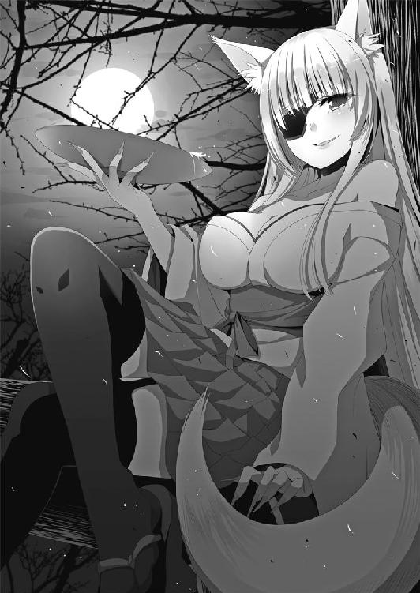
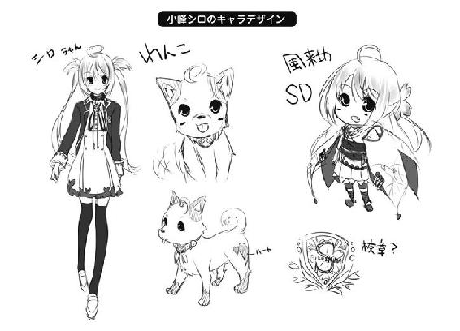

| 桜ノ杜ぶんこ おとめ桜の伝説 小峰シロの物ノ怪事件簿 | |
| くしまちみなと | |
| (2012) | |
桜ノ杜ぶんこ
おとめ桜の伝説
～小峰シロの物ノ怪事件簿～
くしまちみなと
★この物語はフィクションであり、一部の物を除いては、登場する団体・人物などの名称はすべて架空のものです。
★本書は、ノベライズとして構成するにあたり、元のキャラクター設定と一部異なる点がございます。予めご了承ください。
【一】
それは長く語り継がれる、おとめ桜の伝説──
陸奥国白河の阿武隈川と谷津田川の間に位置する小峰城は、南北朝時代に築城された由緒ある古きお城でした。
徳川幕府が日本を治める時代に入った寛永四年（一六二七年）、小峰城の新たな城主として移封された丹羽長重公は、幕府の命令によって城郭の大改築に乗り出した。それは小峰城が後に東北三名城のひとつとされるようになる大改築であり、東北地方では珍しい総石垣造りの城とするものでした。
しかし、本丸の石垣が、何度組み上げても崩れてしまうという問題に直面し、工事は難航を極めてしまったのです。
もたもたしていては幕命に背くこととなり、あらぬ疑いをかけられる可能性がある。
そのために、長重公はひとつの決断を下したのです。
それは──
身分の上下や
老若男女の区別なく、
築城現場を最初に通ったものを
人柱に選ぶ......
というものでした。
公の命に従った工事に従事する者たちは、誰が最初にここを通りかかるのか？ 息をのんで待ち構えていたのです。
やがてそこに一人の娘がやってくるのが見えました。
それは、この工事の指揮を執っていた藩士・和知平左衛門の娘の〝おとめ〟だったのです。驚いた平左衛門は、娘の〝おとめ〟を助けようと『来るな、来るな』と手で合図をしたのです。しかし、それを見た〝おとめ〟は、自分が招かれているものと勘違いをして、大急ぎで城内に入ってしまったのでした。
御触書には逆らうことができず、和知平左衛門は涙を呑んで愛娘の〝おとめ〟を人柱として地中地中深くに埋めたのでした。
〝おとめ〟の犠牲のおかげで今まで難航していた工事は嘘のように進み、本丸の石垣は完成したのです。
その後、人柱となった〝おとめ〟を悼んで、城の本丸の見晴らしのよい一角に墓を建て、その傍らに一本の桜を植えたのです。するとその桜は、小ぶりながらも見事な花を咲かせるようになり、人々はこれを〝おとめ桜〟と呼んだのでした......。
【二】
やがて歳月は流れ、〝おとめ桜〟は小峰城と共に戊辰戦争で焼かれてしまうという災厄に見舞われつつも、白河の人たちの努力により甦り、人々の希望の象徴として戦争で荒れた白河の街を見守り続け、その復興に力を与えたのでした。
そんな時、一匹の白い犬が、まるで〝おとめ桜〟を見守るようにその傍らに座り続けるようになったのです。その姿は、二度と〝おとめ桜〟を災厄で失わせまいとするかのようであり、白河の人々はシロと名付けてその犬をかわいがりました。
雨の日も風の日も〝おとめ桜〟の傍らを離れないシロ。
シロが年老いて静かな眠りにつくと、今度はシロの子どもたちの中の一匹がその代わりに〝おとめ桜〟の傍らに座り、〝おとめ桜〟と白河の街を見守り続けたのです。
何代にも渡って続く〝おとめ桜〟とシロの関係。
白河の人たちは、その穏やかな姿がいつまでもいつまでも続くものだと信じていました。
そして新たな子犬のシロが、この〝おとめ桜〟の傍らに寄り添うようになった春。いつものように〝おとめ桜〟の根を枕にお昼寝をしていたシロは夢を見たのです。
それは、見知らぬ女の子が、城下の町に下りて散歩をする夢──
ポカポカとした暖かい日差しを受けて、シロと同じように〝おとめ桜〟にもたれかかってお昼寝をしている夢。
それは夢──
目を覚ましたシロはキョロキョロと辺りを見回しましたが、そんな女の子はいません。
不思議な夢を見たなと思い、またまどろみの中に戻ろうとした時、シロの耳に、優しく囁くような自分の名を呼ぶ声が聞こえてきたのです。
顔を上げてシロが辺りを見回しましたが、その姿はありません。
──だれ......？
小首を傾げたシロに、その優しい声はもう一度語りかけてきました。
「シロ。こっちですよ」
耳を澄ましていたシロはその声のする方を見上げました。そこには、和服を纏った小さな女性が浮かんでいたのです。もちろん、人間が見たらその小さすぎる姿に驚いたかもしれませんが、シロはまったく気になりませんでした。
「シロ、わたしはおとめ桜の精です。分かりますか？」
「わん」
優しく澄んだ声にシロは一声鳴いて応え、嬉しそうに尻尾を振って見せました。
「シロ、あなたにぜひお願いしたいことがあります」
小首を傾げたシロの耳元までフワリと降りた桜の精は、小さな声でささやきかけたのです。
「わん？」
「私は長い間、この桜の木と共に町やそこに住む人たちの姿を見てきました。だけど、できれば城下町まで行ってこの目で見て歩きたいと思っていたのです。シロ......私と一緒に、城下町を散歩してくれませんか？」
散歩──
「わんわん」
シロは跳ねるように起き上がり、ブンブンと尻尾を振って了承しました。
「それでは少しの間、あなたの身体を間借りさせていただきますね」
そう桜の精が微笑むや、シロは真っ白な光に包まれました。
それは本当に短い間のできごとでした。
でも、その間にシロの腰の辺りに桜柄の模様が浮かび上がっていました。
「さあ、これで大丈夫。私はあなたの身体に憑くことでこの白河の町を見て回ることが可能になりました。シロは、重くないでしょう？」
「わん！」
シロは頭の中に語りかけられる桜の精の言葉に返事をひとつすると、小さな尻尾をフリフリしながら小峰城趾からおりる道を下っていったのです。もちろん、その背に小さな桜の精が乗っていることに気づく人はいません。
それは夢の中で見た光景であり、町を行き交う人々の中には普段、シロにご飯をくれたり、かわいがってくれる人の姿も見られました。町の人たちはシロを見つけると、『オヤオヤお城からおりてきたのかい？』と口々に言っては、シロの頭を撫で、オヤツをくれました。そんな彼らでもシロの変化には気づいておらず、ましてその背に乗ってニコニコと笑いながら町の人たちを見ている桜の精に気づいている人たちは誰もいませんでした。
でも、そんなことを気にしている余裕はシロにはありませんでした。シロはワクワクしながら桜の精を背中に乗せて街中を歩き続けました。
南湖や白河の関など、町の人から話に聞くだけだったたくさんの場所に足を運び、その綺麗さや趣ある歴史の場所を楽しんだシロと桜の精。
『シロ、次はドコに行きま......』
そう桜の精が言いかけた時でした。
ゴゴゴゴゴゴゴゴ......。
不気味な地鳴りが響き、すぐさま立っていることもできないほどの大きな揺れが白河の町を──いいえ、白河だけではなく東日本全域を襲ったのです。
『きゃっ！』
電柱が揺れ、建物がきしむ音が響き、町中を今まで耳にしたこともない物凄い音が包み込んだのです。
恐ろしさから立っていることもできず、路面にしがみつくように爪を立てて踏ん張っていたシロ。その目の前の道路にヒビが走り、地面に呑み込まれてしまうのではないかと思うほどの恐怖が襲ってきました。
それは今までに体験したこともないような地震。
長い時間続いていた地震がやっと静まった時、桜の精が悲鳴を上げたのです。
「シロ！ 小峰城が心配です！ すぐに戻りましょう！」
だけど周りを見回したシロは、驚きのあまりに立ちすくんでしまったのです。
シロの周りは今までの静かな町とは打って変わった恐ろしい風景になっていました。
家の塀が崩れて、道路や地面には亀裂が走り、裂けた水道管から水があふれ出していました。安全を確認する人たちの叫びが町中から響いていたのです。
「シロ！ 勇気を出してください！ 急いで」
シロは勇気を出して震える足を突っ張りながらなんとか立ち上がり、アスファルトに走っている亀裂を飛び越え、あふれる水に小さな足を取られつつ小峰城に向かいました。
シロにとっても桜の精にとっても大切な家に向かって！
人が集まっている駅前の広場。そこを脇に見ながら一目散に小峰城に向かうシロ。そのシロの胸には不安な気持ちが渦巻いていたのです。
小峰城から土煙のような物が舞い上がっており、湿った土の臭いがシロの鋭敏な鼻に感じられたから......。
『あぁっ！』
小峰城を目前にしたその時、桜の精の悲鳴が響きました。
急いで戻った二人の目の前にあったものは、石垣が崩れて無残な姿になった小峰城でした。
立木はなぎ倒され、お堀に石垣の石が散乱していたのです。
なによりも入口の門はその崩れた石垣の巨大な石でふさがれ、本丸の〝おとめ桜〟の所に上がることもできない様子でした。
『そんな......』
シロを見かけたお堀に住んでいた鳥たちがその周りに集まり、不安そうな様子で崩れたお城を見上げていました。
だけどそんな途方に暮れているシロたちの目の前で、駆けつけてきた消防隊の人たちの手によって小峰城の入口は封鎖され、本丸に入ることが絶対にできないようにされてしまったのです。
シロは悲しくなってそこに座り込み、お城を見上げて淋しい鳴き声を上げました。
そして何日も何日も、シロはただその場でお城を見上げ続けたのです。
シロの無事を確認した町の人たちの手によって、シロのための小さな小屋が建てられました。だけど、シロもその傍らに寄り添う桜の精も悲しさが癒えず、ただ閉ざされた小峰城を見上げていたのです。
『シロ......。わたしたちは、もう、帰れないのでしょうか？』
桜の精は悲しそうにそうつぶやきました。
シロも、ただ涙を流して崩れた小峰城を見上げることしかできませんでした。
後世に語り継がれる〝おとめ桜〟の伝説。改築の際に人柱とされたおとめさん。
その伝説と同じように、石垣が崩れてしまった小峰城。
『わたしたちが、小峰城から出てきてしまったバチがあたったのでしょうか？』
石垣を護っている〝おとめ桜〟の精がその場を離れたから、肝心な石垣が崩れてしまったのではないか？ そんな悲しい思いが桜の精を締め付けていたのです。
そんなことはない。
シロは懸命に首を振って桜の精を慰めました。
そんな時、いつもシロにご飯をくれるオジサンが、シロの頭を撫でながらこう囁いてくれたのです。
「見てろよ。ちゃんと、あのお城も直してやるからな。町もお城も、今まで以上に甦るから、ちゃんとご飯を食べて待ってるんだぞ」
シロと桜の精は驚きを隠せずに、シロの頭を撫でるおじさんの顔を見上げました。
こんなにも町は酷いことになっているのに、おじさんは笑顔を見せてくれていました。いいえ、おじさんだけじゃなく、その周りにいる白河の人々は絶望しきってはいませんでした。
「わん！」
シロの返事を聞いてにっこりと笑って立ち上がったおじさんは、町の片づけに戻って行きました。
『シロ......。私たちが泣いてばかりいてはいけませんね。町の人たちは、もうしっかりと立ち上がろうとしているのですから、私たちもしっかりしないといけませんよね』
「わん！」
桜の精の言葉にシロが頷き、鳴いた時でした。あの時と同じまぶしい光がシロを包み込んだのです。
『これは......』
まぶしい光の中を桜の花びらが舞い散っているのが、目をギュッと閉じていてもシロには分かりました。薄いピンク色の花びらの渦がシロの身体を包みその風の流れが縦に長くなっていくのがシロには感じられたのです。
普段の自分の身体よりも高く、長く......。
やがてその光は黄金色に輝きそして薄れていきました。
まぶしさが感じられなくなった時、シロはゆっくりと目を開いてみました。
いつもよりも高い視点に頭がくらくらしそうになり、あわてて脚を開いてバランスを取りました。しかし、なんとなく感じる不安定な感覚は、後ろ足だけで立っている気分──いいえ、実際に後ろ足で立っていたからなのです。
驚いたシロがゆっくりと前足を見ると、それは人間の手と同じ形になっていました。
──え？ えええ？
おそるおそるお堀の水をのぞき込んでみると、水鏡に映ったその姿は町に遊びに出る前に見た、夢の中に出てきた女の子の姿でした。
『驚きましたか......？』
頭に響く柔らかい桜の精の声。
彼女は今までよりもより薄くほとんど見えないような姿になって、人の姿となったシロの肩の上にふよふよと浮いていました。
「わん？」
『大丈夫ですよ。きっと、今のあなたは人間の言葉がしゃべれます。頭に思ったことを声に出してみてくださいな』
「ゎ......はい」
それは、今までシロが聞いたこともない、人間になった自分の声でした。
「これは......いったい？」
『白河の人たちの復興への想いが、小峰城と〝おとめ桜〟に集まっているみたいです。その想いの力が、あなたにも影響を与えたみたいですね』
「想いの力......」
「ふふっ。こうなると名前がないと不便ですね。う～ん、小峰シロというのはどうですか？」
「こ、みね......しろ？」
何度か口の中でその名前をシロは呟いてみました。今までもシロと呼ばれていたわけで、別に違和感は感じられませんでした。
『ふふふ。いい名前だと思いますよ。どうしてこうなったのかは分かりませんが、なにか私たちには大切な使命があるように感じます。でも、それがなんなのかまだ分かりません......。今は桜の木に帰れるように復興のお手伝いをしに参りましょう』
「はい！」
シロは新しく得た人の姿を上手に動かして、白河の町に向かって駆けていきました。
この時はまだ、白河の町に不吉な影が迫っていることを、シロも桜の精も気づいていませんでした。
おとめ桜の伝説、はじまります──
第二章 南湖の主
【一】
見た目はどうみても女子高生くらいの年齢にしか見えないし、重機などを扱う資格も免許も持っていないシロが復興のお手伝いをすると言っても、できることは限られていた。
だから、そんなシロが選んだ仕事は観光物産協会の観光ボランティアのお仕事だった。
その仕事内容は白河の町にきた人たちの観光ガイドをすること。白河の町を少しでも知ってほしいとＰＲするお手伝いをすることだった。
最初の頃は慣れない仕事に戸惑い、案内の言葉をカミながらしどろもどろの案内作業になってしまっていたが、数をこなす間にそれにも慣れ、今じゃ一端の観光ガイドとしてご指名をされることも多くなってきていた。
とにかく少しでも観光客に楽しんでもらい、より多くの人に白河にやってきてほしい。それを願って、今日もシロは観光ガイドを続けていた。
続けている......の？
「うぅ......」
カチャ......カチャ......カチャ......。
「うううううう......」
カチャ......カチャ......カチャ......。
「くぅぅううぅぅぅぅうぅぅん......」
カチャ......カチャ......カチャ......。
雨だれ打ちと言うのだろうか？
観光協会の事務所の片隅に、今どきの若い女の子にしては非常に珍しい両手の人差し指一本だけをノロノロ使う実にたどたどしい打ち方で、パソコンのキーボードを叩くシロの姿があった。
「うにゃああああああああああああああん！」
元が犬のはずだが猫のようなうめき声を放ち、ぷすぷす......と頭から煙を出して、シロは机に突っ伏した。その目はグルグルと回っており、その様子を傍らで見ていた桜の精はハァ...と小さくため息をついた。
『相変わらずシロは、パソコンを使うことに慣れませんね』
「しょうがないよぉ......。シロは、犬だから......」
ぷすぷす......と頭から煙を出し続けてグルグル回る目をしたまま、シロはボソリとそれに答えた。
「プリン......プリンが......。シロの再起動にはプリンが必要だよぉ......」
『プリンばっかり食べてると太ってしまいますよ』
「くぅぅううぅん......」
本気で情けない表情を浮べて、シロはジト目で桜の精を見上げた。
『いい加減慣れましょう。報告はほとんど定型の文章でできるようにしてもらったじゃないですか』
「シロは犬だから、慣れることなんてできないよぉ......」
血の叫びにも聞こえなくもないシロの反論に、桜の精はヤレヤレと小さく笑いながらまたため息をついた。
『ガイドのお仕事をしている時のシロは生き生きしているのに、〝ですくわぁく〟になった途端にシオシオとなってしまいますね』
「ふにゃああああ......。終わったよぉ......終わったから勘弁してぇ......」
なんとかプリントアウトして、ヨロヨロとした足取りで印刷した報告書を取り、それを事務担当のお姉さんに渡してから、シロはぐだぁっとノビてしまった。そんなシロを横目で見てクスクス笑いながら、桜の精は窓の外の町の様子を眺めた。
あの震災の日以降、ゆっくりとだが白河の町は復興の道を歩んでいた。
シロを怯えさせたアスファルトの亀裂はすでに修復され、壊れ崩れた民家の塀も撤去された。一見すると被災地という印象がないごく普通の町になりつつある。しかし、一目小峰城趾に目をやると、あの震災は現実に起こった悪夢だったのだと思い起こさせられてしまう。
無残にも石垣が崩れた小峰城。東北三大名城とまで呼ばれていた時のその美しい姿を憶えている者にとって、その痛々しい姿は涙を誘うものだった。〝おとめ桜〟の精である桜の精にとってはなおさらだ。
──あの石垣は、本当に元の姿に戻るのでしょうか......？
桜の精は不安を感じて仕方なかった。
〝おとめ〟という犠牲の人柱を求めて完成された石垣。あの石垣は、新たな人柱を得なければ修復されないのではないか？ そんな暗い不安が桜の精の脳裏をよぎる時があった。
不安はそれだけじゃない。
シロと共に観光ガイドをして白河の町を歩く桜の精は、市内のあちこちからなにかドス黒い意識を感じたり、重くのしかかる影のようなものを感じていた。それは町の一ヶ所からだけではなくあちらこちらから......。感じ始めた当初は、それはそれぞれが小さく薄いものだったが、時を経るに従い重なり合い、混じり合ったのかもしれない。次第に影は色を濃くし、悪意のようなドス黒いものを感じさせる存在になっていった。
その影が町中にあるから、もしかしたら小峰城の復興工事は難航しているのではないか？ 桜の精はそんなことを考えていたが、どうすることもできない今、余計な心配をシロにさせたくなくて一人胸の内にしまい込んでいた。
だが、そんな想いを抱えていれば自然と表情に暗い影が射し込んでくる。
「桜の精さん？ なにか心配事でもあるの？」
ハッとした桜の精は、そこに自分を心配するシロの顔があることに気づいた。
『え？ ああ......うふふふ。私が心配なのはシロの体重ですよ』
「ええええっ!?」
『今だってホラ......』
クスクス笑いながら桜の精は、いつの間にかシロが冷蔵庫から出してきたプリンを指さした。それはプリンが大好きなシロに、近所の女子高生たちが昨日の夕方に差し入れてくれた手作りプリンだった。
「は、早く食べちゃわないと、悪くなっちゃうから......」
『そう言って食べているのは、何個目ですか？』
「わん？ え、えと......四個目......かな.........」
『二日でそんなに食べちゃうなんて、食いしん坊ですね』
「うぅぅぅ......。で、でも、せっかくいただいたのにダメにしちゃうのは......その......」
食べちゃまずいのかとドギマギしながらプリンを前にオロオロしているシロを見て、桜の精は堪えきれずにプッと吹き出しかけ、あわてて口元を押さえた。
『うふふふ。そうですね。四ついただいた最後のプリンなのですから、冷蔵庫に入っていたホイップ・クリームをホイップして、上に絞って食べたらどうでしょう？』
「......!? わんわんっ！」
シロはそれはいい提案だと満面の笑顔を見せてプリンを置いてもう一度冷蔵庫前に戻り、そこに入っていたホイップ・クリームをボールと泡立て器を使ってホイップし、ペタペタとプリンの上にのせていった。クリーム絞りが無いために、プリンの上にクリームを山のように積み上げるしかなかったのはご愛敬だった。
別に他人に食べさせるわけでもないのでシロ的に問題ナシ。たっぷりのホイップ・クリームがのったプリンを食べられる幸せが味わえるのなら、見た目など気にする必要などない。
ペタペタペタ......。
シロは一心不乱にホイップ・クリームを積み上げ続けた。
『シロ。それは盛りすぎではないでしょうか？』
「ん？ そうかな？」
さすがにそれは積み上げすぎだろうと思った桜の精が注意した時、ぷっちんカップほどの大きさのプリンに対して、その三倍くらいの高さにホイップ・クリームが積み重ねられていた。果たして、ホイップ・クリームが主役なのかプリンが主役なのか、分からない謎なクリーム・プリンができあがっていたのである。
『まぁ、シロが好きならそれでいいんですけど』
「わんわんっ！」
チロッと舌を出してペロリと唇をなめてスプーンを手にしたシロが、いざホイップ・クリームの山に突撃しようとしたその時だった。
ズンッ！ という地響きを感じてシロの手が止まった。シロだけじゃない、桜の精の笑顔も凍り付いていた。
地震？ いや、あの震災時の恐ろしい感覚はない。
事実、観光案内事務所で働いているお姉さんたちの様子に変化は見られない。
つまり今感じた地響きは、シロと桜の精のみが感じたもの──
顔を見合わせた二人はあわてて事務所の外に出た。
『シロ、なにか感じますか!?』
「わんっ！ これがなんなのか分からない。でも、なんだか怖い気配が......」
シロは自分の毛が逆立っている気がした。
凄く感じるキケン。
東から感じるおぞましい気配に鳥肌が立つのを感じながらもその正体をつかもうと目を凝らしたシロの目の前を、妖しい気配が横切った。
『おやおや？ 物ノ怪の気配を感じたと思ったんだが......似ているが違うようだね？ 非力な子犬の妖しと樹木の精霊風情かい。まったく役立たずな組み合わせだねぇ』
姿が見えないがドス黒い悪意の塊のような気配は、シロと桜の精の目の前で立ち止まり、嘲り見下すような口調でそう語るや、目に見えない嫌なものを周囲に振りまきながらシロの目の前から走り去って行った。
時間にしたらほんの数秒だろう。
ソレに気づいた者はシロと桜の精のみだった。
「あれは......いったい......？」
『あんなものを白河の町に入れてはなりません！ あんな、悪意と恐怖しかない悪い気配を白河の町に入れてはいけないです！』
だが、どうしたらいいのか？
桜の精の言いたいことはシロにも分かっていた。あんなに嫌な印象を受ける気配や臭いを感じたことはシロが産まれてから一度もなく、シロの中の本能的なナニかがその危険性について近づいちゃいけないと叫んでいた。
つまりそれは桜の精の叫びのように、この白河に入れてはいけないモノということ。
どうしたらいいのか？ それは桜の精にも分からなかった。
なにもできない歯がゆさに行き場のない焦れったい思いをシロと桜の精が感じたその時、二人の身体に変化が訪れた。
あのシロが小峰シロとなったその時のように、シロと桜の精の二人は淡い桜色の光に包まれた。桜の花吹雪が渦を巻くように舞い飛び、光の中で二人の影をひとつにつなげていく。
桜吹雪が収まった時、そこに立っていた人影はひとつだけ。
どこかシロの面影を持ちつつも、凛とした雰囲気を漂わせた気の強そうな顔立ちをしており、髪の色は濃い桜色をしていた。そしてその身には白地と桜色の二重の羽織をまとっており、腰には桜の意匠を施した鍔を備えた日本刀が収められている。
『これはいったい......』
「私の名は桜花。私はあなたであり、あなたは私──桜花でもあるわ。白河の町を復興したい人々の想いをあなたの力で紡ぎ出し、私を形作ったのよ。かの者の悪意と戦うために」
桜花は脳裏に響いたシロの言葉にそう告げるや、悪意を振りまいた気配が去った方角をキッと睨み据えた。
「あの方角は......南湖公園ね。いくわよシロちゃん！」
桜花はそう言うが早いか、マントをひらめかせて白河の町を駆けだした。
【二】
白河市南湖公園──
ＪＲ白河駅から直線距離で南に約一キロちょっと歩いた所にある湖であり、日本最古の公園と伝えられている。その由縁は、西暦一八〇一年（享和元年）、楽翁と呼ばれる当時の白河藩主だった松平定信が造成したこの湖の地は、身分の差を越えて庶民が憩える『士民共楽』という思想を掲げられ、誰もが遊び楽しめる場所──つまり、公の園として開放したことによる。なお、大正一三年には国の名勝・史跡に指定されている由緒ある公園だった。
現在でも楽翁の思想は受け継がれ、白河市民の憩いの場所として四季折々に賑わいを見せている。
そんな場所に桜花は姿を現した。
桜花はＪＲ白河駅近くの観光案内事務所から走ってきたにもかかわらず、息を切らせた様子が微塵もなく、ただ軽い散歩をしていたような様子だった。しかし、湖畔に着くや彼女は油断のない目つきになり、キョロキョロと周囲を見回した。
「あの影は、間違いなくここにきたはず......。微かにあの嫌な気配を感じるわ......」
悪意と恐怖しかない悪い気配。桜花が桜の精であった時に感じたその気配は、まさに物ノ怪という言葉がぴったりな存在だった。
だがその強烈な気配は、今は微かな程度しか感じない。
「シロちゃん、なにか感じる？」
桜花は自分の中に存在しているシロに訊ねてみたが、シロは困った顔をして首を振るしかなかった。
『くぅぅ......。んー......今の状態じゃ、よく臭いが分からないかも......』
「ああ、それはそうね......」
桜花は腰に下げた刀──霊刀・白桜を引き抜くや、地面に映る自分の影の胸元辺りに、その切っ先で桜の花の形を描いた。
「勅っ！」
刀印を結びながらそう口にするや、影からシロがにゅにゅっと伸びる竹の子のように姿を現した。
「あれ.........これは......？」
「私の力を半分にしただけよ。そのせいで、ほら、影が薄くなってるでしょ？」
白桜を鞘に収めながら説明した桜花の言葉どおり、シロと桜花の影は確かに日中の陽光の下でできる影よりもかなり薄くなってみえた。
「それよりもシロちゃん。なにか感じない？」
「そう言われても......」
シロはヒクヒクと小さな鼻をヒクつかせたが、あの観光案内所の所で嗅いだ嫌な臭いは微かにしか感じられなかった。
微かに感じるということは、ここにあの嫌な気配の持ち主が立ち寄ったということが確実だった。だけど、肝心なソレがドコに行ったのかシロには皆目見当がつかない。
地面に残された微かな臭いは、まっすぐ湖へと向かって行って消えていた。
「うぅー......微かには感じるけど......」
なによりも、湖畔に建ち並ぶお店から漂ってくる南湖だんごの匂いがシロのお腹を刺激して、捜査の邪魔をする。
ググゥ......と思わず鳴ってしまったお腹を押さえて、シロはペロッと舌を出した。
「オヤツ前だったから、おだんごの香りがぁ......」
「もぅ。シロちゃんったら......。でも......そうね。おだんごを食べながら考えましょ」
「わんわんっ！」
二人は連れ立って湖畔の店に入り、外に出された縁台に座って陽に煌めく南湖の水面を見ながら、南湖だんごを注文した。
シロは〝あんだんご〟と〝ごまだんご〟。桜花は〝味噌だんご〟と〝きな粉だんご〟を注文し、それが用意されるまでの間、二人は湖を眺めながら出されたお茶をすすっていた。
「綺麗ね......」
湖を渡ってくる風が心地よく吹き抜け、桜花とシロの頬を撫でていく。
「こんな綺麗な場所に、あの物ノ怪はどんな用事があったのかなぁ......」
「そうね......。ちょっと謎ね......」
「はい。おまちどおさま」
二人は店主が縁台に置いただんごの皿に手を伸ばしてほおばりながらも、湖を見続けていた。
「シロちゃん。あの嫌な気配の主は、湖に消えてしまったの？」
「消えたというか、もしかしたら跳んで渡ったのかも......。駅から南湖に来る、楽翁様の像がある五郎窪の道からまっすぐ湖に突き当たった所で消えちゃったみたい」
シロの示した道筋は、白河の駅から南湖にくるためのルートのひとつであり、その道筋は桜花が走ってきた道と一緒だった。
道は湖にぶつかると丁字路となっており、右回りで湖畔を巡るか、左回りで湖畔を巡るかというルートしかないわけだが、シロの嗅覚は問題の物ノ怪と思しきソレがどちらの道も辿らず、まっすぐ湖に向かう形で消えたことを告げていた。
「空を飛べる物ノ怪かしら......？」
「さすがにそこまでは分からないけど......。でも、空を飛んで逃げられるのなら、ここで地面に臭いがついているのは不自然な気がするんだけど......」
確かにシロの言うとおりだった。
桜花が追ってきた道の臭いを嗅いだわけではないが、少なくともシロが桜花から分離してから嗅いだ周囲の道には、あの嫌な気配の臭いが残されいた。つまり、白河駅からここまでの間、地面を走って臭いを残してきたことになる。
飛べるならそんな手間をかける必要はない。
最後のおだんごを食べたシロは、口に串をくわえたまま、ジッと湖面を見据えた。
──...ッ！ なにかが......違う。
観光案内や散歩でここに幾度も訪れたことのあるシロだが、その時に感じた南湖の静かな光景と、今、目の前に広がる南湖の光景に違いを感じていた。
ドコが違うと口に出して言うことができないので桜花に説明のしようがないのだが、とにかく今までの南湖とはドコかが違っていた。
静かな湖面。
ちゃぷちゃぷと小さく打ち寄せる波。
そして、お腹を刺激するおだんごの香り。
どれもいつもと同じ光景と匂い。
──匂い？
シロは立ち上がり、鼻をひくつかせた。
「どうしたの？」
すでに万策尽きたと思い、お茶を飲んでのんびりモードに入っていた桜花は、突然立ち上がったシロに驚き身構えた。
しかし、なにかが現れた様子はない。
「桜花ちゃん......なにか......生臭くない？」
「え......？」
言われてみれば、確かに湖面から吹き付けてくる風は幾分生臭く感じるものがあった。それは桜花になる前の〝桜の精〟だった頃の記憶からも分かる。
なによりも、静かすぎた。
二人の耳に入ってくる音は、湖水を東に流す水路のせせらぎの音と、木々の葉が揺れる音。時折、湖畔を通る自動車の音。
普段は囀っている鳥たちの声がひとつもしない。
水面下の魚もひっそりと物陰に身を寄せ合っているのか、跳ねる様子も感じられない。
「鳥さんも鳴かないし、魚さんも静かにしている感じ......」
そうシロが告げた時、バシャリッ！ と湖面でなにかが跳ねる音がした。
「跳ねた......ね」
「わん？」
すべてはシロの気のせいだったのか？
だが、水面に残された巨大な波紋を見て二人は目を丸くした。
それは、岸全体に巨大な波を打ち寄せさせるほどのあまりにも大きな波紋。
「なに......アレは？」
バシャリッ！
もう一度巨大な水を打つ音が響いた。
今度は二人も見逃していなかった。
それは、ウチワのような丸い尾びれ。しかし、その尾びれはとてつもなく大きなものであり、シロの背丈よりもはるかに大きく見えた。
二人が湖畔に駆け寄ると、まるでそれを見計らっていたかのように、にわかに空が黒雲で覆われ雷鳴が轟いた。
「キャッ！」
「シロちゃん!?」
激しい地響きと伴う落雷にシロが驚いた瞬間、滝のような大雨が二人に向かって吹き付けてきた。
「これは!?」
まるで水の中にでもいるような感覚。
激しく打ち付けてくる雨に二人は目を開けていることもできず、腕を顔の上にかざして湖水の方を窺った。
雨でシロの鼻も利かなかったが、ソコに巨大なナニかがいるのは気配で察知できた。
ギョロリとした目。
パックリと開いた口。
黒く滑光る肌は、雨に濡れてより激しく雷を反射して暗い世界にその存在を際立たせていた。
「オーイ！」
ソレは湖からそう呼びかけてきた。
「いったい......」
「オーイッ！」
「えっ......はい!?」
「シロちゃんダメ！」
桜花の制止は一歩遅かった。
ソレの呼びかけにシロは応えてしまった。
「物ノ怪の呼びかけに応えちゃダメ！」
「そんなぁ！ 私、そんなの知らないよぉ......！」
その途端、雨足は先ほどよりもやや緩やかになった。
その弱くなった雨の幕から姿を現したのは、巨大なウナギだった。蛇の鎌首のように水面にもたげた部分だけでも数メートルはありそうな大ウナギ。
「ワシが寝ている間に、ずいぶんとやってくれたものだな......」
「私たちがなにをやったっていうの!?」
「とぼけおってええええっ！」
大ウナギが激しく身体を水面に叩きつけて生じた大波が、まるで生き物のようにシロに襲いかかってきた。
「危ない！」
間一髪、シロの襟首をつかんだ桜花が飛び退き難を逃れた。
波の中には透明なウナギたちが潜んでおり、立木の上に逃れたシロと桜花を金色の目で睨めつけながら湖に戻っていった。
「チョロチョロと動きおって！」
大ウナギはさらに伸び上がり、大きく水面に身体を叩きつけてさらに大きな波と無数の透明なウナギたちを放った。しかし、シロを抱きかかえた桜花は冷静にその波の流れを見据え、さらに高い木に飛び移るや、桟橋から流れてきたボートの上に飛び乗った。
「シロちゃん。力を分けたままではまともに戦えないわ！ 私に力を貸して！」
「ど、どうやって？」
「胸に手を当てて目を閉じ、白河を守ろうと念じるの。そして、手の甲に浮かんだ桜の紋を私の手の甲に浮かんだ桜の紋と合わせるのよ！」
迷っている余裕はない。
シロは言われるままに胸に手を当てて必死に『白河を守りたい』と念じた。何度も何度も......。すると、身体の中に熱いなにかがこみ上げてきた。
それは、白河の街を復興しようとする人たちの想い。
どんな天災にも負けず、挫けない人々の想いの力。
それを感じた瞬間、シロは胸に当てた手の甲に今まで感じたことのない熱さを感じて目を開いた。そこには、淡いピンクの桜色に輝く桜の紋様が浮かび上がっていた。
ボートの上で向かい合うように立っていた桜花の手の甲にも、また同じような桜の紋様が浮かび上がっていた。
シロと目が合った桜花はニコリと微笑んだ。それを合図に、シロと桜花はお互いの手の甲に浮かび上がった桜の紋を合わせた。
「さぁ、行くわよ、シロちゃん！」
その瞬間、二人を中心に弾けるように淡い桜色の光が周囲に放たれた。
光は黒く空に立ちこめた暗雲を払い、桜の花びらの渦が光と共に周辺に広がった。
「我が名は桜花！ そこに在りし物ノ怪ウナギよ。名があるなら名乗りを上げよ！」
光の中心に人影は桜花しかいなかった。
シロは、初めて桜花に変身した時と同様に桜花の中に取り込まれていた。
船上の桜花は引き抜いた霊刀・白桜の刃の背に左手を添えて眼前横一文字に構え、再び水面から鎌首をもたげた大ウナギを睨みつけた。
「ワシは大沼の五郎ウナギ。ワシが一眠りしている間に、よくも勝手に我が巣を好き放題にいじりまくってくれたな！」
「大沼？ ここは南湖ぞ？」
「うるさい、黙れえええええええええええええええっ！」
再び大ウナギは身体を大きく水面に打ち付け、無数の生き物のような波を桜花に向けて放った。だが、船上の桜花は微動だにせず、波が眼前に迫るやいなや一閃、真一文字に刃で波を斬り裂いた。
「話し合いで済ませる気はないということか!? よいっ！ ならば私も力尽くでそなたと話をするまで！」
桜花はボートを蹴って宙に舞い上がった。
それを水中で見上げた大ウナギは、空中から落下するのみの桜花を迎え撃ち、食い殺してやろうと水を蹴って飛び上がった。
「悪しき負の魂よ......試練を乗り越え、運命の歯車が動き出した今、もう止めさせはしない！ 草木よ風よ、桜よ花よ、我に力をっ！ 一の太刀・迅桜華っ！」
ザンッ！
ふたつの影は空中でぶつかり合った。
「昇りつめ、花となれ！ 明日を照らす光とならんことを......散花っ!!」
桜花は刃をパックリと空いた大ウナギの口腔に突き込むや、そのまま身体を反らして体勢を変えて唐竹割りよろしく、まっすぐウナギの身体を白桜で斬り裂いて湖に飛び込んだ。
刃を追うように朱の線が空中に伸び上がっていた大ウナギの身体に走り、そこから赤黒い煙が噴き上がると、その煙の勢いに押されるようにウナギは横倒しになった。
「ぷはっ！」
水中から顔を出した桜花は腹を見せて浮かんでいる大ウナギを横目で見つつ、そばに浮いていたボートに這い上がり、再び刀を構えた。
すでに暗雲は晴れていたが雨は小雨になりつつも未だに止まず、狐の嫁入りのように陽光が照る中、すべての妖気を洗い流すように降り続いていた。
「五郎ウナギ！ 目覚めよ！」
桜花が切っ先を向けるや、大ウナギは丸太のような身体をクルリと回して意識を取り戻し、呆然とした面持ちで言われるままに桜花の足下にやってきた。
「なにゆえに私を襲った？ 楽翁も御照覧の下ゆえ、正直に申せ！」
「ワシは、自分の住み家が荒らされたと聞いて、目覚めただけじゃ......」
そうポツポツと大ウナギは語りはじめた。
「ワシは大沼の主と呼ばれた五郎ウナギよ。かつてここはワシの沼だった......。だが、ワシが一寝入りしている間に、ここは水であふれてしまった。ワシを崇める者もいなくなってしまった......」
大ウナギはうつむき、大粒の涙をこぼしはじめた。
桜花の中で五郎ウナギの話を聞いていたシロは、この南湖が整備される以前はここが大沼と呼ばれる場所であり、五郎ウナギという主がいたという伝説を観光案内のために読んだ本の中にあったことを思い出していた。
『桜花ちゃん。このウナギさん、悪い人じゃないよ......』
「ええ、分かってるわ」
桜花は頷くと、霊刀・白桜を鞘に戻した。
「五郎ウナギ殿。誠に済まぬがここはそなたが不在の間に、楽翁こと松平公によって整備されて湖となった。そのために、そなたの伝説は消えて崇める者たちもいつしか失われてしまったのかもしれぬ......」
桜花に五郎ウナギは悲しそうな顔を向けた。
その時、柔らかな光と共に烏帽子を被り、羽織袴をまとった老人が水面に姿を現した。
『泣くな主よ。余は松平定信、楽翁じゃ。そなたが眠る間に、この沼の治水を手がけたことは誠に申し訳ない。が、湖となったこの場所への人々の信仰は今も変わらぬ。故にそなたの居場所はここにある』
柔和な顔つきの老人は、そう言うと五郎ウナギに微笑みかけて手を上げた。
その手が指し示す場所には南湖神社があった。
『余と共に、この地を守る要となってくれぬか？』
五郎ウナギは平伏するように頭を下げて畏まった。
「ウナギの身のワシにもったいないお言葉......。ありがとうございます」
ウナギの言葉に頷いた楽翁は、今度は桜花に顔を向けた。
『白河藩の鎮守をこれからも頼みますぞ』
「は、ははあっ！」
事の成り行きを呆気にとられて見ていた桜花は、慌てて船上に正座して頭を下げた。
『そのように畏まらずともよい。余とそなたは、民に求められてここに現れた者。畏まる必要はなにひとつない』
そう楽翁は微笑むと、大ウナギに手をさしのべた。
すると、数十メートルはありそうな巨大なウナギの身体は小さくなり、バレーボールほどの小さな水球の中に収まって楽翁の手の上にのってしまった。その様子は金魚鉢に入れられたただのウナギそのものだった。
『これより、余と共に白河を見守ってくれ』
「はい。その前に、ワシはその方とお話をしとうございます」
水球の中の五郎ウナギはそう楽翁に断ると、小さな丸い目を桜花に向けた。
「暴れてしまって悪かったね。ワシは楽翁様についていく故、もう暴れることはない」
「こちらこそ、斬りつけて済まぬことをした」
五郎ウナギはカプカプと口を動かし、そして顔を湖に向けた。
「もうワシには必要ないと思うが桜花殿の力にはなるであろう故に、この湖の精を預かってくれ」
「私に......？ 喜んで預かろう」
桜花が頷くと五郎ウナギが見ていた湖面から小さな──と言っても、直径が一五センチはありそうな銅鏡が浮かび上がり、クルクル回って水気を吹き飛ばすや、勢いよく飛んで彼女の手の中に舞い込んだ。それは、昨日作られたと思っても不思議ではないほど綺麗な鏡だった。
「じゃじゃ馬かもしれぬが悪い奴ではない。よろしく頼みますぞ」
「心得た」
『話が終わったようだねぇ』
「はい」
頷く二人の様子にニッコリと笑った楽翁は、五郎ウナギが入っていた水球をしっかりと抱えると桜花に目を向けた。
『なにか困ったことがあったら、余の所に参りなさい』
「は、はい！」
畏まった桜花が頭を下げ、再び顔を上げるとそこにはもう楽翁の姿も水球に包まれた五郎ウナギの姿もなかった。
だが、桜花の手の中にはあの銅鏡がある。
それこそ、南湖の主と戦ったことが夢ではない証拠だった。
『桜花ちゃん、これで......終わったんだよね？』
「ええ。シロちゃんと私で協力した甲斐あって、無事に解決よ」
そう桜花が笑うと淡い光が彼女を包み込み、その輪郭が一瞬ブレた。そのブレた輪郭が元に戻った時、彼女と向き合うようにして、桜花の目の前にシロが立っていた。
「私はなにもしてないけど......」
「私の力の根源は、すべてシロちゃんにあるの。シロちゃんを介して、この白河にいる人たちの想いの力を私は受け取ることができるのよ。だから、シロちゃんの力なしには、私はあの五郎ウナギに勝つことはできなかったの」
「そう......なんだ......」
なんだかよく分からない顔をしつつ、シロはふぅっ......とため息をついた。
物凄く怠いのは、たぶんあのウナギ退治をしたためだろうということは分かる。だが、それだけでは説明がつかないものがあった。
自分から桜花に向けてなにか力のようなものが流れていっている。それはさっきの説明で分かる。しかし、なんとなくもうひとつ、ドコか別の場所に自分の力が流れ出ている気がした。
そう、たとえるなら背後に──
ハッと振り返ったシロの目の前には、不思議な顔をして見上げている見たこともない女の子がちんまりと座っていた。
「だ、ダレぇ!?」
「どおもぉ～。あたしは鏡花。湖面に佇む青き詠い手っ！ シロちゃん、よろしくね！」
「はいいいっ!?」
シロも桜花もそろって思わず聞き返した。
彼女は白基調の一見千早のような服を着て、綺麗な水色の髪を後ろで結ってポニーテールにしていて、外見はシロとあまり変わらない年頃の女の子だった。あくまでも外見と言ったのは、彼女からは人間の気配が感じられなかったから......。
「あ～、もうお腹すいたなぁ。っていうか、上陸久々だから白河の人里がどうなったんだか気になってたまんないんだよねぇ～」
「あなたは......ダレ？」
「ダレはないでしょダレは!? さっき自己紹介したじゃん！ 名前言ったじゃん！」
「う、うん......ごめん......」
展開についていけず目を白黒させるシロに代わり、キツイ顔をした桜花が鏡花を睨み据えた。
「シロちゃんは、貴女がなにものなのかと聞いているのよ？」
「あたし？ あたしは、湖の精に決まってるじゃん、にひっ」
「湖の精？」
聞き返してハッとした桜花は自分の手元から、五郎ウナギから預かった銅鏡が消えていることに気がついた。
「まさか......」
「ようやく分かった？ あんたがシロちゃんと分離した時、あたしも出現させちゃったわけ。もう、五郎さんったら、六〇〇年も寝てるんだもの、正直キツかったぁ。主が寝コケて水から出ないんじゃ、もう、水の中に入ってるしかないからさ。退屈で退屈で仕方なかったわけ。オシャベリの相手もいないし、人里は面白そうに発展していくのに出て行けないしでさ～」
「ちょ、ちょっと待って......」
「なに？」
マシンガンのように流れ続ける鏡花の話をなんとか手で制したシロは、桜花と鏡花を交互に見て訊ねた。
「鏡花ちゃんって......桜花ちゃんと同じ感じなの？ 私のなんだろ......私を人間みたくした、この白河の町の人の思いに反応して、現世に現れた......」
「まぁ、そうじゃないかな？ なんでこうなったのか、あたしにもよく分かんないし。でも、ま、やることは分かってるから大丈夫大丈夫」
「やることって？」
聞き返したシロに鏡花はニッと笑って見せた。
「物ノ怪退治でしょ。この南湖の主を目覚めさせた悪い気配の持ち主を探し出して、白河から追い出すこと。違う？」
シロはなんと答えていいか分からず、困った顔をして桜花を見た。
だが、桜花もニッコリと笑って頷いた。
「そうね。鏡花の言うとおり、私たちはどうしてこの姿を得られたのかは分からないけど、その目的はひとつ。この地の人々の希望を奪おうとする悪しき気配の持ち主をここから追い出すためよ」
二人にそう言われても、シロはなんと答えていいのか分からなかった。
桜花は刀を持っているし、たぶん鏡花も同じようになにか武器を持っているのだろう。
だがシロはなにも持っていない。
元々は犬だし、今は不思議な力を得て人の姿に変化したにすぎず、なにか特別な力を持っているわけじゃない。
「私、大した力もないし。なにもできないよ？」
シロの言葉に、桜花は首を横に振った。
「ううん。シロちゃんがいるからこそ、私たちはここにいるのよ。きっと、シロちゃんがこの街を守りたいって思っているから、私たちはこの姿を得たの。だから、私たちがシロちゃんの力なのよ」
「そうね。少なくとも、あたし一人じゃあの銅鏡から出られなかったしね。シロちゃんがいないと、あたしらは誰も助けることができないのよ。だから、あたしらが人を助けるイコール、シロちゃんが人を助けることになるんだよね、これが」
「桜花ちゃんと鏡花ちゃんが人を助けると......私が......人を助ける......」
「そう。だからシロちゃん。自分はなにもできないなんて言わないで、ね？」
「そうそう。みんなでやれば怖くないってね！」
そう笑顔をシロに見せながら話す二人の言葉に、今度はシロも笑顔で頷いた。
「こんな私でも誰かを助けられるならがんばるっ！」
こうしてシロは、桜の精と湖の精というふたつの精霊の力を得ることで、これから白河ではじまろうとしている怪事件に挑む力を得たのだった。
第三章 四ッ谷の鬼
【一】
小雨が降り続く黄昏時。田崎洋一は郵便配達のバイクを押して歩いていた。
なんのことはない、ただのパンクだった。
だが、郵便局までの道はまだまだ遠く、軽いはずのバイクも妙に重かった。
レインコートの中の身体は汗ばみ、外聞を気にせずにいられるのならこんな物脱ぎ捨ててタンクトップにでもなってバイクを押したい気分だった。だがそういう訳にもいかず、洋一は額から滴り落ちる雨とも汗ともつかないものを、雨を吸って吸水能力などすでになくなった軍手で拭い、重いバイクを押し続けた。
──それにしても......。
こんなに不運が続いたのは、大学を出て入社してから五年の配達員人生の中でも初めてだった。
妙に濡れる雨。
そんな雨模様の中でのバイクのパンク。
そして原因不明のエンスト。
さらにどういうことかギアがニュートラルに戻らないためにバイクの車輪もロックしてしまい、バイクを押すというよりも引きずるという感覚が強かった。当然、疲労は最大限になる。
──くっそ......。
バイクをここに置いて、郵便物だけ抱えて配り歩いた方が早いんじゃないか？
そんな気すら起こってくるが、まだまだ積荷は多く、とてもじゃないが抱えて歩けるような量じゃない。
「はぁ......」
改めてそれを確認した洋一はため息をひとつついて、諦め顔でバイクを押しはじめた。
こうなると乗せてくれそうなトラックが通りがかるのを待ちつつ、押して歩くしかない。
もっとも今の不運具合だとこの先しばらくはそんな幸運が通りがかるようには、到底思えなかった。
そんな不幸の塊になっていた洋一の耳に、今まで聞いたことがない音が聞こえてきた。
シャワシャワ......というような米を研ぐ音に近い音。
どちらかというと、もう少し大きな粒のものを研いでいるように思える。
「なんだ......？」
汗と雨でびしょ濡れの額をもう一度軍手でぬぐいつつ顔を上げた洋一は、煙る雨の奥に、見覚えのない大きな岩のようなものが用水路そばにあるように思えた。
「落石......か？」
この所続いた雨で地盤が緩んだ可能性は高い。しかし、高さが二メートルはありそうな大きな岩が転がり出てきそうな山は、線路をひとつ越えた先にある堂ヶ作の山かその奥にある桜岡前山辺りになる。もっとも、そんな山から勢いよく転がり出てきたとしても、その途中には水田と畑があり、さらに東北本線の線路があるわけで、いくら巨石とはいえども水を張った泥田で足止めを食らわないわけはないし、さらに線路を飛び越えることはムリだろう。つまり、こんな場所にまで出てこられるはずがなかった。
じゃあ、いったいなんなのか？
迷った末、洋一はスタンドを立ててバイクを停め、近づいてみることにした。
場合によっては、役所に通報しなければならない。
バイクを押さないで済む身体と足取りは軽い。
重いバイクから一時だけでも解放された気楽さが、洋一の注意力を損なわせていたのかもしれない。
道脇の水路には人が座り込んでいた。
彼は雨に濡れるにもかかわらず、田んぼ脇の用水路で熱心になにかを洗っていた。
──なんだ、人か......。
妙に濡れる雨と疲労感から、人の大きさとかを見誤ったのだろう。
しかし待てよ。と、洋一は考えた。
田んぼの脇でなにかを洗っている人なら、この辺りの農家の人かもしれない。近所に住んでいるならトラックを貸してくれるかもしれない。
「あのぉ、すみません」
「..................」
聞こえているのか聞こえていないのか？ その人は相変わらず用水路でなにかを洗い続けていた。しかし洋一は気にもせずに言葉を続けた。
「郵便配達員の田崎っすけど。バイクが壊れちゃって押して歩くしかないんですわ。なんで申し訳ないんすけど、トラックを貸してくださいませんかね？」
「..................」
なにかを洗う手が止まった。
無愛想な農家の人なのかもしれない。
そんな安易な考えが洋一の中にあり、好印象を与えようと努めて笑顔を保ち続けた。が、愛想を考えるようになってやや気持ちが落ち着いてきたせいかもしれない。その座り込んでいる男性らしき人物のおかしさにようやく気がついた。
座り込んでいるにもかかわらず、立っている洋一と頭の位置が大して変わらないのだ。いや、大して変わらないどころか、一七〇センチの身長の洋一よりも背丈がはるかに大きく感じた。
「あの......」
それでも目の前にある人物のおかしさを洋一の中の常識が否定し、声をかけさせた。
その声に振り返った彼の顔を見た途端、洋一の笑顔は凍り付いた。
爛々と真紅に輝く瞳。口の端から上向きに突き出している尖った歯。うっすらと開いた唇の隙間からは、汚臭とも感じる生臭い息が吐き出されていた。
なによりも、眉間や目尻に深いシワを刻んだ凶相という表現では事足りないあまりにも激しい顔はドス黒い赤褐色の肌をしていた。
「うわわわああっ、わああああああああああああああああああっ！」
洋一の絶叫が小雨が煙る田園地帯にこだました。
【二】
激しいサイレンの音を鳴らして複数台のパトカーと救急車が駅前を通り過ぎ、付近の住民は何事かと窓や玄関から身を乗り出して、宵闇に消えていくパトライトの明かりを見送り、顔を見合わせた。
「何事ですか？」
「さあ......？ 誰かが阿武隈川に落ちたんですかねぇ？」
駅前に三々五々と人が集まり、あれこれと推測をしはじめたその時、自転車に乗った六〇代のおじさんが大慌てで駅前に集まる人の群に飛び込んできた。
「人死にだ！ 郵便配達の田崎さんトコの息子さんが殺された！」
この一言はあっという間に町中に広がった。
この噂はデマでしかなく、田崎洋一は生きていた。
しかし、この事件は不可思議なことがいくつも挙げられ、事態を重くみた市役所は市警を交えての緊急対策会議を開くこととなった。
第一発見者は農作業帰りの自営業・加藤一夫（六五歳）だった。
トラクターをのんびりと運転して、家に帰ってからの晩酌の肴について考えていた加藤氏は、ふっと目を上げた時、田んぼしかない草ボウボウの道端に郵便配達のバイクが停車していることに気づいた。
一般自動車やバイクは、たいてい一本向こうの道を通り、やや荒れていて狭いこの道を使うのは主に学生か自分たち農作業者でしかないことを知っている加藤氏は不審に思い、周囲を見回して『誰かいるんけ？』と声を掛けてみたが、いくら待っても返事がない。
どうもおかしいと感じて、加藤氏は乗っていたトラクターから降りて辺りを調べることにした。やがて数メートル先に倒れて意識を失っている田崎洋一（二七歳）を発見。その場で警察に通報した。
発見時に外傷はなかったが、胸部から腹部にかけて衣服が刃物ないし鋭いツメのようなものによって引き裂かれていた。この衣服の裂け跡は背面にもあった。
おかしなことに、明らかに刃物のようなもので腹部から背中を貫かれたような痕跡があるにもかかわらず、肝心の身体には刃物による傷はひとつもついておらず、転んだ時についたと思われる手の擦過傷以外に、傷は横腹にひとつだけだった。
これが女性なら、衣服が裂けていたことから乱暴されたなどという展開も考えられたのだが、被害者の田崎洋一は三〇近い、体格もかなりいい男性だった。
とにかく警察は人の手による暴行事件の他に、キケンな獣──つまり、猪や熊などによる獣害の可能性も取り上げた。
それは、唯一つけられていた横腹の傷が、巨大な歯形だったからだ。
外傷がないのだから田崎洋一が目覚めて詳しいことを話してくれるのを警察は期待したのだが、どういうわけか意識が戻らない。
いや、意識は戻っているのだが、まるでヌケガラにでもなってしまったかのように、洋一は目を見開いたままドコを見るでもなく、ものも言わず、身動きもしない存在になってしまったのだった。
人か獣により白河市内で引き起こされた、この猟奇的な事件。
そんなショッキングなニュースが翌朝には全住民の元に流され、好奇心混じりの暗鬱な空気が町中に立ちこめていった。
このニュースに興味を持った鏡花に背中を押されたシロは、促されるままに現場の田園地帯に向かって自転車を走らせた。
現場はニュース映像からだいたいの予想はついた。
白河駅から直線距離で東に二キロちょっとくらい行った所にある羅漢山から桜岡前山の麓辺りにある田園地帯であり、東北本線の線路が道路のすぐ脇に見えたことから、堂ヶ作付近と推測していた。
現場付近は未だ物々しい雰囲気に包まれており、警察や消防団の人たちで混み合っていた。
道は本当に狭く、なぜこんな場所を郵便配達員が通ろうとしたのか？ パンクして手押ししていたから、少しでも近道をしようとしたという被害者の事情が分からないシロは小首を傾げるしかない状況だった。が──
「くんくん......」
『シロちゃん？ どうしたの？』
急に鼻をひくつかせたシロに、彼女にしか見えない小さな姿になっていた桜花が訊ねた。
「くんくん......微かに、あの時と同じ嫌な臭いがするよ......」
『あの時？ って、あの南湖の時の？』
「うん......」
『南湖って......五郎ウナギさんが目覚めた時のこと？』
桜花と同じようにシロにしか見えない小さな姿になって同行してきた鏡花も、シロと同じように鼻をクンクンとひくつかせたが、シロほど鼻がよくない鏡花にはまったく感じられなかった。
「そう。あの物ノ怪が放っていた嫌な臭いみたい......。でも、もっと強烈な物ノ怪臭を感じる......」
物ノ怪臭という言葉に、鏡花と桜花は顔を見合わせた。
「なんだろう......。欲望とか......食べたいとか......。物凄く悪質な、自己中心的な自己主張みたいなものを感じるの」
『シロちゃんも、難しいことを言うようになったねぇ～』
「ゴメンなさい。よく分からないけど、とにかくそんな感じ」
『謎めいた物ノ怪っていうのは......ちょっとやっかいね......』
それ以上のことはなにひとつ分からず、シロたちはしばらくの間、遠目に捜査員たちの動きを見ていたが、近づけないのでは事件を調べることもできず、諦めて退散することとなった。
もしかしたら、警察がなんとかしてくれるかもしれない。
そんな淡い期待が打ち砕かれたのは、三日後の小雨が煙るように降りしきる朝だった。再び鳴り響いたサイレンとパトカーの群に、白河市の住人たちは嫌な予感に襲われた。
もちろん、その予感は的中する。
今度は阿武隈川河川敷の県道一三九号線の橋の下で、郵便配達員と同じような犠牲者の身体が発見されたのだった。
発見者は釣り人であり、被害者は一九歳の女性だった。
同じように衣服が裂かれ、横腹に歯形がひとつつけられただけで、それ以外の外傷は見当たらない。しかし、彼女は田崎洋一と同じようにヌケガラのようになってしまっていたのである。
第三の事件が発生したのは、その四日後の小雨が煙る夕暮れ時だった。
今度はもっと市街地に入った住宅街で発生した。
場所は市街中心部を流れる谷津田川を渡る乙姫橋付近で、近所には市役所もあることから今までよりも人通りがはるかにある場所だった。そんな場所であるにもかかわらず、目撃者は一人もいない。
なお、歯形は三つとも一致し、警察は記者会見の席上で人間の歯形に酷似した類人猿の歯形であると発表した。なぜそうなったのかというと、歯列こそ酷似しているがサイズがあまりにも大きすぎたせいだった。
歯形から推測された身長は、およそ三～四メートルの巨人。類人猿なら史上最大の霊長類であるギガントピテクスに匹敵する。これは、北アメリカでビッグフットと呼ばれるＵＭＡではないかとされている生物だった。
なぜ衣服を裂くのかは分からないが、そんなＵＭＡがいるのなら町興しに使えないかと盛り上がる人々もいたが、いつ誰が襲われるのか分からない状況では、そんなにのんびりしたことは言ってはいられなかった。
今でこそ人死の犠牲者が出ていないが、次に死者が出ないという保証はない。それに犠牲者の三人は未だにヌケガラのような状態であり、笑い話で済まされる事態ではなくなっていた。
警察は連続猟奇事件の犯行者ないし動物が市街をうろついていると判断し、市民に夜間外出を控えるように呼びかけはじめた。
「って、言ってもねぇ～......」
陽が暮れはじめて紅く染まった街の様子を観光案内事務所の窓から実体化した鏡花が覗いていると、パトカーが目の前を横切っていった。『暗くなる前に家に帰りましょう』という感じの放送を流しながら街中を回っているのだ。
三番目の事件から四日が過ぎていたが、未だに犯行者について分かっていることは少ない。
そして、今、夕陽が沈みかけている様子が見えるにもかかわらず、結構な雨足の雨が降っているという狐の嫁入り状態だった。
否応なしに、アノ不思議な事件が起きるのではないか？ という不安が市民の中に浮かんでくる。
「警察サンに任せようと思ったけど、なかなか大変みたいだねぇ～」
「仕方ないわね。物ノ怪相手では手も足も出せないだろうし」
鏡花と同じように桜花も実体化していたが、事件の手がかりを警察に押さえられているために手も足も出ないのが現状だった。
「うぅ～。三つの事件の共通点って、なんだろぅ？」
一人、お行儀悪く机の上に座り込んでいたシロは、考えすぎて脳みそがパンクしそうな顔をしつつ真剣に悩んでいた。
「そりゃ～......」
「まず、小雨が降る夜に行われているということ。三件の事件に共通する最大のポイントはここね。そして、今日も小雨が降っている、と......」
外は未だに霧雨のような細かい粒の雨が降り続いていた。
つまり、これが共通点なら、今日、どこかで誰かが襲われるということになる。
「それから......鉈か斧のような刃物を持っていることかなぁ？ 確か、おまわりさんがそんなことを言ってた気がするけど......」
「そうね」
小雨が降っている夕暮れ時から夜の犯行となると、歩行者はほとんどいないのかもしれない。車に乗っている人も、いちいち歩行者の様子など見ていないだろう。
「もうひとつ共通点があるよっ。川のそばでの犯行～ってやつ」
「ん？ でも、それは一件目の犯行には合致しない気が......」
「そうだっけ？ あれぇ～？ 近くに取水路が流れていたから、川があるって思ったのかな」
「そう......ね。農業用水路まで川に加えたら、犯行範囲はとんでもなく広くなっちゃうしね」
「でも、水が近い場所っていうのは共通点に入れていいと思うけどなぁ～」
「あ、それじゃあ、川ですることって......なんなのかな？」
新たなシロの質問に鏡花が答えた。
「なにかを洗うことが一番かなぁ？ それから流す感じ？」
「なにを洗うのかしらね......」
「え～と、鉈とか～......斧とか？ なんてねっ」
ゾッとする答えを鏡花が口にした。
殺人鬼が鉈や斧を洗うと言ったら、当然、それは犯行後の血糊を洗い落とすためということになるだろう。だが、今回の事件で斬られた者は一人としていない。
「ちょっと待って......」
シロの質問でなにかを思いついた桜花が、青い顔をしながら書棚に向かい、そこに観光資料として収められていた白河市教育委員会が出していた『教育のひろば』という冊子を取り出した。
「ついこの間、シロちゃんの観光案内の案内説明文を作る手伝いをしていた時、見つけた民話があるの」
「どんな民話だったの？」
「あまりにも観光には向かないと思って話さなかったんだけど、四ッ谷の鬼という、人食い鬼の伝説よ......」
「そういう大事なことは早く思い出してよ～ん！」
「仕方ないじゃない！ だったらあなたがその優れたお知恵で思い出せばよかったでしょ！」
「ケンカしないで、シロにも分かるように話してぇ！」
興奮した息を整えてから、桜花は白河に伝わる人食い鬼の伝説を話し始めた。
それは、いつの時代のことか分からない......。
白河の城下町造成の時のことだったというから、現在の小峰城が建造されてからの話なのだろう。造成時に堀川から分水し、四ッ谷から街の道路中筋の掘割に水を引く運河を作ったのだという。
しかし、その当時の運河の治水はあまりよくなく、雨が激しく降ると、時おり水があふれることがあったらしい。そのために、逆川という川にあふれかけた水を流し、四ッ谷の杉の木立のところで大谷津田川にその水を落としたのだという。おかげで城下町の水利はよくなったが、大雨になるとその杉の木立付近では川音が激しくなるようになったらしい。
そんな時、なにやら歌う声が聞こえるのだという。
「アズキデモトギマショカ、ヒトデモクイマショカ」
雨が降り、杉の木立の所で川が荒れる時、そこに人がこないことをいいことに鬼がやってきて、小豆を研ぎながら、川が荒れているというのに親の指図も聞かず、川遊びをしている子どもが流されてくるのを待っているのだという。
「そ、それでっ!?」
そこで話を切った桜花に話の続きを早くするように身を乗り出して促した鏡花に対して、桜花は気むずかしい顔をして首を横に振った。
「この鬼が退治されたという記録はないわ。今の所はね......」
「なんっ......」
「鬼はただそこにいて、小豆を研ぎながら子どもが流れてくるのを待っているというのがほとんどみたいね。中には、雨に紛れて子どもを攫ってくるという言い伝えもあるようだけど、基本的に鬼は子どもを攫い食べるということらしいわ」
「じゃあ、もしかして......」
桜花はシロに顔を向けて頷いた。
「そうね。この前の南湖の主殿のように、あの嫌な気配の物ノ怪によって、なんらかの形で眠っていた鬼が目覚めてしまった可能性があるわ」
「とにかく、その四ッ谷の杉木立の所に行ってみようよ！」
机から飛び降りたシロは、観光案内用の町内細密地図を開いて四ッ谷という地名を探してみた。
すると、意外にも簡単に地名は見つかった。しかし、その四ッ谷には肝心の川がどこにも見当たらなかった。
「あ、川がないよ！」
「じゃあ、やっぱり川は関係ないのかしら？」
川が関係ないとなると、この四ッ谷の鬼は今回の事件とは無関係という可能性が高くなる。桜花はあわてて白河に伝わる民話・伝承の本に再び手を伸ばした。
「シロちゃん、そこの四ッ谷じゃない場所はっ!?」
その間、シロと鏡花は懸命に白河の地図を見回し、さらに索引を見回して四ッ谷という地名が別に無いか探し回った。
しかし、四ッ谷という地名はそこにしか存在しない。
まして、当時の城下町の掘川の分水なのだから、小峰城からそう遠く離れた場所であるはずがない。
「ここしかないと思う。とにかく、ここに行ってみようよ！」
「ちょ、ちょっと待って！ アテもないのに闇雲に出歩くのは......」
シロを制止しようとした桜花の手を取ってシロは首を横に振った。
「行ってみる価値はあると思う。だって、この四ッ谷って、近くに保育園も小学校もあるんだよ。子どもが集まっている場所なんだよ！」
シロの言葉に桜花はあわてて地図を見直した。
確かに、四ッ谷のすぐ隣には保育園も小学校もあった。
「......そうね、急ぎましょう！」
三人は逢魔ヶ刻が差し迫った小雨が煙る白河の街に飛び出した。
【三】
雨の中、傘も差さずに駆け通した三人が四ッ谷にたどり着いた時、すでに陽は沈んだものの西の空がオレンジ色に染まって太陽の余韻が残されている逢魔ヶ刻になっていた。
とても薄暗く、そして人の輪郭がつかみづらい嫌な時間帯だった。
「杉の木ってどこ!?」
四ッ谷という地区は非常に小さなブロックであり、民家が三〇戸ほど固まった地域でしかない。そんな小さな地区であるにもかかわらず、問題の杉の木立が見つからなかった。
なによりも、そこに川など一筋も流れていない。
「あれれ～、どうなってんの!?」
「私も分かんないよぉ～」
あわてながら四ッ谷を右往左往していたシロたち。その時、シロの耳が念仏のように呟く声を拾い当てた。
「静かに！」
桜花が即座に鏡花の口を塞ぎ、シロに向かって頷いた。
もちろん、鏡花もここにきて暴れるはずもない。
静まりかえった住宅街。
ジッと耳を澄ますシロたちの耳に入ってくる音は、小雨がシトシトと地面を打つ音。
そして、先ほどシロが拾い当てた念仏のような小さな声。
「アズキデモトギマショカ、ヒトデモクイマショカ......。アズキデモトギマショカ、ヒトデモクイマショカ......」
ゾッとするような声の主は、四ッ谷に建てられた火の見櫓の足下にボウッとその巨大な姿を現し、ノッソリ、ノッソリと歩き出した。
──あれが、四ッ谷の鬼......!?
それは、筋骨隆々とした身の丈三メートルを優に超えるような鬼だった。
秋田県に見られるナマハゲのようなボサボサの髪をしており、その髪の暗がりに爛々と金色に光る目が見えていた。元々は墨染めの袈裟だったようなボロボロの和服を着ているが、片脱ぎして右上半身は裸の状態だった。
腕が異様に長く、前屈みになってダラリと垂らしたその右手に巨大な鉈を持っていた。
「シロちゃん！ 鏡花！ 融合して！」
鏡花が頷き、その身を桜花に預けようとしたその時、シロの耳がもうひとつ、別の動く音を背後に捕えた。
パチャパチャと、水たまりを蹴って走る子どもの足音。
「だめぇ！」
鬼が走り出すのとシロが飛び出したのはほぼ同時だった。
こちらに向かってやってきた小学校三年生くらいの女の子がおり、彼女は道に立つ鬼の姿を認めて凍り付いたように立ち尽くした。その子に向かって鬼が走る。
鏡花と融合した桜花が霊刀・白桜を横構えにしてその行く手を阻んだが、物凄い勢いで薙ぎ払われた大鉈に桜花ははじき飛ばされ、民家の壁に叩きつけられた。
「ぐっ！」
しかし、その一戦した僅かな時間差と数メートルだけシロが子どもに近かったことが幸いし、驚き立ち尽くした女の子を鬼より早くシロが抱きかかえるや、全速力で走り出した。
──犬の身体なら、もっと早く駆けられるのに!!
だが、さすがにシロの小さな犬の身体では、この子を背中に乗せて走ることはムリだった。
シロは水たまりに足を滑らせながらも、とにかく鬼から離れようと懸命に走った。
そして鬼は、ヒクヒクと長い天狗のような鼻をヒクつかせたかと思うと、金色の目を血走らせて恐ろしい勢いでシロの後を追い始めた。
『桜花！ しっかりして！ シロちゃんが危ないよ！』
「くっ......」
壁に叩きつけられて意識を失いかけていた桜花は、脳内で叫ばれる鏡花の声でかろうじて意識を保ち、軽く頭を振って立ち上がった。
「このっ！」
桜花は逃げるシロの背中を見つけ、そしてそれを追う鬼の背中を睨み据えた。
その先には小学校があり、まだ教室には明かりが灯っていた。
生徒たちが残っているのだ。
「なんで、警察の言うことを聞かないのよ!?」
『親の迎えを待っている子たちがいるのかもしれないよ。早く！ 早く追いかけよう！』
桜花は白桜を一振りして刃についた雨水を払うや、鬼を追って駆け出した。
「アズキデモトギマショカ、ヒトデモクイマショカ......。アズキデモトギマショカ、ヒトデモクイマショカ......」
シロを追い続ける鬼は、無感情な声でただただその言葉を繰りかえし呟き続けていた。
そんな薄ら寒い呪詛にも似た呟きを背中で聞きつつ、シロは学校の門を飛び越えて敷地内に入り込み、転がり込むように学校の玄関に飛び込んだ。
その瞬間、雷鳴が轟いて稲妻が走り、ズズンッという激しい地響きが周囲に走った。
そして、辺りは真っ暗になった。
「えっ!?」
いきなりの停電に戸惑いつつ、シロは目の前の状況がさらに悪化していることに気がついた。
校舎の中には、最近の町の状況から親の送り迎えを待つ子どもたちが何人も残されていたのだ。当然先生もいたが、誰もが突然の停電と乱入者であるシロに怯えた目を向けていた。
「あなた、誰です!?」
年配の女性教員が、そこに集まる一〇人くらいの小学生たちをかばうようにシロの前に立ちはだかった。そして、シロが抱きかかえている子に気がついた。
「あなた、その子をどうするつもり!? 離しなさい！」
前門の虎後門の狼ではないが、前門の小学校教員、後門の鬼という状態だった。
「私は小峰シロです！ 観光案内をしています！ そ、そこに鬼が！ 早く、早く逃げないと！」
「鬼って......」
なにを言っているのと訝しげな目線を先生がシロに向けた時、ギギーッと軋む音を立てて、ノソリと異様な気配が玄関のドアを潜り抜けて入ってきた。
巨大で禍々しい気配。
停電の暗闇にその両眼が爛々と輝き、黒い畏れを周囲に振りまいていた。
シロはとにかく抱きかかえていた女の子を先生に預け、彼女たちを庇うように両手を広げた。
「先生、早く。学校の奥に！」
「で、でも......」
金色に光る鬼のひと睨みで身体が怖気に支配された子どもたちは、身動きひとつできなかった。彼らをなんとか引っ張って校舎の奥に連れて行こうとしても、身体が動かない者を動かすことは中々できるものじゃない。
「アズキデモトギマショカ......、ヒトデモクイマショカ......」
シロも手伝えば、もしかしたら子どもたちを動かせるかもしれない。だが、今、この鬼に背中を向けたら、その巨大な鉈を振り下ろされかねない。
──桜花ちゃん。鏡花ちゃん。助けて！
シロは鬼を見据えつつ、必死になって心の中でそう叫んでいた。
その声に応えるように、バンッと激しい勢いで玄関のドアが開き、ダダッと駆け寄る足音が聞こえるやいなや、振り返ろうとした鬼の頭に桜花の跳び蹴りが炸裂した。桜花は着地の勢いのまま床を滑ってシロと鬼の間に入り込み、刀を構えて立ちふさがった。
「シロちゃん、無事っ!?」
「わんっ！」
シロはこの時ほど尻尾を振りたいほどに嬉しい気持ちになったことはなかった。絶体絶命のピンチになった時、必ず二人はシロを助けにやってきてくれる。それが確かめられた瞬間だった。
しかし、状況はあまり好転したようには見えない。
桜花の跳び蹴りを受けてやや前につんのめったものの、鬼は倒れることなく返す動作で大鉈を逆袈裟斬りに振り上げて桜花を斬り裂こうとした。が、間一髪の所で桜花はその凶悪な刃をかわし、空振りして振り上げられた大鉈の刃は学校の天井をわずかに破壊した。
飛び散る蛍光灯のガラス片とコンクリートの瓦礫。
天井に穴こそあけなかったものの、その破壊力は尋常ではなかった。
こんな化物とどうやって戦ったらいいのか？
桜花と鏡花は焦っていた。完全にシロと融合した状態ならフルパワーで戦えるが、現在のシロの身体を借りない状態では、桜花は自分の力を出し切れない。かといって、シロが子どもたちを庇わない訳にはいかない。
──どうすれば、いい？
『桜花ちゃん。こういう刀の使い方はどうカナ？ にひひっ』
桜花の脳裏で鏡花が耳打ちしてきた刀の使い方。それは、桜花が最近ネカフェで読んだお気に入りのマンガでも使っていた技のひとつだった。
しかし、この狭い屋内での戦い方としては、正しい刀の使い方にも思えた。
それ故に桜花は頷き、鬼に向かって半身の姿勢を取り、腰を深く落とした。そして刀は左手のみで持ち、刀身は地面と水平に保ちつつ体の後ろに置き先端を鬼に向ける。右手を前に突き出して刀身にやや重なるように軽く添える。
このまま突撃すれば、果たして読んだマンガのとおりの威力を発揮するだろうか？ いや、発揮はしないだろうが、飛び込み突き技としては十分に使えるように桜花には思えた。
いや、このままジリジリと引き下がりつつ学校の廊下に引きずり込めば、突き技しか使えなくなる。対する鬼の武器は大鉈であり、突き技には使えず、その戦い方は大振りするしかない。それでは、狭い廊下では戦うことができない。
「シロちゃん。ゆっくりでいい。廊下の奥に引き下がって」
「え？ うん！」
シロと先生は凍り付いたように身動きができないでいる子どもたちをゆっくりと廊下の奥に引き寄せ、押し込んでいった。その動きに合わせるように、桜花はジリジリと引き下がる。
その動きの意図に気づいたのか？ それともただ焦れてきたのか？
鬼は大きく鉈を振りかぶって攻撃を繰り出してきた。が、桜花が先制して突撃し、激しい突きを入れて、引き抜く軽い円運動の動きで鎬を使って振り下ろされた大鉈の勢いを殺しながら受け流した。
──使える！ けど、私の体重では大した傷を負わせられない。
筋骨隆々な鬼の身体に、確かに白桜の切っ先は突き刺さった。しかし、その傷は小さなものであり、刺さった当初は見えていた傷も、あっという間に筋肉の収縮で出血が止まり傷口が見えなくなっていた。
「もう一度、やる！」
再び桜花は半身の突き技の構えを取った。
鬼もその構えから繰り出される突き技の方が速度的に有利だと分かったのか、鉈を身構えたまま身動きを取ろうとしない。
桜花に先制させ、それの動きに合わせて鉈を振り下ろして刀を折ろうという算段なのだろう。
二人は睨み合ったままで身動きひとつ取ろうとせず、ジリジリと時間だけが流れた。
どれくらいの時間が経っただろう？
桜花の額に球のような汗がいくつもわき上がり、それが筋になって流れ落ちていた。
そんな緊張の糸を切ったのは、鬼の方だった。
「アズキモトゲズ......、ヒトモクエズ......。マタクイニコヨウカナ......」
そう呟くと鬼は武器を降ろし、桜花に背を向けて歩き出した。
「え......」
鬼が玄関を出た時、すでに雨は上がっており、その出たタイミングを見計らっていたかのように電灯が灯って停電がおさまった。
「うわああああああああああああああん！」
恐怖に必死に耐えていた一年生らしき子どもが泣き出すと、それに釣られるように他の子どもたちも泣き出していた。オロオロしてなだめる先生とシロを横目に見つつ、桜花はホッと胸を撫で下ろした。
──あのままでは、私は勝てなかったかもしれない。
『じゃあさ、次はあたしがやってみようか？ って言っても、あたしの術でもアイツと戦うのは難しいかな......。とにかく、追い払えたんだしぃ、対策は後で考えよう。とりあえず、お疲れさま～！』
桜花は脳裏に響く鏡花の言葉に頷きつつ、鬼が消えた宵闇の奥を見据えた。
「雨がやんだから、帰って行ったのね......」
『あたしもそう思うなぁ。雨が降っている時しか、あいつは現世に現れることができないんだよ、多分』
想像していたとおりの出現条件だった。だが、それが分かったからと言って素直に喜ぶことは桜花も鏡花もできなかった。出現が分かっても戦うことができないのなら、まったく意味がない。今回はシロと融合していない状態で戦ったから、霊刀・白桜の威力も落ちていたことは認められる。しかし、仮にシロと融合して白桜の霊力を高めたとしても、あの鬼を調伏できるだけのパワーを打ち込める自信が桜花にはなかった。
──次の雨の時、鬼は必ずここを狙う。
それを桜花は確信に近い思いで感じていた。
マタクイニコヨウカナ......は、それを宣言する言葉なのだろう。
この次、シロを含めた三身融合で戦ったとして、あの鬼に勝てるだろうか？
一抹の不安が、桜花の心によぎっていた。
『ああ、そうだっ。ちょっと分離するね～』
そう言うが早いか、桜花の身体から鏡花が飛び出した。
「どうかした？」
「んー。たぶん、ここにいるみんなに言っておかないといけないことだと思うんだ」
よく通る鏡花の声に、ようやく泣き止んだ小学生たちが不安そうな面持ちで振り返った。
「ゴメンね。お姉さんと約束してほしいんだ。次に雨が降った時も、今日のようにこの学校に残っていてほしいのっ！」
誰もが息を飲む鏡花の宣言だった。
「ちょ、ちょっと待ってください。あなた、自分がなにを言っているのか分かっているんですか!?」
年配の女性教員がややキレかけた声で叫んだ言葉に、鏡花は残念そうに頷いた。
「分かってるよ。でもね、今ココにいる子たちの誰かがさっきの鬼に狙われたんだよ。あたしたちが守ってあげるにしても、その誰かがどの子なのか分からないしね～」
「な、なんですって！」
「さっきの鬼は、最後に『また、喰いにこようか』と言って去ったんだよ？ それは、この学校に喰いにこようか～なのか、それともここに集まった人たちを喰いにこようか～なのか分からないってことだよ。だから、みんなを守るためにも、雨が降ったらここから出ないでいてほしいの。」
「そんな......。そんなことって......」
女性教員は自分の生徒たちを見回し、そしてなんと言ったらいいのか分からないという顔をして鏡花、桜花、そしてシロの順番で顔を見回した。
「えっと......た、確かに鬼に狙われたかもしれません！ でも、桜花ちゃんがさっき追い払ったのをみんなも見たでしょ！ 必ず、必ず次もみんなを守ってくれますから！ だから、だから私たちを信じて次の雨の時もここに残ってください！ お願いします!!」
シロは深々と頭を下げ、桜花と鏡花もそれに倣った。
ここ以外の場所に鬼が出現したら、打つ手がなくなってしまう。
次の犠牲者をださないためにも、それだけはどうしても避けなければならなかった。
【四】
翌日の予報は夕方から雨だった。
打つ手がないまま最悪の状況に突入しそうな予感に、朝から桜花も鏡花も落ち着きがなかった。
「雨が降っているんなら、あたしの出番だねっ！ あの鬼にあたしの実力を見せてあげるっ！」
「それはそうですが......」
桜花はなんと言っていいのか分からずに口ごもった。
霊刀・白桜の突きが防がれた今、確かに試す価値はある。だが、もしもそれが同じように大して効果を示さなかったらどうしたらいいのか？
もうひとつ、桜花には心配事があった。正しくは、鏡花も心配しているのだが......。
昨夜、観光案内所に戻ってから、シロの様子がおかしかった。
どこかボウっとしているというか......心ここにあらずな様子であり、今もプリンを冷蔵庫から出してきたものの、一口食べてスプーンを口にくわえたまま、ここではないドコかに視線を漂わせていた。
「シロちゃん。どうかしたの？」
「んー......」
「ホント。シロちゃん、戻ってきてからなんだか変だよ？ どしたぁ？」
「んー......」
生返事しか返さないシロに、二人はどうしたものかと顔を見合わせて肩を竦めた。そんな時、ようやくシロが返事をした。
「私を......どこかで呼んでいる声が聞こえるの......」
「シロちゃんを......呼ぶ声？」
「うん......。ここよりもずっと南で、私を呼ぶ声が聞こえるの......」
「ずっと南......？」
そう言われてみると、シロの目は昨日からずっと南の方を探すようにさまよっていた。
南になにがあるのか？
鏡花は四ッ谷を探すために地図を開き、白河市全域とそしてその南にある栃木県との県境付近を調べてみた。
近場であればシロもここと言えるのだろうが、それが言えないほどに遠い位置にある。
地図を開いた時、シロに呼びかける声ということで鏡花は那須岳の殺生石に眠る九尾の狐を思い浮かべたが、地理的に那須岳は白河市から見ると南ではなく西に聳える。ということは、ここから南方に位置するところにあるドコかに、シロの名を呼ぶ誰かがいるということになる。
──昨日の鬼の仲間では......？
そんな思いもなくはなかったが、それならシロはこんな顔ではなく緊張した警戒の顔をするはずだった。
「楽翁様がお呼びになっているのなら、もっとハッキリと分かるだろうし......」
「だとすると、もっと南かなぁ～......」
鏡花の指先が地図を走り、一点で止まった。
そこは〝白河関跡〟。
観光史跡としては南湖と並ぶ白河市の目玉であり、奥州三古関のひとつに数えられる東北関所のひとつ。和歌の歌枕としても有名な場所であり、文学界で都人の憧れの地として、中古三十六歌仙に数えられる能因法師や、西行法師、そして松尾芭蕉などの時代を代表する歌人や俳人が多くの歌を残した場所。
湖の精の鏡花が南湖にいたのだから、この場所にもシロに協力しようとするなにかがいてもおかしくはない。
「シロちゃん。そこは、白河の関じゃないかしら？」
その名前を聞いてシロはハッとしたように顔を上げた。
「シロちゃんの名前を呼ぶ声の主がもしもそこにいるんなら、あたしたちに協力してくれるかもしれないよ！ だって一三〇〇年くらい昔から、ずっとこの白河を守ってきてくれた場所なんだもの！」
シロは頷き、鏡花の開く地図を覗き込んで位置を確認するや、大急ぎで自転車置き場に向かった。
駅前の観光案内所から南へ約一一キロ。自転車で一時間ちょっと行った静かな山間の地に、白河の関は存在した。現在、その周辺は〝白河関の森公園〟として整地された観光地兼市民の憩いの場所となっており、仙台藩祖の伊達政宗が寄進したと伝えられる社殿を持つ白河神社を中心に中世館跡の主郭や松尾芭蕉の句碑などを見ることができる。
なお『当然のことながら、行くならタクシーがお勧めだけど、自転車で行くと歴史的な歌人・俳人が愛した白河の関の空気を肌で感じられていいかもよ～？』と、鏡花はお勧めしている。
県道七六号線の所に見える案内板の付近に自転車を停めたシロは、額に浮いた汗をハンカチでぬぐいつつ、目の前に伸びる白河神社に繋がる参道を見上げた。その先の白河神社から、シロを呼ぶ声が聞こえてくる。
細い参道の両脇には御神木ではと見まごうような巨木が神社を守るように立ち並び、参拝者にここが神域であることを静かに伝えてくる。
参道に入る前に軽く手を合わせて頭を下げてから、シロはツインテールの毛先を踊らせながら一気に参道を駆け上がった。
「はぁはぁはぁ......」
境内に静かにたたずむ社殿の前にきたシロは、呼吸を整えてからお賽銭を入れて手を合わせ、二礼二拍手一礼の参拝を行う。
その時──
「シロ殿。どうせ参拝なさるのなら、きちんと鈴を鳴らして神様を拝殿にお呼びしてくださいな」
「え？ ええええっ!?」
一瞬、シロの中からほんの少し力を抜かれるような感触を感じた。その直後、その隣には深緑基調の衣装をまとい、長い髪を後ろで結った凛とした顔立ちの美少女がそこに立っていた。
「私は、白河の関に住まう森の精霊です。ようこそ、シロ殿」
「え？ あ、ああ。ど、どうも......」
「お困りの様子でしたので、あなたにお力添えいたしたくお呼びした次第です」
「お力添え......ですか？」
「はい」
少女は華やぐような笑みを浮べた。
「今、私はあなたに宿る力をお借りして、この姿を顕現させております。たぶん、あなたの内に潜むお二人と同じように......」
『ちょっとちょっと～、バレてるよぉ』
『同じ精霊なんだし、バレててもおかしくはないわね』
鏡花と桜花はシロの中でヒソヒソと会話をしていた。
「この白河の関はいにしえのヤマトの軍勢が詰めた軍事要衝。そして、中世においては源義経が平家打倒の勝利祈願を行った場所。太古の昔より戦にかかわりし場所であり、その影響は精霊である私にも受け継がれております。シロ殿、あなたが望むなら、この力をあなたにお貸しいたしましょう！」
スッと差し出された手をシロは見た後で顔を上げ、目の前に立つ少女の顔を見つめた。
勝気そうな面持ちの少女は微笑んだまま、シロの目を見つめ返した。
「......あの物ノ怪から、白河の町と人を護ってくれるの？」
「あなたがそれをしろと望むのなら、私は最大限の力を振るいましょう」
「......お願いします！」
シロは差し出された手を握り返した。
「我が名は葉花。長衝刀・白鋼に誓い、あなたにこの力を託しましょう！」
六角模様の振袖、溢れる力がゆらゆらと舞う胡蝶を形作り、その手に長大な長衝刀を握った葉花の姿となった森の精。
彼女の出現に合わせてシロの中から現れた桜花と鏡花。
シロを合わせた四人は一斉に頷き合って北の四ッ谷の方向を睨み据えた。
「四ッ谷の鬼から、みんなを護ろう！」
【五】
午後も三時を回った辺りから雲行きが怪しくなり、天気予報どおりに雨が降り始めた。
あらかじめ小学校に電話をして、昨日あの場所に居合わせた生徒たちを自宅に帰さないようにお願いしておいたシロは、小雨が降り始めた白河の街中を小学校に向かって歩き出した。
『シロちゃん、歩きながらで構わないから聞いててね』
「どうかしたの？」
シロは脳裏に響いた桜花の声に耳を傾けた。
『この四ッ谷に流れているはずの川は、実は存在したの』
「ええっ!? でも、どこに？ もう、なくなっちゃったってこと？」
『違うわ、今も流れているの。かつて鬼が小豆を洗っていたという大谷津田川は、現在は暗渠という道路の下に川を通す方法で今も存在しているのよ』
シロたちが鬼退治の対策を練っている間、一人、市役所に電話をして確認し、さらに昔の地図を調べていた桜花は、四ッ谷に流れていた川を発見していたのだった。
『もしかしたら、川音がうるさかったから塞いでしまったのかもしれないわね。そのことは、鬼を封じる力になったようだけど、鬼が甦ってしまった時、すでに小豆を洗う川はなくなっていたために、鬼の選択肢からその場で小豆を研ぐことがなくなって、他の川辺に行くか残された人を取って喰うことしかできなくなってしまったのよ』
小豆を研ぐ鬼は、大谷津田川のこの杉の木立で小豆を研ぎ続けることを望んでいたのかもしれない。しかし、今、その場所はない。仕方なく他の場所に行ったものの、望んだ形で小豆を研ぐことができなかったのかもしれない。
「だからと言って......人を襲うことが許されるはずはないと思う」
『そうね。でも、そのことを知らずに調伏することはできないわ。私たちが護る人にも人の都合があるように、鬼にも鬼の言い分があったことだけは理解してあげてね』
「うん......分かった」
シロの返事に桜花はニッコリと微笑んだ。
シロが小学校の校門を潜った頃には、狐の嫁入りだった雨空は暗雲に包まれ、雷鳴が轟く風雲急を告げるような様相を見せていた。
決戦の時が間近に迫っていることを伝えているかのように......。
シロから分離した鏡花は、昨日の先生が引率としてついている他に、体育を中心に教えているような屈強そうな男性教員がついていることを確認し、一番奥の教室に隠れていること。そして、いつでも鏡花たちが様子を見られるように教室の扉は開け放っておくことを約束させた。もちろん、鬼が玄関に現れたら閉めることも忘れずに伝えておいた。
それは、もしかしたら裏をかいて生徒たちが立てこもる教室の窓から鬼が侵入することを危惧したせいだった。
同時に窓の外の様子が見られないように、カーテンを閉めてガムテープを使い、きっちりと目張りをするように貼り付けた。
「大丈夫だよっ。全然怖くないから。あたしたちにまかせといてっ！」
鏡花が怯える生徒たちに明るく話しかけたその時、激しい稲光が漆黒の空に走った。
その一閃の明かりの中で、暗い校門に立つ鬼の姿を玄関の下駄箱の陰から外の様子を窺っていたシロが捕えた。
「きたよっ！」
そのシロの声に教室で生徒や先生たちの様子を見守っていた鏡花は廊下に出て教室の扉を閉めさせた。
「シロちゃん準備はいいかなっ？」
「もちろん！」
「葉花ちゃんには悪いけど、あたしはまだ鬼と戦っていないからね～。小手先の一番槍はあたしがもらっちゃうよんっ！」
シロと鏡花は両手を握り合わせ、額をコツンとくっつけた。
「がんばって。鏡花ちゃん！」
「もっちろん、任せときなさいって～！」
二人が笑顔を交わした後、鏡花の姿が溶けるように消えるや、シロの姿がブレはじめた。多重に像が重なって見えていたシロの姿が一体の像に戻った時、その姿は鏡花のものに変化していた。
白い流水楽花法衣をまとった水色の髪の少女──鏡花。
「さぁてとっ。桜花ちゃんの歯が立たなかった鬼に、あたしの武器がどこまで通じるかしらってね～！」
バンッ！ という激しい音を立てて玄関のガラス戸が開かれた。
その勢いの激しさに、よくガラスが割れないもんだと関心しつつ、鏡花は刀印に構えた指先に口づけをした。
「う～ん、扇子でも持っていた方が、カッコよかったかなぁ」
不敵な笑みを浮べた鏡花は刀印を横薙ぎに払い、叫んだ。
「水精使役！ え～っと、餓狼群!!」
鏡花の眼前から激しい水流が噴き出し、奔流となって赤褐色の鬼に殺到した。
その水の奔流は次第に狼の群に形を変え、獰猛な牙を剥いて鬼に襲いかかった。
が──
「アズキデモトギマショカ......、ヒトデモクイマショカ......」
鬼はいつもの調子でその言葉を呪詛のように呟きながら巨大な鉈で横一文字に迫る群狼と化した奔流を斬り裂いた。
「水精使役！ 爆弾っ!!」
裂かれた狼は瞬時に丸い形となり、導火線に火がついたマンガに出てくるような爆弾と化した。
「爆破ぁっ！」
鬼が返し様に鉈を振り下ろす前に、鏡花はその水の爆弾を爆破した。
本物の火薬の爆発と変わらぬ衝撃が鬼に襲いかかり、その巨体を吹き飛ばして玄関口の太いコンクリートの躯体柱に叩きつけた。
「やった!? って、わきゃないよねぇ......むむむぅ」
鬼はノッソリと起き上がり、あの呪詛を唱えながら一歩、また一歩と鏡花に向かって近づいてくる。
「アズキデモトギマショカ......、ヒトデモクイマショカ......」
「はふぅ、君さ、それしか語彙はないのかなぁ？」
「アズキデモトギマショカ......、ヒトデモクイマショカ......」
「話も通じない......かぁ」
ブンッ！
鏡花がヤレヤレと肩を竦めた瞬間、一気に跳んで間合いを詰めた鬼は突進の勢いを鉈に乗せて大きく振り下ろした。
だが、鏡花もうかつに隙を見せていたわけじゃない。
鬼が鉈を振り下ろした瞬間、再び刀印を構えて自分の全面に氷の盾を作り出していた。
「一見氷でも、硬度はバカになんないよっ！ って、亀裂入ってるしぃ!?」
ピキッ......ピキキッ......と嫌な音を立てて、鉈を止めた部分から亀裂が走り、あわてた鏡花が横に転がった瞬間、盾を突き破った鉈はリノリウム張りの床を激しい勢いで打ち砕いた。
「なんてバカ力～！ もう相性最悪だねこりゃ。選手こ～た～い！ 葉花ちゃん、そんな訳であとはよろしく！ じゃあね！ バイバーイ☆」
そう言って鬼に向かってからかうように手を振るや、鏡花は胸に手を当てて両目を閉じた。その瞬間、激しい水流が鏡花の足下から噴き出し、渦となってその身体を包み込む。
渦が天井に達して床に水流となって落ち始めたその時、その水は紅葉した紅葉の葉となり、いつの間にか水の渦は紅葉の渦となってそして消えた。
そこに現れたのは、深緑の六角胡蝶片振袖をまとった少女──葉花。
「我は霞みに浮かぶ深緑の守人、葉花！ お手合わせを所望いたします」
『あああああっ！ あたし名乗り忘れた！ もっかい！ もっかい出番ちょうだい！』
葉花の脳裏で鏡花が騒いだが、葉花は眉ひとつ動かさず、左肩から下げる六段小札の射向の袖を鬼に向け、長衝刀・白鋼を下段に構えながらに鬼を見据えた。
「四ッ谷の杉木立の小豆洗い鬼。私が白河の関の森で遊ぶ幼子の頃から、そなたの名は聞いておりました」
葉花の眼光に気圧されるように鬼は一歩足を引いて出方を窺うように鉈を構えた。
しばらくの沈黙。
鬼と葉花は睨み合い、互いの出方を窺っていた。
それは昨日、桜花と鬼が睨み合ったのとまさに同じだった。
だが、睨み合いは長時間続かず、葉花は長衝刀を下段に構えたまま一気に間合いを詰めた。
ブンッ！ という風切り音と共に長衝刀の切っ先が動くや、目にもとまらぬ速さでその刃の銀閃がすくい上げられるように走った。
だが、その軌道を予測していたのか、鬼はその刃を大鉈で受け止めた。
「ふっ、やりますね」
葉花は即座に身を回すように躍らせるや、長衝刀の石突きを鬼の右膝に突き入れ、姿勢を崩させるやさらに身を翻して新たな斬撃を打ち込んだ。
鬼はなんとか大鉈でその斬撃を受け止める。
激しい火花が飛び散り、大鉈の刃が欠け跳んだ。だが、葉花の長衝刀の刃には傷ひとつついていない。
「防戦一方で穴熊囲い......ですか？」
葉花は不敵に笑うや、更に二撃の斬撃と突きを放った。だが、鬼は紙一重でそれを交わし、あるいは大鉈で受け止めた。
一見互角の戦い。
しかし、葉花の脳裏で戦いを見ていた桜花と鏡花には、自分たちの時とは異なり鬼が防戦一方に押し込まれているのが理解できていた。
さらに五合の刃を交え、激しい火花が小学校の玄関に飛び散る。
そして大上段から放った葉花の斬撃を鬼の大鉈が受け止めた瞬間、ギャインという今までとは異質な金属音が響いた。
分厚く巨大な鉄板のような鬼の鉈が、その刃の途中から折れた。
鬼は信じられないという面持ちでその刃を見つめ、その金色の瞳に初めて怯えの色を映し出した。
「勝負あり......。天を衝く我が刃にて、汝を調伏せん！ 天衝下弦斬！」
天地上段の構えに構えられた葉花の長衝刀・白鋼。葉花はくるりと半円を描いて鬼に背を向けるや、身体全身のバネを使って大上段に長衝刀を振り下ろす。その刃の軌跡が上弦の月を描き出した。
刃の一閃は鬼の頭部から真一文字に入り込み、足下に抜けた。
兜割りされた鬼は、そのまっすぐに斬り込まれながら消え始め、やがてその床に白い煙を閉じ込めたような三つの玉を残してすべて消え去った。
「終わりましたよ。シロさん」
息を乱すこと無く戦いを終えた葉花は、ニッコリと微笑み、シロ、そして桜花と葉花の分身をその場に導き出した。
「その三つの玉は......？」
「ああ、それきっと魂だと思うよ～っ」
シロの質問に答えながら玉の前に座り込んだ鏡花は、丁寧にその三つの玉を拾い上げた。
「よかった～。まだ、消化されてなかったみたいだねっ」
「んっ？ んっ？」
事態がつかめずにポカンとした顔のシロに、言葉を継いだ桜花が説明を続けた。
「たぶん。あの四ッ谷の鬼は魂を取っていたのよ。だから、襲われた被害者は、ヌケガラのようになってしまっていたのね」
「もしかしたら、鬼は魂を洗っていたのかもよっ。肉体から離れてるのに、とっても綺麗な澄んだ色をしてるし」
「じゃあ、これを戻せば？」
「そうそう。きっと意識を取り戻すよ。全部、元通りぃ～だね！ もしかしたら、前よりももっと元気になるかもしれないねっ！」
鏡花は刀印を構えて水の精を呼び出してその玉を預けると、雨が上がった夕焼けの空に送り出した。
「これで解決っ。魂が届けば、みんな無事に目覚めるはずだよっ！」
「じゃあ、事件は解決？」
「うむっ！」
シロはホッとした顔で送り出された魂を見送ると、鬼が消え去った場所に目を向け、そして両手を合わせて頭を下げた。
「ゴメンね。鬼さん......」
三人もシロに倣い、静かに鬼の成仏を祈った......。
奥の教室に立てこもっていた小学生たちにすべて終わったことを話したシロは、ようやく笑顔を取り戻した女性教員に四ッ谷の鬼の供養をお願いした。
「伝説では、あの鬼さんは、小豆を洗い、そして人を喰うと歌っていましたけど、倒されたというお話の締めくくりはありませんでした。だから、もしかしたらのお話です。実は小豆を洗うだけで、大雨の時に荒れる川に子どもを近づけないように注意を促していた鬼さんだったのかもしれません」
「じゃあ......。大谷津田川が暗渠化したから......」
シロは小さく頷き、ちょっと悲しそうな顔を見せた。
「今言ったお話は、私の推測でしかないです......。だから、もしかしたら偉いお坊さんとかに調伏されたとかという伝説が、調べると後から出てくるかもしれません」
そう一言断りを入れてから、シロは言葉を続けた。
「四ッ谷の鬼さんは、川がなくなってもジッと耐えてこの町の人を見守っていたのかもしれません。でも、あの嫌な気配がすべてを狂わせてしまったんじゃないかって思うんです。東からきた嫌な気配の毒気にあてられて、鬼さんは人を喰うという自分が言っていた歌が呪いの言葉となってしまって、それに縛られて......こんなことになってしまったのかも。だから、杉木立の住み家もなくなり、川もなくなってしまった鬼さんをほんの少しでもかわいそうと思ってもらえるなら、杉木立があったという火の見櫓の場所で、鬼さんの供養をしてあげてください」
そう言ってシロは頭を下げた。もちろん、シロの後ろでその話を聞いていた三人も、一緒に頭を下げて供養をお願いしたのだった。
そして四人の想いを受け取った先生も、それを理解して亡くなった鬼に黙祷を捧げたのだった。
こうして白河市を騒がせた《四ッ谷の鬼》事件は幕を閉じた。
そして小学校を後にした四人が夕焼けの空を見上げながら観光案内所に向かう帰り道、先頭を歩いていたシロはいきなり振り返り、満面に笑みを浮べてすぐ後ろを歩いていた葉花の両手を取った。
「ありがとう。葉花ちゃん！ 葉花ちゃんがいなかったら、この事件は解決しなかったと思う。そしてこれからも一緒に白河を護ってね！」
突然のお願いに驚いている葉花を見て、いたずらっ子のような笑みを浮べた鏡花は、葉花の首にしがみつくように抱きついた。
「そうそう。これからも一緒にこの町を護ろうよっ！ ヨロシクぅ～☆」
「そうね。みんな一緒に......これからもよろしくね」
ポンポンと桜花に頭を撫でられ、もうどう対処したらいいのか分からない葉花は、オロオロとしてしどろもどろになりながら答えた。
「あ、え？ えと......そ、その......よ、よろしくお願いいたします」
そんな葉花の取り乱した様子からは、あの毅然とした態度で鬼に立ち向かった葉花が想像できず、三人は思わず笑い出してしまった。
「え？ あ？ ......な、なんですか？ なにを笑っているのですか？」
「ププっ......ちょ、ちょっと......おかしすぎちゃうからカンベンしてよぉ～」
「え？ 鏡花さん！ なにがおかしいのですか！ ちょ、ちょっと、笑っていないで教えてください！」
雨上がりの空に、楽しそうな女の子たちの笑い声が響き続けた。
......もしも、四ッ谷にいた小豆洗いの鬼に気を配ってくださるのなら、かつて杉木立があった場所でお祈りをしてあげてください。もしかしたら、楽しそうに小豆を洗う鬼の歌が聞こえてくるかもしれませんから......。
第四章 田島の妖狐
【一】
「妙な靄だなぁ......」
朝の日課として割り当てられている早朝の畑を見回りながら、今年の夏に一六歳となる山内勤は、畑の作物を見るためにかがみすぎて痛くなった背中を伸ばしながらそう呟き、濃厚な霧に包まれて見ることのできない小峰城の方を見上げた。
昨日までは憂鬱になるほど雨が降り続いていた。
雨のせいで地盤がゆるんで、またお城の石垣が崩れてしまうのではないか？ そんな嫌な想像が頭をよぎり、勤は短く刈り込んだ坊主頭をブンブンと振ったものだが、今日は今日で、朝靄なんて言い方は生やさしすぎる濃霧が世間を覆い隠していた。
一寸先は闇──と言いたくなるくらいの濃霧。
まっすぐに手を伸ばすと、指先が霧で霞んで見えるほどの視野であり、かろうじて物が見える限界距離は一メートルくらいだろうか？
さらに気分を憂鬱にさせるのは、時折、ぽつりぽつりと畑の茄子の葉の上に雨粒が落ちる音が聞こえてくることだ。
いずれ大雨が降ってくる確実な前兆だった。
こんな日はさっさと畑の様子を見て回り、家に帰って朝ご飯を食べるに限る。
ここで時間を取られては朝食を落ち着いて食べることもできなくなり、学校に全力疾走で行かないといけなくなる。
そう思いつつもこの濃霧で作業がまったくはかどらない。
勤はイライラしつつ、収穫前の茄子が長雨で傷んでいないか？ 時折、山から下りてくる猪にやられていないか丁寧に見て回っていた。
サワサワ......。
勤の耳に、茄子の葉が不自然に揺れる音が聞こえてきた。
雨音じゃない。
明らかにナニかに触れて葉が揺れる音。
「猪か、それとも猿か......」
猪だと逃げないといけない。
あんな戦車のような獣に、丸腰同然の人間が勝てるはずがない。
もっとも猿でも不意打ちされたらキケンなことに変わりはないので似たようなものだが、とにかく勤は腰に下げていた草刈り鎌を構えて、音のした方の様子をうかがった。
──猪避けに狼の尿を使った忌避剤をあちこちに配置したのに、まったく効果がないじゃねぇか。高い金掛かったって父ちゃんは自慢していたのに......。
そう内心で愚痴りながら、勤は目を凝らし耳を澄ませた。
サワサワ......。
また草葉を揺らす音がした。
草葉を揺らす音だけじゃない。
柔らかく耕した地面を、大きなナニかが踏みしめるぎゅぅっという音もなんとなくだが聞こえた気がした。
──ちょっと......コレは......。
勤は激しく焦っていた。
霧の向こうで動く気配は猪でも猿でもない、もっと大きなナニかだ。かなり体高がある生き物であるように思えた。
猪でも猿でもないとして、人間と同サイズかそれよりももっと大きなナニか。
そうやって対象を絞っていくと、余計に恐ろしい存在に想像がぶつかる......。
「熊......か？」
勤の手が震えた。
熊に出会った時は、死んだふりをした方がいいのだろうか？ あるいは大きな音を立ててあっちが逃げてくれるのを期待した方がいいのだろうか？
どうしたらいいのか分からず、やってはいけない脅かすことばかりが脳内をグルグルと駆け回る。
「残念。熊じゃないよ」
いきなり霧の中から響いた声に驚き、尻込みした勤の喉元がなにかに捕まれた。
それはほっそりとして美しい女の手。
しかし、その手は見た目からは想像もつかないほどの力を発揮し、瞬く間もなく勤は意識を失っていた。
「年寄りばかりが多かったけど、今日はずいぶんと若い獲物じゃないか。やはり、若い子の方がいいねぇ......」
気を失った勤の顔に顔を近づけてその様子を伺っていたのは、年の頃は二四、五歳くらいに見えるグラビアアイドルのようなプロポーションをした女性だった。クールビューティを思わせる印象的な切れ長の目。背中の中程まで伸ばされたやや赤みがかった金髪。
しかし、一番彼女を印象づけるものは、この濃霧の中でもくっきりと分かる深紅の唇だった。
それは、あまりにも激しい鮮血色をしていた。
「やっぱり、若い方がいいねぇ......」
そう呟き、舌なめずりをしたその口元には、鋭い犬歯が見え隠れしていた。
一時間後──
帰りが遅いことを心配して畑にやってきた勤の両親が見たものは、首筋を鋭い牙で幾度となく噛まれて重傷を負い、意識を失った危険な状態で畑に突っ伏している息子の姿だった......。
【二】
「ねぇねぇ聞いたっ？ 吸血鬼が出るんだってさっ！」
唐突にそう話を切り出してきたのは、例によって鏡花だった。
桜花にお茶を煎れてもらい、長雨に煙る小峰城を見ながら一首、二首と吟じていた鏡花だったが、いい加減飽きてきたのか、観光案内の報告書をまとめているシロの手伝いをしていた桜花にそう切り出してきた。
嫌な仕事をしている時ほどそういう雑談は耳に入りやすいもので、気をそらしたシロが桜花に代わって応じた。
「吸血鬼？ そんな物ノ怪ここにいたのかな？」
確かに、それは誰もが気になる疑問だった。
桜花は観光案内の伝承・民話専用データベースになっている古いパソコンのキーボードをポツポツと叩いて、シロの疑問に該当しそうな伝承を検索してみたが、すぐさま首を傾げた。ネットワークにも繋がっていない古いシステムだが、一応、福島全域と白河市に伝わる伝説・伝承・民話のデータベースソフトは入っている。
だが、吸血鬼に該当する項目はひとつも出てこない。
「そんなお話は、ないみたいね......」
〝南湖の主〟も〝四ッ谷の鬼〟も、よくよく探してみると昔から伝わる伝承・民話の中に記憶されてきた物ノ怪だった。そのために、今回の事件も同じように白河に伝わる民話の中に姿を現しているはずと桜花は思ったのだが......。実際のところ、そううまくいかないらしく、伝承・民話のデータベースの中に〝吸血鬼〟と〝白河〟というつながりはなさそうに思えた。
「ちなみに、その噂になっている吸血鬼とはどのようなものなのですか？」
長衝刀の手入れをしていた葉花が具体的な説明を求めたが、肝心な鏡花も肩を竦めるばかりだった。
「そこのファッションストアに連れて行ってもらった時、友達の女子高生ちゃんたちが話してたのを横で聞いただけなんだよねぇ～」
「じゃあ、具体的な話自体は鏡花殿も知らないのですね」
「まぁ......ねっ」
テヘヘと笑って見せた鏡花の言う〝そこのファッションストア〟とは、市内にある大型ファスト・ファッションストア『シマスト』のことだった。実体化した鏡花のお気に入りのお店であり、ヒマをみつけては、観光案内所に遊びにきた女子高生たちと一緒に買い物に乗り出していた。
それにしても噂の出所は、女子高生の噂話だった。
一見鼻で笑ってしまうような頼りない情報源だが、実際のところこの手の怪しいオカルティックな話の情報源としては、意外と頼りになる存在だった。
ファッション、流行、噂話、怪談、都市伝説。
どれもこれも、日本は今や女子が発信する時代になっている。
「あ、そう言えば......」
話が進展しないために報告書づくりに戻っていたシロであったが、再びキーボードの一本打ちを止めて噂話をしている三人を見た。
「この前、遊びにきていた女子高生さんも、似たような話をしていた気がする......」
「えええっ!?」
さすがに鏡花が拾ってきただけの話だとただの世間話で流してしまう可能性もあったが、シロがココで聞いたということはかなり大きく広まっている噂話に思えた。
「なになにっ？ どんなのだった？ ねぇねぇっ！」
興味津々という感じで話を促す鏡花に、シロはちょっと考え込んで聞いた話の内容を話し始めた。
「同級生の農家の男の子が、血まみれになって畑で発見されたんだって。もうちょっと発見が遅れたら、死ぬところだったって」
全員がキョトンとした顔をしてシロを見つめた。
それは噂話どころではなく、あまりにも具体性がある被害の話だったから。
「シロちゃん。それはもう......噂話っていうレベルじゃ......」
「現実に遭遇した事件じゃんっ！」
シロの報告書書きの邪魔をなるべくしないようにちょっと離れた場所にいた鏡花と葉花は、慌ててシロのそばに寄ってきて話を続けるよう促した。
「血まみれとは、いったいどのような状態だったのでしょうか？」
「具体的にさっ、なにに襲われた～っとか、その子は憶えてないの？」
「っていうか、その人の状態は？」
一気に三人に迫られてタジタジとなりつつ、シロは天井に目をやって女子高生たちとした会話を思い出し思い出ししながら話をはじめた。
「確か......首を獣に噛まれ続けたって印象みたい。吸血鬼というよりも動物に襲われたって感じみたいだなって思ったんだけど......。そうそう。体中の血液が物凄く足りなくなっていて、緊急輸血したんだって。だから吸血鬼みたいって思ったんだけど......」
「血がなくなっていて......獣？」
それを聞くだけだと、吸血鬼と断定することはできない話だった。
獣に襲われた傷が深くて出血多量になることは普通にあり得る話だから。もっとも、そんな恐ろしい獣がうろついているというのは、吸血鬼問題並みに大変なことだが......。
そんな人を襲う獣──つまり、害獣問題であるなら、猟友会などの出動であり、当然、その事件にシロたちの出番はない。
「首を噛む獣ね......。基本的に喉元は人間──というか呼吸する生物の弱点だから、狙われやすい場所ではあるわね」
「そうですね。喉元を野良犬に襲われたっていう可能性も否定できませんが......」
そう葉花の発言に賛成しつつ、ネットに繋がっているパソコンのキーを叩き、ニュースサイトなどあらゆる検索を行った桜花は、その検索結果を見て驚きのあまり言葉を続けることができなかった。
ネットで検索する限り、数十件という規模で事件が起きていた。
検索結果の中には『白河の吸血鬼』と題して、勝手に事件を想定した無関係な街路を撮影し、創作作品を掲載しているＷｅｂサイトまで存在している。
世間の注目が少しずつそそがれている。注目を集めること自体はまったく問題はないが、問題はこうした危険地帯認定のようなマイナス面で注目を集めても仕方ない。
「えぇ～！ こんなにたくさん......。なんであたしたち気づけなかったのぉ～!?」
桜花の態度にその手元のパソコンを覗き込んだ鏡花も絶句し、出るはずのない答えを求めて桜花を見上げた。
だが、そんな質問に桜花も答えられるはずもない。
「どういうこと？」
桜花の前のモニターを覗き込みつつシロは訊ねた。
「うんとね、あたしたちの知らない間に、ひっそ～りと事件が白河に広がっていったってことだよっ」
「少なくともこのサイトの数は異様ね。もちろん同じ事件を扱っているサイトもあるから、サイト数イコールで被害者数ということにはならないんだけど、数十人の人たちが、この吸血鬼の犠牲になっている可能性もあるかもしれないわね」
調べていくと被害マップのようなものもすでに作られていた。
そのマップを信用して見るなら、発生総数は五〇前後というところだろうか？
問題はその発生地域だ。
集中してココで発生していますと言える場所がない。強いて挙げるなら人気の少ない山間部よりも、商店街や住宅地などの人口密集地で被害が発生しているイメージが地図上では強く感じられた。
「これだけ広範囲だと、害獣とは思えない規模になるわね」
少なくともこれだけの規模で、しかもわずか二週間という短期間に町を襲う害獣とするなら、当然ソレは群での行動になるはずだった。だが、どう考えても群で行動となると目立つわけで、女子高生の話題よりも普通に人々の話題にあがっていいはずだった。
「野犬の可能性はあり得ないように思えるわね......」
桜花の言葉に誰もが頷いた。この被害規模で野犬がうろついたなら、テレビで取り上げられるほどの話題になっているはずだ。
幸か不幸か、今のところはニュースとして取り上げられているのはネット内の怪しげなサイトのみに留まっている。だが、今の調子で被害が増え続ければ、マスコミ系のＷｅｂニュースサイトやテレビメディアに取り上げられるのも時間の問題に思えた。
「こんな事件をテレビに取り上げられたら......」
間違いなく、白河にとってマイナス・イメージのニュースになるだろう。今までの風評被害どころの騒ぎじゃなくなってしまう。
「犯人の狙いがなんなのか分からないけどさ、これは尋常じゃない規模だよねぇ～」
「ふむ、やはり、物ノ怪の仕業と考えるべきでしょうね」
長衝刀をしまい射向の袖の結びを直した葉花は、いつでも物ノ怪調査に出発できますというように身支度を整えて見せたが、さすがにすぐに出発できるような状況じゃなかった。
今の段階では、この吸血鬼に関係する情報が少なすぎて、どこになにを調べに行ったらいいのかまったく見当がつかない。
全員が地図とにらめっこして犠牲者の発見場所をつないでみてどんな図形を描くことができるか確認してみたが、せいぜい円が描けるくらいだった。つまり、オカルト系の連続殺人事件にありがちな、発見場所を線で結ぶと魔方陣などができあがるというオチもなかった。
「う～ん、被害場所をすべて回っても、得られそうな情報はないだろうなぁ～。これだけの規模の被害があるのに、目撃情報がサイトにひとつも出てないっていうのが異様だしね～」
Ｗｅｂサイトやブログはどれもこれもココで事件が起こりましたという報告サイトだけしかない。
吸血鬼の予想図としてチュパカブラみたいなものの想像図を描いているところもあったが、基本はその程度でドコにも目撃情報は掲載されていない。
ネット上の巨大掲示板などを開いて関係ありそうな掲示板を覗いてみるが、得られる情報はブログやサイトと変わりなかった。
「あえて散らしている......と考えてみるのはどうかな？」
地図を見ていて感じたものを葉花は口に出した。
それはあらたに発見した、吸血鬼の被害者が発見された場所と時間を掲載しているサイトを見ての感想だった。
その記録を見ると最も古い被害場所の日時は、ちょうど南湖の主とシロが争った日だった。つまりあの日以降、〝小豆洗いの鬼〟などの事件の影で、ひっそりと吸血騒動が引き起こされていたことになる。
シロと桜花が南湖の主と争った時から、すでに約二週間が経過していた。
たったその二週間の間に、五〇人超の被害者が発生する吸血事件がひっそりと引き起こされている。つまり、日に数回の吸血事件が発生している計算になる。
そこまで頻発しながらも、なぜ今まで表沙汰になってこなかったのか？
事件の発生場所は、同じ日であっても西に東にとあちこちに飛び回っている。
つまり、新幹線が停車する新白河駅の近辺で事件が発生しようとしたとしよう。すると同じ日に発生するその次の事件は、正反対の方角に四キロ離れた阿武隈川の河川敷で発生していた。さらに次の事件は北部に数キロ離れて発生する。
そんな感じに同じ日であったとしても距離を置いて事件が発生していた。
「近い場所で同じ日に集中して吸血事件が起これば、誰でも同一犯による事件だと思うからね～......」
分散して起こすことで、とにかく最初のうちは事件を悟らせない計画だったのだろう。
事実、サイトの作成も最初の事件が発生してから一週間は経過してからであり、巨大掲示板への最初の投稿もそれに続く形だった。
その投稿に前後してから、吸血事件は一転してどこでも構わずに発生するようになる。最初はかなりの距離を空けていたが、この投稿以後、わずか数百メートルの距離を隔てた程度で発生している所も見られた。
つまり、この事件の犯行者は、開始から一週間の間だけは最低でも隠し通せればいいと考えていたことになる。
同時に、事件の性質もこの一週間目を境に大きく変化する。
最初の一週間目の被害者たちのほとんどは、ひどい貧血程度の認識だったらしい。その場に倒れて意識を失っていたものの病院に行かなかったというものすらいた。彼らは歯形が残されていたことに一週間もたって事件が徐々に話題に上がるようになってきてから気づき、あわてて病院に駆け込んだというものだった。
だが二週目に入ってからは一転した。ほとんどの被害者が意識不明のまま救急車で病院に担ぎ込まれるほどの重傷を負わされていた。これは、シロが遊びにきた女子高生から聞いた同級生の被害者とほぼ一緒だった。
ほぼ全員が、喉元にかみ傷を負っている。
「いったいナニが目的なんだろね～......」
鏡花は被害マップとしばらくの間にらめっこし続けたが、それらしい解答を思いつけなかった。それは全員が一緒だった。
ただ、白河の町をかき乱したい。そういう目的であるならここまで分散する理由も分からなくもない。実際、それ以外の目的が誰にも分からない。
「新たな事件が起きたら、実際にその場所に調査に向かってみるしかないわね」
とにかく情報が少ない中で頭をウンウン唸らせていても仕方ない。
桜花はそこで地図とのにらめっこを止めて、ニッコリとシロに笑いかけた。
「それまでに、シロちゃん。さっさと報告書を書いておいてね」
「うひいいいいいいいいいいぃぃぃいぃぃぃぃいぃ......」
「そうそう。邪魔しちゃったもんね。ゴメンね～シロちゃん」
「あ、あやや......邪魔じゃない。邪魔じゃないよ。もっとお話しようよぅ！」
「いえいえ。私もシロさんのお仕事を気にもせず具足を整えるなどして失礼致しました。存分に、報告書との格闘をご優先ください」
「な、なんで、葉花ちゃんまでそんなことをいうのぉ!? シロはほら、白河を護るためにももっとこっちの調査を......」
言い訳をし続けるシロの前に、桜花がニッコリと笑って腰に手を当てて仁王立ちして割り込んだ。
「シロちゃん。その報告書を仕上げるお仕事も、白河のためのひとつなのよ？ いつ、誰をどんな場所に案内して、どんなことに興味をもっていたのか？ という情報を蓄積していくことが、今後の白河のためにもなるんだからね」
「ふひぃ......」
桜花にズズイッと迫られシロは渋々と書きかけの報告書が待っているパソコンの前に戻った。
とにかく、今は観光案内の報告書をＵＰしなければならないという使命がシロには課されている。それが終わったら、もしかしたらご褒美に桜花がプリンを持ってきてくれるかもしれない。そんなシロは美味しいプリンを想像しながら、吸血鬼のことはひとまず置いておいて、報告書の完成に向けて全力を尽くすことにした。
「シロちゃん」
「ふひゃい？」
ポツポツとキーを叩きはじめたシロが向かうパソコンの画面の一ヶ所を、桜花が指さした。
「そこはプリンじゃなくて、最初に案内した場所の名前を書くスペースよ」
報告書完成まで、前途多難だった......。
【三】
「相変わらず静かな街よねぇ......」
小峰城とは白河市街地を挟んで南の御本城山にある白川城趾近くにある高い樹上の枝に座り、幹に背中を預けながら白河市街の街明かりを見つめている女がいた。
わざと着物を着崩して豊満な胸元をさらす女は片方の目に眼帯をかけていたが、それがプラスのアクセントになるような鋭く美しい顔立ちをしていた。皮肉気な笑みに歪んだ口元は、女性に貶まれたいという趣向を持つ男性は間違いなく惹かれてその場にひれ伏す雰囲気を持っている。
だがその頭には......赤い尖った獣の耳が生え、短いスカートの裾からはあろう事か先が白い狐の尻尾がゆらゆらとぶら下がっていた。
時折吹く風に揺れてはいるものの、それが飾り物ではない証拠に尻尾はその女の機嫌を表すかのようにしゅるっしゅるっと、重力に反する軽快な動きを見せていた。
「さてさて......。そろそろ、あの娘どもも気がついた頃かねぇ......」
あの娘どもとは、当然、シロたちのことだった。
「小峰シロとは、なんとも人を食った名前じゃないかい......」
そうくつくつと笑った女は、目線を街明かりから空に昇る満月に向けた。
「大した力も持たないただの精霊と物ノ怪の娘と思っていたが、どうしてどうして、中々に動いてくれるじゃないか。おかげでこっちの予定はずいぶんと変更させられちまったけどねぇ」
そう口では文句を言いつつも、女はどこか楽しそうな顔をしていた。
「あの頃も、こんな月を見上げていたもんだね......」
昔を懐かしむ目をして、女は月を仰ぎ見続けた。
降り続いた雨のおかげで空が澄み、漆黒の夜空には眼下の白河の街明かりをはるかに凌駕する数の星々が瞬き、その中に満月が浮かんでいた。

「みんな、いなくなっちまったけどねぇ......。それにしても、月だけは昔と大して変わらぬぞ......阿弖流爲よ」
女は感慨深げにそう呟くと、再び朝霧が出てくるまでの間、黙ったままずっと月を見上げていた。
【四】
「また、被害者が出たって！」
買物の帰りがけに、煮物のお裾分けに観光案内所に寄ったというお婆さんからその噂話を仕入れたシロは、寄ってくれたお婆さんを見送った後で大急ぎで事務所に戻ってそう切り出していた。
「今度はどこ？」
桜花が応じている間に葉花が地図を準備し、その間に鏡花はパソコンに向かい検索を開始した。しかし、掲示板などにはまだ新しい情報は掲載されていない。
「お婆さんは、田島って言ってた。それと、これみんなで食べてだって」
お裾分けの煮物が入ったタッパーをみんなに勧めつつ、シロは田島という地名を地図上に求めた。
そこは、白河市を東西に抜ける県道一一号線。御斉所街道を、白河駅から見て東部に向かった所にある地域だった。途中、阿武隈川沿いに広がる農地を突っ切り、次に現れる大きな住宅地域がその田島だった。
「地域的には平地が三分の一。山林が三分の二という感じなのね......」
「ここのどの辺りで事件があったと、先ほどの御老婆は仰ったのでしょうか？」
「んー。中学校の近くって言ってたけど......」
その地域の中学校は一ヶ所しかない。
ランドマークとしてはそれだけ分かれば十分だった。
「とにかく行ってみよう！」
みんな頷き、とりあえずシロの中に入り込んだ。
融合の瞬間、なにかがすり抜けていくような不思議な感覚をシロは感じるが、決して嫌な感じではなく、そよ風がすり抜けていくような、そんな感じに包まれる。
こうして一人の姿で行動する時も、つねに四人一緒だから不安も怖さもなくていい。
もっとも今回のような時に、自転車で一人だけ走らされて体力を使うのは、シロとしても納得がいかないものなのだが......。
「あのさ、そろそろみんな自転車の乗り方覚えない？」
『パ～スっ！ あたし、病弱だからぁ～肉体労働は向いてないんだよねぇ』
『私も、中々上手く乗れないのよね～』
『あわわわ......わ、私は、その、練習はしておりますが......。その、上手く立てなくて......すみません』
つまり、この中で自転車に乗ることができるのは、どういうわけかシロだけということだった。
「はぁふぅ......」
確かに、たまに葉花がシロの自転車を借りて市立図書館の駐車場で練習しているのを知ってはいるが、まともにペダルをこいで進めたという話を聞いたことがない。
一度だけ乗り方を教えたシロが見ていた時も、ヨタヨタフラフラとしてまっすぐ進まず、あっという間に左側に倒れてしまうのだ。そんな調子だから、怖くて車道など走らせることができず、図書館休館日などに駐車場や、夜の駅前ロータリーで練習をしているのだが、一向に上手くなる様子はなかった。
『バ、バランスが悪いのですよ！ この、片袖にのみ六段小札の射向の袖がついているものですから！ ひ、左側にだけ傾いてしまうのです！ はい！』
必死で取り繕おうと慌てる葉花以外は素知らぬ顔をしているが、小さく頷いているその様子を見ると、どうもシロにナイショで自転車に乗る練習をしている形跡があるように思えた。
「そういえば......桜花ちゃん、中々上手く乗れないって言ってたけど、乗ったことあるのかな？」
『え？ わ、私そんなこと言ったっけ？ あら、おかしいわね～』
そっぽを向いてみせた桜花の声は、いつもの落ち着いた様子がまったくなく上ずっていた。
「鏡花ちゃんも、この前なんだかスネに大きなアザを作ってた気がするんだけど......」
『ええっ？ や、やだなぁ、もう。そんなの気のせいだってば～。き・の・せ・い！』
シロの脳裏にノン・ノン・ノンと小さく指を振る鏡花の姿が映り、そのそばには素知らぬ顔をして汗を拭いている桜花と、申し訳ないと手を合わせている葉花の姿があった。
「まぁ、いいけどね。その代わり、後で『白河ラーメン』おごってね。しかも手打ち中華大盛で」
『ええええええええええええっ!?』
「さらにチャーシューも乗せてもらうんだワンッ！」
そんなやりとりをしながら、シロは田島に向かって自転車をこぎ出した。
車通りが結構ある県道一一号線をひたすら東へ。
バッティングセンターやレンタルＤＶＤショップがある商業施設群を抜けていくと、市営の歴史・郷土資料館が見えてくる。そこを越えて、とにかくまっすぐ県道を東に向かうと、道路に平行して阿武隈川が流れてくる。
「風が気持ちいいーっ！」
シロは立ち乗りして、ペダルをこぐ足に力を入れた。
『シロちゃん、あんまり立ち乗りすると、スカートの中が見えちゃうわよっ！』
「大丈夫！ そんなにスピードだしてないから！」
いや、それはウソでしょ......と鏡花だけじゃなく、葉花も桜花も心の中でそっとツッコミを入れた。
勢いよくこぐ自転車のスピードでシロのツインテールが風になびいているし、明らかに歩道を突っ走っていたら警察官に止められそうな勢いだった。
阿武隈川から道が離れていくと広い平地につながり、そこには一面の田園風景が広がる。川の水利を活かした穀倉地帯であり、水が張られた水田には、もう稲の苗が植えられていた。
そんな激しいスピードで田植えの澄んだ田園地帯を走り抜けてたどり着いた先は、郊外の住宅地という雰囲気の地域だった。基本は、この周辺の田園地帯の農家の人たちの町という雰囲気であり、家の敷地内に蔵があったりと、一戸あたりの敷地もかなり大きなものが見られた。
『かなり、立派な家が多いわね......』
肩の上に現れた桜花はキョロキョロを辺りを見回したが、県道沿いにあるのはこの地区の小学校であり、件の中学校は見当たらない。
「あ、あそこ......」
白川城趾から続く市の南側に広がる丘陵地帯。その一部を削った高台に位置する場所に、その中学校はあった。
「そうすると、あの周辺でなにかが起きたってことだよね......」
『そうなるわね』
県道を渡ってから全員実体化し、シロは自転車を押しながら周囲を見回しつつ中学校に向かう道を進んだ。
通りがかったベビーカーを押している女性に事件の場所を聞くと、警戒されるかと思いきや案外簡単に話してくれた。
「そこの中学校の東側の入口近くよ。朝早い部活に出てきた子が、道路に倒れている人を見つけたって大騒ぎになっていたわ」
「どんなケガをしてたか、ご存じですか？」
「喉を獣にかまれていたって......聞いたけど。救急車が出てきて大変な騒ぎになっていたわけだから、かなり酷いケガだったんじゃないかしら？」
実際に見たわけじゃないから具体的なことを言えないのだろう。
それでも得られた情報は大きかった。喉をかまれているという共通点がある。
シロたちは女性に礼を告げてから、事件があったという場所に向かった。
高台に築かれた中学校には、車が通れる二本の斜面路があり、その東側の斜面は警察による通行禁止のテープが張られていた。
犠牲者の発見場所がここだったのだろう。
ちょっと先に道を進むと神社と清光寺というお寺があり、山間の平地を余さず埋めるように農地が広がっている。その所々には住宅地があり、決して人通りがない場所じゃない。
中学校の学生数も五〇人くらいいる。
そんな場所であるにもかかわらず、犯行者を目撃した者はいない。
早朝の部活に出てきた子が第一発見者だという。被害者は生きていたわけで、それなら夜も暗いうちにここで襲われたという可能性はないだろう。農家の朝は早いわけで、目撃くらいありそうなものだった。
しかし、今の所警察も目撃者がいるという発表は行っていない。
そればかりか、数人の警察官がアチコチをうろついており、恐らくはこの地域の人の安全を守るための警邏を行っている様子だった。
「いざとなったらさぁ、シロちゃんにあたしたちが観光案内されていることにしよ～ね」
「......分かりました」
「どうかした？」
落ち着かない様子の葉花にシロが声をかけると、彼女は首を傾げた。
「なにかに見られているような雰囲気を感じるんですが......」
「見られてる？」
シロは耳と鼻に神経を集中させた。
しかし、違和感を感じるものは──ひとつだけあった。
「これは......」
微かにシロの鼻が感じたものは、あの時の嫌な臭い。
シロの目の前を横切り、南湖の主様と四ッ谷の鬼をそそのかした謎の臭い。
本当にわずかだが、微かな残り香のようなものを感じ取っていた。
「あの嫌な臭いだ......」
さらにヒクヒクとシロは周囲の臭いを嗅いでいく。
「獣の......臭い？」
「どんな臭いなの？ 熊か猪かくらいは分かる？」
鏡花は焦り混じりの声を上げた。
今ここで物ノ怪の襲撃を受けた場合、すぐそばにいる警察官たちをどうにかしなければならない。下手に戦ってしまった場合、シロたちが容疑者として連行されかねない。しかし、物ノ怪相手に人間の警察官がなにかをできるとも思えなかった。
「山で嗅ぐような動物の臭い......キツネ？」
「キツネ？」
「たぶん。私の親戚みたいな、そんな感じの臭いかな」
「キツネ......」
キツネと聞いて、桜花たち三人はお互いに顔を見合わせ、そして南西の方角を睨んだ。
おとなりの栃木県には、平安時代に世間を騒がせた〝白面金毛九尾の狐〟が死して眠る殺生石がある。
那須の殺生石は白河市の目と鼻の先にあり、玉藻前に化けて天皇に近づき京の都で悪さをしてきた九尾の狐は、追われて逃げ帰る途中の白河の関を越えるギリギリの所で射殺されたとされている。
しかし、キツネの物ノ怪の臭いがしたからといってその〝白面金毛九尾の狐〟に直結させてしまうのは、あまりにも短絡的すぎないだろうか？ もしも相手が〝白面金毛九尾の狐〟ならば、伝承にあるように毒気を振りまき、もっと酷い事件に発展していてもおかしくはないだろう。
さらにそんな歴史的事件を起こした物ノ怪が復活したなら、楽翁や五郎ウナギたちもその妖気を感じ取って大騒ぎになっているだろう。
だとすると、そのキツネはなんなのか？
「その昔から妖狐という類はたくさんいるし、あっちこっちで悪さをしていたから、今回もその手の奴じゃないのかなぁ？」
もうシロが臭いを嗅がなくてもいいと判断したのか、鏡花は懐から南湖だんごの箱を取り出した。
「お腹すいたから、おだんごた～べよっと。はい、シロちゃん、お疲れ様～かんぱ～いっ！」
「わんっ！」
嬉しそうにだんごを食べ始めたシロと、そのそばにいる鏡花を目端で見つつ、桜花は周囲の様子をさらに見回した。
すぐそばに民家があり、もしもここで人が襲われたのなら、その叫び声などが聞こえるはずだった。
だが、中学生が登校してくるまで犠牲者が発見されなかったということは、それすら聞いていないのだろう。
「葉花ちゃん、今朝の天気で、なにか変わったことはあったかしら？」
どうも〝四ッ谷の鬼〟以降、天気と物ノ怪の動きが関係ありそうな気がして仕方なくなっていた。
「天気ですか？ 確か濃霧が出ていると鏡花さんが仰っていた気がしますが......？」
「濃霧？」
「最近、朝霧が多く出ているようです。雨が多かったせいだと思うのですが......」
そう聞いて桜花は考え込んだ。
雨の中の鬼の次は霧だ。当然、事件に関係がないはずはない。
「問題は、霧が出ていないとソレが現れないということ......か」
「あ～む、もぐっ......なら簡単だよっ。予報だとね～、今夜も朝方に霧が出る予定っぽいよ。もぐもぐ......」
シロとおだんごを食べながらのんびりした調子で話に入ってきた鏡花に、桜花は不安げな表情を向けた。
「それはつまり......」
「そっ。その時間に調査しに行くしかないんじゃない？」
「でも、キケンだわ......」
「あたしたち、いつでもキケンに立ち向かってきたじゃん。四ッ谷の鬼の時だって、桜花ちゃんが一人で立ち向かった南湖の主様だって、キケンは承知だったでしょ？」
「そうね......」
「それにぃ～、今は鉄壁の葉花ちゃんもいるしね？」
「鉄壁の護り、ご覧に入れましょう！」
三人は互いに目線を合わせて頷き合った。
「問題はさ～。我らが姫様が、もう一度自転車でここまできてくれるのか～？ ってことなんだけどねっ」
「ふひゃい？」
おだんごをモリモリ食べていていきなり向けられた全員の視線に驚いたシロは、キョロキョロと三人の顔を見回した。
「ん、もぐもぐ......どうかしたの？」
「んとね、シロちゃんにお願いがあるんだけどさ～」
「はい？」
おだんごの楊枝をくわえながらキョトンとした顔をしたシロに、鏡花はニッコリと微笑んだ。
「明日の朝、もう一度ここにきたいんだよねぇ。朝って言っても、陽が出る前の早朝なんだけどぉ～」
「え、ええええええええええええっ!? なんでまた......」
「キツネを退治する情報集めに必要なのよ」
さすがにこの事件を解決するために必要な情報収集でイヤとは言えない。
「別にいいけど......」
シロはこの時、安易に頷いてしまったことを、翌朝、ひどく後悔することとなる。
【五】
早朝というか、まだ深夜に近い時間帯だった。
「シロちゃん起きてよっ！ ほら、しっかり～！」
「まだ眠いよぅ......」
案内所に作られたシロの部屋で、鏡花はシロを起こすのに四苦八苦していた。
元々寝付きがいいシロだったし、早朝という言葉を信じていたから起こされるのも日の出ギリギリ前くらいだと想像していた。
しかし現実はというと、シロのベッドの脇に置かれた丸い目覚まし時計の中の針は、午前三時ジャストを指し示していた。
シロがかけた目覚ましベルの時間は、午前五時。まだ二時間も早い計算になる。
「あぅぅ、眠いよぅ......」
「ん～、眠いのは分かるけど、さっさと起きてっ！」
「眠いんだよぅ......」
「シ～ロちゃん！ おーきーてーっ！」
「あと五時間くらい寝かせてよぅ......」
「えっ、あと五分じゃないの!?」
「根は正直なんだよぅ......木の根っこ......気持ちいいわん～」
もう、寝ぼけているのではなく、完全にシロは寝言を言っているような状態だった。
「シ～ロちゃん。あと五秒以内に起きないと、ひどい目にあわせちゃうからね～」
余談だけど、なぜあと五分とか五秒以内とかと、寝起きにかかわる数字は五が多いのだろうか？
まぁ、そんな話は置いておいて、鏡花のあと五秒以内宣告を幸せそうな寝顔で無視して、タオルケットを抱きかかえたまま眠りの淵に向かってダイビングしはじめたシロ。
その顔を見た鏡花は、陰謀を抱える者特有の笑みをニマニマと口元に浮べた。
「あらら、そう。シロちゃんがそのつもりなら、こっちも実力行使いっちゃうぞ～。にひひっ」
鏡花は水の精を呼び出した。
そして白雪姫に登場する悪い魔女の女王様のような笑みを浮べた。
「とってもヒエヒエ～な水で、ぷるんぷるんぶよんぶよんの塊にな～れっ！ ほいさっ！」
水の精は鏡花の指示どおり、凍り付く一歩手前の温度まで水温を下げて、ぷるんぷるんでぶよんぶよんとしたゼリーのような塊になった。その大きさは、サッカーボールほどもあるだろう。
「おほほほほほっ！ 小峰シロ、このまま闇に消えておしまいなさい！ そして次回からはこのあたくしが小峰の姓だけ継いで『らぶりぃ～プリンセス小峰鏡花』として番組編成をしなおすわ！ えいっ！」
ぺちゃっ！
かけ声と共に放り投げられた水の精ゼリーは、鏡花の目測どおりの軌道を描いてシロの顔面に向かってダイブし、ペッチャリとその顔に素晴らしく冷たい温度を伝えた。
「ふひゃあああああああああああああああああああああっ！」
哀れシロ。
その冷たいゼリーで、強引に眠りの淵から引き戻されたのだった。
「ほほほほほほっ！ 目が覚めましてよんっ！」
悪のりした鏡花が高笑いした瞬間だった。
べっちゃっ！
大慌てで自分の顔にまとわりつくゼリーをかきむしり取り、適当にシロがぶん投げた。
その弾道には、鏡花がいたのだった。
「うひゃああああああああああああああああああああああっ！」
「鏡花ちゃん、こんなことしてぇ～!」
「冷た冷た！ 冷たああああああああああああああっいっ！」
策士策におぼれるとは、まさに今の鏡花そのものだった。
あわわとしながら水の精のゼリーを引きはがした鏡花は、ジト目で睨みつけてきているシロに向かってテヘと笑って見せた。
「えっへへへ、目、覚めた？」
「ばっちりね......」
「べ、別にあたしは～、シロちゃんを抹殺して主人公に成り代わろうと思ったわけじゃないんだからね～？ それだけは理解しておいてほしいなぁ」
先ほど『らぶりぃ～プリンセス小峰鏡花』などと言ったどの口で今さら言うのかという感じだが、シロは肝心なその台詞を聞き逃していたから問題はなかった。
「それさ、ゼリー状で冷たいだけだから、濡れないでよかったでしょ？ 目覚めも爽やかだし」
「そうだね。これでズブ濡れになっていたら、二時間くらいはさらにムダになったかも。で、なんでこんなに早く起こしたの？」
どう考えてもあと二時間は寝られた。
そのことをシロは延々引きずっていた。睡眠の恨みは恐ろしいという奴である。
だが、鏡花はそれに対して悪びれもせず、ケロっとした顔をしていた。
「だってさ、濃霧の中で自転車を使うわけにはいかないでしょ？」
「はい？」
鏡花はテレビのリモコンを取り、スイッチを入れた。
都合良く、早朝の天気予報をやっていた。
『本日も朝方から濃い霧が出るかもしれません。お出かけの際は、視界が大変悪くなっておりますからご注意ください』
お天気お姉さんが申し訳なさそうな顔をしてそう告げていた。
でも、たかが霧くらいでとシロが思った時、それを察したように鏡花が説明を追加した。
「視界一メートルとからしいねぇ～」
「一メートル!?」
目と鼻の先のモノが見えない感覚になる。
そんな状況下では、さすがに自転車になんか乗れるはずもない。
「つまり、霧が出る前に早く行けってこと？」
「そ～いうこと～。じゃあ、すぐに準備してねぇん！」
「はぁい......」
シロは急いで着替えて案内所の外に出た。
外はまだまだ真っ暗な時間。さすがに朝も早すぎるせいか、電車も走っていないために駅前に人通りはなかった。
月が出ており、町の街灯以外にも十分に明かりは確保できそうだった。
自転車置き場から自分の自転車を引っ張り出し、シロは全員がついてきていることを確認した。
「みんないるよね？」
『いるわよ』
『ほいほ～いっ』
『おります』
三者三様の返事に頷き、自転車のライトを点灯してから、シロは真っ暗な町に自転車で乗り出した。
すでに微かに靄が出てきており、視界もそれほどいいとは言いがたい状態だった。
山にはすでに霞がかかってきている。
「あの霞が降りてくるのかな？」
『さあ、どうでしょう？』
シロとしても、やはり霧の中を自転車で走り回ることだけは避けたい。そう思うと、自然とペダルを踏む足にも力が入った。
さすがに阿武隈川から感じる風も昼間に比べると断然冷たく感じた。
そんなことを感じながら、シロは昼間にきた中学校そばの道で自転車を停めた。
「やっぱり、夜の学校ってさ、雰囲気あるよねぇ～」
到着するなりシロの中から出てきた鏡花は、腕を上に伸ばして伸びをしてからそうボソリと呟いた。
「新築に近い校舎でもさ、そういう風に感じるのってなんでだろね。昼間は人がいっぱいいるからなのかな～？」
「んー。シロにはよく分かんないけど......。で、ここにきたのはいいけど、これからどうするの？」
やや薄く霧が出てきつつあるが、未だに視界は良好に近い状態だった。
月が出ているせいもあるかもしれない。
「考えてみると、霧の出てきている晩に出歩いたからといって、犯行者に遭遇できるかどうか分かんないんだよねぇ......」
「鏡花。今さらそんなこと言わないの！ それに、昼間と違ったなにかが見つかるかもしれないんだし。シロちゃん、ゴメン。また探してくれるかな？」
後から現れた桜花にたしなめられて鏡花はテヘと笑ったが、現実は確かに鏡花の言うとおりだった。しかし、手がかりをなんとかして探さないと、また今夜も新たな犠牲者が出る可能性がある。
そのことを承知しているから、シロはなにも文句を言わずに頷いた。
「いいよ。でも、霧のせいでよく分からなくなっちゃうかも。それは許してね」
霧で地面が洗われてしまい、その結果、臭いをたどれなくなることもある。
だが、手がかりがロクにない今、どんな小さなことでも新たな手がかりに繋がるものを見つけ出したい。
シロはヒクヒクと鼻を動かした。
夜露のせいで臭いはさらに薄れていた。
それを報告しようとした矢先、サアッと風が渡った。
その中に、大量の人間の臭いとあの嫌な臭いをシロは感じ取った。
「なにか、くるよ！」
「なにかって......なに？」
シロ以外で真っ先に反応したのは葉花だった。
「......！ 皆さん、お下がりください！」
「ドコへ!?」
悲鳴に似たシロの声が上がった。
月明かりの中、夜の闇に動く存在を感じられた。
しかも、様々な方角から......。
シロたちが立っている場所は、丁字路に中学校に上がる上り坂の道がつながった交差点だった。そのすべての道筋に人影が現れた。
一人二人ではなく、数十人という単位で......。
その姿はどこにでもいる町の人たちだった。
しかし、その人々の目が黄色く光り、口元は細い上弦の月のように歪み、口の端を吊り上げた不気味な笑みが貼りつくように浮かび上がっていた。
全員が同じ笑みを浮べて近づいてくるというものが、これほど恐ろしい光景になるとは誰もが想像もしなかった。その不気味な笑みに気圧されるように、四人は背中合わせに集まり逃げ口を探して周囲を見回した。
都合が悪いことに、中学校は高台にあるせいでそちら側への逃げ口は皆無だった。
それ以外では民家の壁があり、さらに農地が広がっているために、道を塞がれると逃げ口は完全になくなる。
「私たちは、まとまった方がよさそうね」
いざとなった時に力を分散しておくことは得策じゃない。
桜花と葉花は頷き、鏡花と融合した。桜花も葉花も武器は実刀であり、明らかに町の人と思しき彼らを攻撃するには不適切な武器だった。それに対して、鏡花の水の精ならどんな形にも変化できる。こんな場合には、手加減もできてちょうどいい武器と言えた。
「鏡花ちゃん！ この人たちの首を見て！」
シロの指摘に、鏡花は自分たちの周囲を取り囲みつつある人々の首に目をやった。
激しく包帯を巻いている者。
あるいは、微かにかみ傷を残している者。
「あららら。ちょっと待ってよ～......」
そう、二人の周囲を取り囲んでいる者たちは、すべて今回の事件の被害者だった。
「本気でそこまで吸血鬼に忠実なわけ？」
「そうでもないさ」
誰に質問するでもなく、そう口に出した鏡花の言葉に誰かが返事をした。
その声の主はシロたちを取り囲む人々の壁を割って現れた。
「あなたは......！」
その体臭というべきだろうか？ その臭いをシロは知っていた。
あの案内所で揺れを感じた時に通り過ぎた嫌な臭いの持ち主。
キツネの耳に尻尾を持ち、赤みを帯びた金髪をなびかせている眼帯をした女。
「なるぅ～、ボス登場ってわけだねっ」
「別にここで出てくる必要もないとは思ったけど、嗅ぎ回られるのもシャクだったしねぇ。あんたたちがあたしのことを探しているのも分かったから、ここでご挨拶しておこうと思ってさ」
「それはご丁寧にどーもー☆ って、ムダに色気振りまきすぎだねぇ、オバサン」
「ハッ！ あんたこそ、今時の男どもの『貧乳は国宝』とかいう言葉真に受けてんじゃないでしょうね？」
「なぬぅ!? ムッカ......」
「ちょ、ちょっと待って！ ええと、妖狐さん！ なんでこんなことをするんですか！」
「それはこっちの台詞だよ。あんた、あの時の犬コロだろ？ なんだって変妖できる物ノ怪が人間の味方をするのさね？」
「物ノ怪って......ま、まぁ分類すればそうかもしれないけど......」
口ごもったシロに妖狐は嘲るような笑みを見せた。
「あんたは人間に騙されてんだよ。そこの精霊どもにもね」
「そんな！」
「人間は汚いのさ。この地を平然と汚し、穢し、あたしらから住み家を奪って追いやり、それでも邪魔に感じたら封じてしまう。こっちの言い分なんか聞きやしない」
妖狐は腕組みし、白川城の方角を仰ぎ見た。
「人間同士だってそうじゃない？ あんたは小峰城の力を借りてその身になったのかもしれないけどさ。この地にはそれ以前に白川城ってお城があってね。今じゃ憶えている人もごく僅かになった様子さね。要は、小峰城を作った人間が白川城を作った人間に勝って、それ以前の記憶を忘れさせるように上手く操ったからそうなったんだろ」
「............」
そう言われても、シロにはまったく分からない問題だった。
確かに、地図を見ると白川城というものが存在していることをシロは知っていたが、遠いせいもあって行ったことがなかった。
「この白河は、かつては陸奥のヘソとまで言われた国家的最重要拠点さ。なぜそう言われたのか？ 今の人間どもは考えもしないんだろうねぇ。あたしが知っている限りじゃ、最後にこの地の重要さを認めていた人間は、伊達政宗くらいだね」
「伊達......？」
「あんたにくっついている精霊の一人が、そのワケを知ってるんじゃないのかい？」
「あ～、んと、確かに伊達政宗公はよくものを知った人だったって聞いてるかな。だから、白河神社にいろんな寄進をしてこの場所を大切にしようとしたみたい。東北の玄関口よ健在なれ～ってね」
「それだけかい？」
妖狐にツッコミを入れられ、鏡花は口ごもった。
「分からないようだね。だったら教えてやるよ。時代はもっと昔、阿弖流爲の頃に遡るのさ！」
「は？ アテルイ？」
「そう。この蝦夷の地の王。物ノ怪も人間もない楽土をこの陸奥国に作ろうとした大王さ。だが南の人間はそれを嫌って阿弖流爲を滅ぼした。そして、陸奥に都人では制御できない力の存在を感じた奴らは、この白河に陸奥を支配する要としての呪術をかけたんだよ」
「呪術って？」
「陸奥から力を奪う呪いさ。だが、その大切なことを人間は伝え忘れた。だから、あたしらはこれを機に奪ってやることに決めたのさ。阿弖流爲の夢を叶えるためにもね！」
いきなりとてつもなく大きなことを言われて、シロは目を白黒させていた。
楽土だの阿弖流爲だのと、シロからはまったく身近ではない言葉を並べられても困るだけだった。
「同じ物ノ怪のよしみだ。あたしの手伝いをしな」
「それで、妖狐さんのお手伝いをしたら......白河に住んでいる人たちはどうなっちゃうんですか？」
「死ぬよ」
即答だった。
迷いもなにもなく即答した妖狐は、舌なめずりをして答えた。
「皆殺しだ。阿弖流爲がいたから、あたしらはこの地の人間を信じた。だが、今は物ノ怪だけでいい。この地に物ノ怪の楽土を作るのさ」
「そっ、そんなのダメです！」
シロはキッパリとその考えを否定した。
「妖狐さんは人間がこの地を穢したって言ったけど......。確かにそうかもしれないけど、でも、そんなの僅かな人だけで、ここに住んでいる人たちはみんなこの土地が大好きで、この震災にも負けずに復興してここをよくしようと考えてる！ 私は、そんな人たちの想いの力で人になることができたんです！」
「だからそれは、その精霊どもに騙されてるのさ」
「違う......違うよ！ 私は、ここの人たちを護るために産まれたんだもん！ ここに住む人たちの可能性を護るために！ だから、私はここの人たちを護ってみせる。アテルイだかなんだか知らないけど、昔の人の理想じゃない。私は、今のここに住む人たちの理想を護るために、あなたと戦う！」
妖狐はいらだたしげに舌打ちしてツバを吐き捨てた。
「物分かりの悪い子犬だね。あたしはそういう奴が大ッキライなんだよ」
「いいもん。私だって、あなたみたいな人は大キライ！」
キッと睨みつけてくるシロを見て、妖狐は堪えきれなくなり仰け反るように笑い出した。
「キライで結構。でもね、状況を考えてごらん。あんたの周りを取り囲んでいる人間は、あんたが護ろうとしている人間なんだよ？ その人間を傷つけることができるのかい？」
「それは......」
シロは改めて周りを見回した。
何十人という人たちが、シロと鏡花を隙間無く取り囲み、黄色く光る虚ろな目でこちらを見つめていた。
恐らく、妖狐が指示を出せば一斉に襲いかかってくるのだろう。
それに対して、ああも啖呵を切った以上は、シロは手を出すことはできない。
──どうすればいい？
「まぁ、どうだっていいけどさ～」
焦るシロの隣にいた鏡花がニヤリと笑った。
「あんたは小難しいことしゃべりすぎ～。可愛いシロちゃんを仲間にしたいって気持ちは分かるけど、説得に時間かかりすぎなんだよね～」
「なんだと？」
「あたしたちを、倒せるもんならやってみてよっ。た・だ・し～、後悔するのはそっちだからね～ん」
明らかに鏡花が妖狐を挑発しているのは見え見えだった。
だが、この状態でどうやったら逆転できる自信があるのかが妖狐には分からない。
「強がりを言ってるのかい？」
「どうだろね～？ 鏡花わかんな～いっ」
「南湖の精霊風情が、いい気になってんじゃないよ！」
妖狐が振り上げた手を下ろした瞬間、周囲の人たちが二人に向かって一気に迫った。しかし、シロと鏡花にその手が届く直前、すべての者の動きが止まり、鏡花はすかさずシロを抱えるや宙に飛び上がった。
「なんだと!?」
「だめだめ、常に気を張ってなきゃさ～。しゃべりすぎって言ったでしょ、オバサン！ その間に、あたしがなにもしてないとでも思ってたわけ!?」
シロを抱きかかえて空中に仁王立ちして妖狐を見下ろしている鏡花の足下には、水の精が渦を巻く柱を作り出していた。そして二人に迫った妖狐に操られた人間たちの足には、鏡花が密かに張り巡らした水の精が絡みつき、鋼鉄の堅さを持つ足カセと化してその動きを封じてしまっていた。
「バカな......」
「昔のことばっかり頭に置いてて、周りが見えていないからそうなるわけだ～。にひひっ。」
「このっ......」
妖狐が二人に背を向けて逃げ出したのを見た鏡花は、抱きかかえているシロの顔を見た。
「シロちゃん。シロちゃんが宣言したとおりなら、あいつと戦って倒さないといけないね。それでもいいかな？」
妖狐がシロに言った「精霊に騙されている」という言葉を、鏡花は気にしていたのかもしれない。あるいは、人に化ける力を持ったある意味──物ノ怪でもあるシロに気を配ったのかもしれない。
だが、シロは笑顔を見せて頷いた。
「私の言ったことは本気だよ。この白河の人を護るのが私の役目だよ！」
「じゃあ、融合して追おうっ！」
「うんっ！」
シロと鏡花は手の甲に浮かび上がった桜の模様を合わせた。
すると瞬きする間もなくシロは薄れ、鏡花の中に溶け込んでいった。
「さぁて、久々に全開でいっちゃうよんっ！ これからキツネ狩りだぁっ！」
水の柱を竜巻のように動かして鏡花は逃げ出した妖狐を追いかけた。
「お～い、この先は行き止まりで寺しかないよ～？」
「ウナギの手下だった小娘が小賢しいことをお言いでないよ！」
妖狐は振袖からいつの間にか取り出した鉄扇を広げて鏡花に投げつけた。が、鏡花はさらに作り出した水の渦で鉄扇を弾いた。
「阿弖流爲とかいうのが目指したものはこの地の安寧であって、あんたたち物ノ怪の楽土じゃないんだなこれがっ！」
「同じことよ！ 貴様だって精霊という名の物ノ怪だろうに！ なぜ人間に味方する！」
今度は妖狐は刃渡りが四尺（一・二メートル）もありそうな長大な日本刀を取り出すや、それを振り回してきた。が、慌てずに水の精で作り出した刀で鏡花はそれを受け止めた。
「あたしはね、人間が気に入ってるんだっ！ 破壊するばかりが能じゃない人たちがいっぱいいてさ～。あんたみたいにすべてを諦めちゃいないんだよねっ！」
一合、また一合と押し返しては切り結び、鏡花と妖狐の戦いは一進一退の攻防を見せた。
「ふふ～ん、あんたさ、キツネのくせに真っ向勝負を挑みすぎだね」
「なんだと!?」
鏡花のニヤリとした笑いを見た妖狐はハッとして足下を見た。
先ほどの人々を絡め取った技を自分も食らいつつあるのではないかと思ったために。だが、そこに水はない。
それは鏡花のブラフだった。
そんな単純なはったりにかけられた妖狐は怒り狂い、渾身の力を込めて鏡花をたたき切ってやろうと身構えた。
「この！ 謀ったな!?」
「あったり～。でも、足下じゃないよ、やっぱハズレハズレっ」
その声にもう一度妖狐が顔を上げた瞬間、鏡花の手の上に現れていたサッカーボールほどの大きさのブヨブヨした水の球体が放たれ、その顔面に直撃した。それはシロを起こした時につかった水ゼリーよりももっと柔らかく粘性が低くいもので、ぶつかった瞬間に妖狐の顔を包み込んだ。
先ほどのものは、その水球を生み出す時間を作るためのブラフだった。
「楽翁様を真似しているみたいだけど気にしな～いっ。その水球の牢獄でしばらく反省しといてね！ なんだったら阿弖流爲に楽土の講釈でもしてもらってたらいいんじゃないかな～？」
顔を水で覆われて驚愕に目を見開いた妖狐に向かって、さらに何発もの水球を鏡花は投げつけ、妖狐の全身をそれで覆い尽くした。
「水球調伏大牢獄！」
鏡花が刀印を構えてそう呪文を唱えると水球は固まり、妖狐を包み込んだまま直径が約三〇センチほどの小さな水晶玉に変化した。
「しばらくそこで反省してなさいよね。......それにしても、あんた血を集めてなにがしたかったの～？」
水晶玉の中から鏡花を睨みつけた妖狐は、諦めたように肩を竦めてみせた。
『あたしは降参するしかなさそうだね。まぁいいさ。あたしの名は〝かんきち狐〟ってんだ。血が好きなんだよ』
「ホントかね～？」
『疑うんなら、調べてみるといいさ』
そう言って水晶玉の中に座り込んだ妖狐には、なにかまだ隠し事があるような気がしてならなかった。
だが、この水晶の牢獄に押し込んでいる以上、この妖狐はなにもできないはず。
「んじゃま、とりあえずは、一件落着かな？」
なんだか釈然としない終わり方だったが、詳しくは後で案内所に戻って調べればいい。
幸い、妖狐に操られていた人たちは元に戻り、なぜ自分たちがこうして足カセをされているのか分からずにいた。
彼らの足カセを解き、簡単に事情を説明した後、彼らがその場からそれぞれの家に帰っていくのを見送ってから、鏡花も家路につくことにした。
「さすがに、人前で分離とかできないもんね～......」
『鏡花、おつかれさま。あんまりにも長くてシロちゃんが疲れて寝ちゃったのよ。申し訳ないんだけど、自転車で帰ってくれない？』
「はあああっ!? なにそれ、全然分かんないよっ！ 意味不明よっ!?」
『仕方ないでしょ。シロちゃん、早起きして疲れちゃったみたいだし......』
桜花の言葉に鏡花はガックリと肩を落とした。
さすがに無理矢理起こせとは言えず、渋々と道の端に停めてあったシロの自転車を押して鏡花は帰ることにした。
『あら、乗っていけばいいのに......』
『そういえば、鏡花さんは自転車に乗れないのですか？』
「う。うるさいな！ の、乗るよ！ 乗ればいいんでしょ！」
自転車のハンドルをつかみ、軽やかに乗っているシロの姿を想像する。
──うん。イメージトレーニングは完璧。
「やっ！」
かけ声と共に右足を自転車の左ペダルにかけて乗り出そうとしたその時、どうやってもサドルをまたげないことに気づいた鏡花は慌てたが、そのままどうすることもできず、ハンドルにおでこをぶつけてその場に座り込んだ。
『やっぱり、鏡花も乗れないのね......』
「う、うるさいな～！ あ、あたしは頭脳労働派なの！」
フラフラするのも怖いので、鏡花は仕方なく自転車を押して帰ることにした。
もっとも、すぐに通りかかったトラックの荷台に自転車を積んでもらい、駅まで送ってもらえたのでそれほど歩くことはなかったのだが......。
【六】
「あ、確かに、白河市史には載ってるわね」
観光案内所に戻った桜花は、すぐさま〝かんきち狐〟の伝説について調べた。
すると、田島地区の伝承にそういう名前の狐が存在し、血を吸って人を殺したというものが残されていた。
だが、そんなキツネがいるというだけで、それが物ノ怪とかという記録もなく、血を吸ったという事件もそれしか残されていない。
「本当に、あなたは血を吸いたくて、これだけの事件を起こしたの？」
『それ以外になんかあるのか？』
観光案内所の事務机の上に置かれた水晶玉の中で、妖狐は肩を竦めて見せるだけだった。
『実際、あたしの記録はそこに書かれてんだろ？ ウソは言ってないぜ』
観念したような、そして投げやりになっている態度。ふてくされている顔を見ても、確かに妖狐がウソを言っているようには見えなかった。
だけど、なにかが引っかかった。
それは鏡花も桜花も一緒だった。
たかだか血を吸う程度で、これほどの事件をこの妖狐が引き起こすはずがない。
同時に、白河市に嫌な気配を振りまいた張本人だと思われる存在であるにもかかわらず、あまりにも簡単に捕まりすぎた気がしてならなかった。
「鏡花、この水晶玉は壊れないわよね？」
「そのくらいの妖力なら、壊れないはずだよ～......」
「そう......」
なんだか嫌な予感。そして不安感が桜花の胸の内に広がっていく気がして仕方なかった。
「ただいまぁ！ お待たせ、だるまバーガー買ってきたよぅ！」
そんな桜花の不安を打ち消すような明るいシロの声が観光案内所内に響き渡った。
だるまバーガーとは、達磨の産地でもある白河のご当地バーガーだった。
「葉花ちゃんが持っている袋の方がメープルサーモンカツで、私の方が白河高原清流豚のやつだよぉ」
机の上にバーガーを並べはじめたシロを見て、桜花と鏡花は顔を見合わせて笑い合った。
なにか不安があったとしても、自分たちが力を合わせれば解決できる。
そんなしっかりとした絆が、みんなの中に生まれていた。
「シロちゃ～ん。南湖だんご！ 南湖だんごはないの？ おだんごは？」
「おだんごはデザートよ！」
観光案内所の中で、楽しい昼食会が開かれようとしていた。
第五章 目覚めたカガシ
【一】
「平和だねぇ～......」
そう観光案内所のカウンターに突っ伏しながら窓の外を見ていた鏡花は、お隣の『えきかふぇＳＨＩＲＡＫＡＷＡ』から出前したデザート六点盛りとコーヒーのセットに舌鼓を打ちながら、窓の外のベンチに座って女子高生と話し込んでいるシロを見ていた。
「葉花ちゃ～ん。今日のおすすめはなんだった～？」
「ルバーブ・マフィンでしたよ。今週のおすすめですから、鏡花さんは一昨日食べられたはずですが」
「あー......そだっけ？」
平日の電車がきていない午後の時間帯だけに、観光案内所もヒマな状態だった。
「最近、頻繁に女子高生さんたちがきますけど......なにかあったのでしょうか？」
「んー。最近、シロちゃんが占いを憶えたわけさ～。そしたら、女子高生の出入りが多くなったってわけ。シロちゃんとしてはたまにプリンを差し入れてもらえるから、需要と供給が成立するって寸法だね～」
「なるほど......」
それは、最近出入りするようになってきた女子高生に勧められてシロがはじめたものだった。
精霊の力を借りて人の姿になっている影響があるのかもしれない。シロの占いは結構な確率で当たり、そのことがあちこちで話題となり、ちょっとした客寄せとなっていた。
「まぁ、客寄せのための人がいるっていいことよね。だーれもいないと入りづらいしね～」
「なるほど。それも一利ありますね」
葉花は鏡花のお使いついでに自分用に買ってきたホイップクリームが上にのったココアを前に両手を合わせて『いただきます』と頭を下げてから、甘いココアを楽しみはじめた。
カウンターでくつろいでいるそんな二人の姿を見た桜花は、両手を腰に当てて呆れ顔をしながら注意した。
「はいはい。せっかくシロちゃんが客寄せしてくれているのに、鏡花ちゃんがそんな風にカウンターに突っ伏してくつろいでいたら、お客さんも入ってきづらいわよ！ シャンとしてなさいっ」
「うにゃぁ......。大丈夫、リラックスしている人がいれば人は入ってくるよ。ほらほら、客寄せ猫ののんびりした姿にほっこりして入ってくるみたいな？」
「鏡花は猫じゃないでしょ。変な格好をしているところを写真に撮られても知らないわよっ」
「そ、それは一大事だにゃ～！」
変な写真を撮られては敵わないと鏡花は飛び起き、一転おすまし顔になって優雅なアフタヌーン・ティーを楽しんでいるような様子に変貌した。
その様子にヤレヤレというように小さくため息をついた桜花は、図書館から借りてきた白河市史にかかわる本を持って、いつものデータベースの前の席に陣取った。
「あれ？ まだ、調べ物してんの？」
「まだというか......ずっとね」
そう返事をしながら、桜花はスチールラックの上に観賞用の金魚鉢よろしく置かれた、妖狐が囚われている水晶玉に目をやった。水晶の中には、今ものんびりと昼寝を決め込んでいる妖狐の姿がある。
あの吸血事件より約一週間が過ぎていたが、その後、これといってなにが起こるわけでもなく、桜花たちが感じていた不安も杞憂だったのではないかと思うほどになっていた。
だけど、それでも桜花はぬぐい去れない不安を消すために、歩いてすぐそばにある市立図書館で白河市の歴史や民話・伝承の蔵書を片端から見ていく日々だった。さらに、教育委員会の文化課に連絡し、取りこぼしがないか調べてもらうという念の入れようだったのだが......やはり今の所、問題になるような妖狐伝承は見当たらなかった。
では、この妖狐はなんなのか？
こうして捕えられていることになにか裏があるはず。しかし、どうしてもその裏が見えない。
あの謎めいた吸血行動の理由はいったいなんだったのか？
ロクな記録がない〝かんきち狐〟の伝承。本人はその狐だと自称しているが、それにしては〝南湖の五郎ウナギ〟と〝四ッ谷の鬼〟を呼び覚ますなどという大技を使っている。なによりも桜の精が変貌して桜花となったのは、彼女が振りまいたその嫌な気配から危機感を感じたせいだった。
──いったい、どんな技を使ったというの？
考え込んでいた桜花が視線を感じてふっと目を上げると、水晶玉の中の妖狐がこっちを見てニヤリと笑った。
やはり、なにかある──
だがそのなにかが分からないから、余計に桜花を苛立たせていた。
「なにか？」
やや怒気を含んだ桜花の言葉に妖狐は肩を竦めただけだった。
「あなたは、なにを仕掛けたかったの？」
『別に......。この人間の町をグチャグチャにしてやりたかっただけさ』
妖狐はそう素っ気ない返事を返すだけだった。
だが、いかにもその用意されていたような内容のない返事が余計に気がかりになる。
『まだ疑ってんのかい？ しつこいねぇ......』
呆れたように肩を竦めてみせるその仕草。芝居がかっているとみればいくらでもそう見える。
桜花はなにも言わずに妖狐から目線を反らし、データベースの中を探り続けた。
──この違和感と不安感の正体を突き止めないとダメよ......。
『くくく......。なにを悩んでるのか知んないけど、ずいぶんと辛気くさい顔ね』
話しかけてきた妖狐の言葉は桜花だけじゃなく、鏡花や葉花にも届いていた。
『そっちの二人も暢気なフリをして、心の中は心配事でいっぱいって感じよね』
「あんたさ～、なに言ってんの～？」
水晶玉を作り出した鏡花は、右手で刀印を結びつつ応じた。
『知ってる？ 辛気くさい顔ほど活気を失わせるってさ』
「陰気を引きずるから......ということですか？」
『分かってんじゃん。あんたら三人が辛気くさい顔をしていると、あの子の力を消耗させるだけだって分かってる？』
「な......」
妖狐がアゴで指し示した先にいるあの子は、言わずもがなのシロだった。
『あの子犬がどうやって人化の術を身につけたのかはしらないけどね。分かっているのはあたしとは真逆の陽気でできているってことさ』
「そうね。シロちゃんはこの白河を救いたいという人々の想いの結晶だから」
『らしいね。だからこそ、今のあんたらがいい足カセになってるってことさね！』
妖狐がニヤリと笑った瞬間、建物の外で女の子の悲鳴が上がった。
振り返るとすぐそばのベンチで占いをしていたシロの姿が見えず、占ってもらっていた女子高生たちがオロオロしている姿だけが見えた。
なにがあったのか？
三人がシロに気を取られた瞬間、激しい落雷のような轟音が室内に響き渡り、同時に水晶玉の細かい破片が飛び散って窓ガラスなどを砕き割った。
「くっくっくっく......。大人しく、この水晶玉の中に閉じ込められているのも骨が折れるよねぇ」
妖狐は桜花たち三人が体勢を立て直す前に、サッと駆け出して観光案内所から飛び出し、ベンチの所に倒れていたシロを小脇に抱え上げた。
「シロちゃんを、返しなさい！」
真っ先に戦闘態勢を整えた葉花は飛び込み様に長衝刀・白鋼を横薙ぎに払った。が、妖狐はシロを抱えているにもかかわらず、軽々とそれを飛び越えた。
「ははん。そんななまくら刀であたしが斬れるかってんだ！」
「なにを！ ...くっ！」
さらに飛び込み、その勢いのまま突きを入れようとした瞬間、妖狐がシロを盾代わりにするように突き出したために葉花はそのまま突きを入れることもできず、踏みとどまった。
「下手に攻撃すると、大切なシロちゃんが斬られちゃうよぅ。くっくっくっくっく......」
「ひ、卑怯ですよ！」
「あたしゃ正義の味方でもなんでもないんでね、卑怯でもなんでも勝つためなら手段は選ばないんだよ！」
この場合、直接攻撃をする葉花と桜花ではなく、変幻自在の攻撃を行ってくる鏡花が一番の強敵だと思っているのだろう。妖狐は鏡花から一瞬も目を離さず、ジリジリと後ずさりして少しずつ三人から離れた。
「こんな手段も、悪役の特権だろ！」
そう叫んだ瞬間、爆竹が鳴り響くような連続破裂音が鳴り響き、同時に先を見通すこともできない煙がモクモクと立ちこめた。
「さいっていっ！ ゴホッゴホッ！ シロちゃん！」
「シロさんは、いずこに!?」
涙を誘う催涙系の煙に視界は完全に奪われていた。
「あっはっはっはっっはっはっ！ 本体がなくなったら、あんたら精霊たちはどうなっちゃうんだろうね！ 楽しみさね！」
「ふざけないで勝負しなさい！」
そしてその視界が晴れた時、そこにはもう妖狐の姿もシロの姿もなかった。
煙に気づいた白河警察署駅前交番の警察官が駆けつけてきて、シロと一緒にいた女子高生たちの保護をし、シロの捜索に乗りだしたものの、彼女を連れ去った妖狐の足取りはまったくつかめなかった。
「シロちゃああああああああああああん！」
悲痛な桜花の叫びが、駅前にこだました......。
【二】
「私たちがいけなかったの？」
警察の事情聴取を終えて観光案内所に戻った桜花は、悔しそうにポツリと言葉をもらした。
「あたしらがいけなかったのは確かだね～。あのキツネにハメられて、まんまと陰気を吸っちゃったんだからさ～......」
「そのせいでシロさんが余計な力を使ってしまった......」
鏡花は案内所のイスに座り、悔しそうに親指の爪をかみながら二人を見た。
「問題はさ～、これからどうするかってことだよ」
「そんなの決まっています。シロさんの行方を捜し出して、取り戻すだけです！」
その意見に頷きつつも、鏡花は首を横に振った。
「そりゃ～そうだよね。でもね、あたしが言いたいことはちょび～っと違うの」
「違うとは......いったい？」
「あたしたちはシロちゃんを通して、この町の人たちの復興への想い、そしてこの町の活気を力に変えて、物ノ怪たちを退治してきたわけよ。つまり～」
「そうか......。シロちゃんが誘拐された今、もしかしたらその力を駆使することができない可能性があるということなのね」
桜花の言葉に頷いた鏡花は、それだけじゃないとばかりに立ち上がって葉花の前に立った。
「鏡花さん......なにを？」
「い～い？ ちょっとした実験。あたしと融合しようと思ってみて」
「は？」
「いいから、いいから、は～や～くっ」
「は、はい......」
戸惑いつつも葉花は融合を願ったが二人の身体が重なることもどちらかが消えることもない。
おかしいと感じた葉花は、さらにシロとする時のように鏡花の手を取ってその甲に自分の甲を押しつけてみた。しかし変化はない。
「これは、いったい......」
「さっきからあたしも融合して葉花ちゃんを取り込もうとしていたんだけど、全っ然合わないわけ。つまり、これって今まではシロちゃんがいたからできた技っぽいのよね～」
「つまり、シロちゃんがいないと私たちは融合もできないと？」
鏡花は嫌そうな顔をして頷いた。
「最悪、あたしたちの存在自体も消えてしまうかもしれない」
「それは......なぜです？」
「だってさ、あたしたちは元々は湖の精だったり森の精だったり、桜の精だったりするわけ。でも、シロちゃんを通して白河のみんなの想いの力をいただいて、この身を得ているからなの」
白河市の人々が抱く、復興や市を活気づかせようという想いの力を借りてその身を作り出しているから、誰もがシロのことも鏡花たちのことも、そこにいて不思議に思わない。
なぜなら、シロたちは彼らの想いの結晶だから。
だが、そのシロが受け止めている想いの力が消えてしまったら？
「私たちの身体も、確かに消えてしまいそうね......」
「たぶん、今現在は自分たちの身体の中にため込んだ残りカスみたいなものを使って、身体を維持しているんだと思うから、それがなくなる前に動かないとね～......」
「シロさんを救うことはできない......？」
葉花の言葉に鏡花は無言で頷いた。
もう、時間的な猶予はなかった。
「でもって～、さらなる問題がひ・と・つ。あたしらは、融合しないとそんなに強くな～い」
シロを中心に三精霊が融合した時は、表に現れているのが誰であっても力を全て発揮できる。この状態を一〇〇とした場合、桜花や鏡花、葉花がバラバラになっている時の力は、単純にそれぞれ二五となる。あとは足し算だった。三融合で七五の力を発揮できる。
だけどシロの存在がなければ、完全な力を発揮することはできない。
「今までも軽視していたワケではありませんが、シロ殿の存在は要として重要だったのですね......」
しかし、それが今さら分かったからと言って、ここでしんみりしているわけにはいかない。攫われたシロの行方を捜して、助けなければならない。
「シロちゃんを探さないと......」
でも、どうやって？
アテらしきものなどない。
唯一可能性があるとするなら、それはあの妖狐が関係する民話が残るあの田島に行くこと。
あの場所を調べにいった時に妖狐と出くわしたのは、彼女があらかじめそこにシロたちがくることを予期してハメるためだったのかもしれない。しかし、今、足取りを辿るにしてもそこしか接点がなかった。
「とにかく向かいましょう」
三人のシロ救出作戦ははじまった。
【三】
「んん......」
酷く頭がズキズキする感じで、そんな重い頭を抱えたシロが目覚めた場所は、見たこともない板の間だった。
もう日が暮れているのか暗く、どこからか虫の声が聞こえてくる。
「ここ......どこ？」
「お目覚めかい？ お姫様よぅ」
聞き覚えのある声にハッとして起き上がろうとしたシロだが、まだ頭がクラクラする上に両手を後ろ手に縛られていてまともに動くことができず、そのままゴロリと転がっただけだった。
しかしその時、手に触れたザリッとした感触から、ここがあまり掃除をしていない部屋だと分かる。
「なにを......？」
「別に、あたしはなんにもしていないさ」
暗がりの中、シロに声をかけてきたのはあの妖狐だった。
彼女は部屋の入口脇の柱に背中をもたれかけて、空を見上げていた。
「なにもしてないなんてウソだな。あたしがしたのは、あんたをあの場所から連れ出して、そして縛り上げただけ。それ以外はしちゃいないさね」
──縛り上げただけでも十分問題だし、さらに連れ出したということはイコール誘拐したんだと思うんだけど......。
そう思いつつも、シロはそれを口にしないでおいた。
この状態で必要以上に妖狐の気持ちを逆撫でする必要はないと思ったから......。
「ここは、どこ？」
「ん？ この町のあちこちにある角折神社の社殿のひとつさ」
「角折神社......」
観光案内で行ったことはない神社だった。
もっとも、この部屋の様子だと大して大きくもない無人社なのだろう。あまり手入れが行き届いていないのが分かり、ちょっと残念なお社に思えた。
「なぜ、角折神社が白河にたくさんあるか知っているかい？」
「............ううん。分からない」
まったく知らない話に、シロは首を横に振った。
「これだから近代人は......」
妖狐はどこからか取り出した瓶子の蓋をあけ、さらに胸元から取り出した平瓦の杯に瓶子から酒をついで一杯あおった。
「くはっ......。近代化してよかったことと言えば、酒のアルコール度数が高くなったことかね。って、おまえさんも飲むかい？」
一瞬、自分が酒を勧められていることに気づかず、慌ててシロは首を横に振った。
「なんだい。いい女の条件に沿わない小娘だね」
「いい女の......条件？」
「そうさ。いい女の条件ってな、酒をたしなむことよ」
そう言って妖狐はさらに杯をあおった。
「あんたはなにも知らずにこの町を護ろうとしてんだよな」
「なにも知らずって......」
そう言われると、シロも反論はできなかった。
この白河について知っているつもりでもシロの知識は限られているし、妖狐の語る白河はそのシロの知識の遙か昔の話だった。
「まず白河の名前だが、あたしがこの地に興味を持つ遙か昔についていたからね。さすがにあたしも確かなものは憶えちゃいない」
再び杯をあおり、妖狐はさらに腰に下げていた革袋からひとつまみ塩をつまんではそれを舐めて、また杯をあおった。
「まぁ、諸説あるらしいが、あたしが知っている正しい意味だと思えるものは、蝦夷の言葉で自分の陣地を意味する『シラガー』からきたって説だ」
「シラガーが白河に......」
「そうだな。阿弖流爲たちは、最終的にここを押さえようとしていた。それは、ここがヤマト人との界であり、ここを押さえれば陸奥は安泰になるからだ。だから、シロ。おまえさんがこの地を復興しようという考えは、強いては東北全域の復興につながる要ということで、間違っちゃいないのさ」
「それだけ知っていて、なんで邪魔するの!?」
「決まってる」
妖狐はそこで言葉を切り、誰かに捧げるように月に向かって杯をかかげてから、再び酒をあおった。
「おまえらが阿弖流爲じゃないからだ」
「え......」
千年以上も前に死んだ人間を取り上げ、彼ではないから従えないと言われては、さすがにシロは反論もできなかった。
「阿弖流爲は唯一、人間でありながら物ノ怪と共存できる楽土を作ろうとあたしらに持ちかけた。最初は信じなかった。しょせんは蝦夷だって人間だ。西国のヤマト人と変わりはしないと思って相手にもしなかった......」
そう言うと妖狐は優しい眼差しでシロを見つめた。
「もしかしたら、阿弖流爲はあんたみたいな半妖だったのかもしれない。当時の蝦夷の想いを一身に背負ったナニかが人身を得た物ノ怪だな。だから、いつの間にかあたしらもその気にさせられたのさ。この地を人と物ノ怪の楽土にするとな」
「私みたいな......」
「だが、阿弖流爲はここに到達する前の遙か北の地で、田村麻呂に騙されて捕えられ京に連れて行かれて殺された」
「そんな......」
日本史の中に登場する坂上田村麻呂──すなわち初代征夷大将軍は清廉潔白な男とされ、その人徳を見込んで蝦夷の阿弖流爲は部下を引き連れて投降したことになっている。しかし、京に連れて行かれた阿弖流爲は腹心の母礼と共に斬首された。記録には田村麻呂は命乞いをしたとされているが、それが本当なのか確かめるすべはない。
「その後、この地の住人は二度とあたしら物ノ怪を見ようとはしなかった。千年もそんな時が流れれば、あたしらが人間を信用するはずがなくなるということも、いい加減分かるだろう？」
「だ、だけど......」
「それに、人間はこの陸奥全土を穢すことしかしない！ もう、あたしらの怒りは限界まで達しているのさ」
「でも、だからと言ってここに住んでいる人たちを......」
「ここは元々あたしらの土地さ！ 蝦夷の奴らはそれを多少はわきまえていたが、今の人間どもはそれをわきまえることなどしない！ すべてを奪い、穢すだけだ！」
「そんなことない！ 妖狐さんたちがいることが分かれば、みんな手を取り合ってくれる。一緒に東北を盛り立てようって協力できるよ！」
妖狐は薄く笑い、首を横に振った。
「ムダだよ。人間はあたしら物ノ怪のことを忘れきってるのさ。だからこそ、この角折神社もこうして荒れるがままに任せてる。多少は手を入れているのかもしれないが、その信仰とて弱くなっている」
「角折神社に......なにがあるんですか？」
この情報を聞き出しておくことは、今後の白河を護るための布石になるかもしれない。
シロは一言一句聞き逃さないように心に誓い、それを悟られないようにごく自然な質問になるように注意しつつ訊ねた。
「人間に害を成すことの多い、角がある有名な物ノ怪はなんだ？」
「角がある......物ノ怪？ えと......鬼かな」
「そう鬼や龍だな。角折神社といえば、基本はそうした鬼や鬼を退治した英雄を祀った神社なのさ。あるいは倒した奴があまりにも恐ろしかったから、怨霊になりませんようにと祀る神社だな。早い話が菅原道真の天神様と一緒だ。そうやって、二度とそうした鬼や物ノ怪がこの地を荒らしませんようにと祀る。それが数多くある土地ということは、どういうことかわかるか？」
「たくさんの鬼が......退治された土地ということですか？」
妖狐は返事をする代わりに笑みを見せた。
「たくさん鬼は退治されなかったかもしれないが、それだけ大和朝廷を恐れさせる強力な奴がいたのかもしれない。そしてこの地に鬼が侵攻してくることを大和朝廷が恐れたのだろう。数多くの角折神社を建立し、東北の要としてこの白河に関を造り、絶対防衛地としたって寸法だ」
再び妖狐は酒をあおり、杯に酒を注ぎそこに映る月を眺めながら話を続けた。
「ここが鬼に取られたら陸奥が丸ごとひっくり返る場所だって、当時のヤマト人は知っていたのさ。だが、その言い伝えも伝説になり、ついにはロクに残されなくなった。この機会を見逃してどうする？」
「できれば......見逃してほしいかな」
「はん。それはムリってもんだね。あたしら物ノ怪は、どんな手を使ってでもこの地から人間どもを追い払い、物ノ怪だけの楽土を作るのさ。そしてその楽土を陸奥全土に広げる。人間は、この白河から南に住めばいい。ムリなもんか。あたしらはやるよ。どんな手を使ってでもね」
ギラつく目線で妖狐はシロを睨み据えた。
「どんな手をって......もしかして、四ッ谷にいた鬼さんをああしたのは、妖狐さんなの!?」
「四ッ谷の鬼？ ああ、小豆洗いの鬼か。確かに、目覚めさせてみれば図体ばかりがでかくて気が優しい鬼だったからね。小豆を研ぐか人取って喰うか。あの鬼はそうやって人間を脅して水の事故を減らそうとしてたんだよ」
それは、シロが想像したとおりの鬼の伝承の本当の姿だった。
「それじゃあこっちの都合に合わないから、チョイといじってやって、人間を喰うように仕向けたのさ」
「そんな......」
「しかし、あくまでもあの鬼は反抗しやがって、魂を奪って保管していただけだったらしいね。鬼のクセに、根性が据わってないヤツだよ」
本当は心優しかった小豆洗いの鬼。
醜い自分の姿を使って、荒れた川に人々を近づけないように歌を歌って警告していただけの鬼。
その鬼は、妖狐によって歪められて人を殺めるように操られていたにもかかわらず、懸命にそれに反抗して、人を殺したフリをしていただけだった。そんな鬼を、シロたちはなにも知らずに、悪い物ノ怪と思って倒してしまった。
哀しい鬼の心を想い、自然とシロの目から涙がこぼれ落ちた。
「あなたは......そんな風に仲間の物ノ怪の心を歪めてまで、この白河を物ノ怪のものにしたいの!?」
「あたしらにはね、打てる手は少ないんだよ。あたしだって、この前の震災で目覚めさせられるまでは封じられていた物ノ怪の一人さ。仲間はほとんどいない。使えるもんはなんだって使わないと、楽土をつかめないんだよ！」
鬼気迫る眼差しでシロを睨みつけていた妖狐は、身体から力を抜き、苦笑するような笑みを見せて月を見上げた。
「話が長くなったけどね。これが最後の誘いだ。あたしの仲間になって、ここから人間を追い出すんだ。そして、物ノ怪の楽土を作ることに手を貸しな」
妖狐は口元に笑みを浮べているが、月明かりに光るその目は決して笑っていなかった。
ここで手を貸すことにして縄を解いてもらい、桜花たちと合流してからこの妖狐を倒すという方法もある。おそらくは、それが一番手っ取り早い方法であろうことはシロにも分かっていた。
だけど阿弖流爲の話を聞いた今、それをすることは手っ取り早い方法かもしれないが、正しい方法ではないことをシロは感じていた。
「私は......妖狐さんの仲間にはなれないよ！」
「まぁ、そう言うと思ったよ」
「そして、この白河の人々の活気を奪い、その隙に作る物ノ怪だけの楽土なんか絶対に認めない！」
「なんだって？」
妖狐の顔が険しくなり、シロは怖くて身体が竦み、震えそうになった。
だけど、ここで震えて言いたいことを口に出さないでいるわけにはいかない。今言わなければ絶対に後悔するし、言わなければシロのこれからの活動が色あせて曖昧なものになってしまいそうだった。
「私は、この白河を護るの。そして、物ノ怪も人間も喜び、楽しめる町ができるように協力していくよ！」
妖狐はほんの少しの間、呆気にとられたような顔をした。
もしかしたら、シロのどこかに阿弖流爲の気配を感じたのかもしれない。
「おまえが、白河の......東北の、物ノ怪の可能性だと？」
一瞬、妖狐の目には阿弖流爲と目指した楽土の姿が見えたのかもしれない。
だが、そこに見えた希望のぬくもりは消されて、すぐさまその目は氷のような冷たい輝きで満たされた。
「不可能だよ。あたしの誘いを断ったあんたは、ここでカガシの生贄となってアイツを全きモノとするのが役目だよ。残念だったね、大層な夢を見た子犬さんよ」
憎々しいモノを見るような貶んだ目でシロを睨みつけると、妖狐は瓶子の酒を一気にそのままあおり飲んだ。
「祭りが始まるまで、そこであんたの短い人生の走馬燈でも楽しんでおくことだね」
そう告げた妖狐は酒を飲み干し終えた瓶子と杯を床に叩きつけて砕くと、乱暴な足取りで社殿から出て行った。
暗い社殿に残されたシロは、なんとか脱出できないものかともがいたが、革紐のようなもので固く結ばれた腕は動かず、絶望だけが月光と共にシロを照らし出した。
──なにか、脱出する方法を探さないと......。
絶望にうち拉がれているつもりはシロにはなかった。なんとかして現在位置を把握し、桜花たちと連絡を取り合わないといけない。
なによりも、ここで生贄なんかにされたら白河の復興も夢のまた夢になり、強いては東北全土から人間が追い出されてしまう。
そんなことになったら、二度と小峰城は復旧することもなく、シロとそのご先祖がずっとずっとその足下で番をしていた〝おとめ桜〟と会うことができなくなってしまう。
──二度と会えないなんて、そんなの絶対に嫌だ。
なにか革紐を切る道具がないかと辺りを見回したシロの目に留ったのは、社殿の奥の神殿に飾られたご神体である丸い鏡だった。
【四】
アテもなく田島にきた桜花たちだったが、結局手がかりらしきものはなにひとつつかめなかった。
田島はたくさんの民家と小中学校がある地域だった。
さすがに個別の家々に対して家宅捜査をすることなんかできっこない。
なんとなくシロがいるような感覚はあるものの、まったく手がかりがつかめなかった。
「あ～、どうしよう......」
中学校の斜めになっている地面に立て膝で座り込んだ鏡花は両手で頬杖をつき、本気で悩み込んで頭を抱えていた。
シロを誘拐する理由は、自分たち三人の弱体化を狙ったものだということは理解した。しかし、それ以外になにかないだろうか？
前回、妖狐はここで会った時にかなりシロに執心していた。仲間入りをさせようと考えていたのは確かだ。
しかし、本当に仲間にするためだけにシロを誘っていたのだろうか？ その疑問が強く残る理由は、易々と自分の技に捕まったことにもある。
──あいつは、わざとあたしに負けたフリをした。
少なくとも、抵抗できれば抵抗できたものを、わざと捕まってシロを誘拐するきっかけをつかもうとしたのだろう。鏡花自身はそれに気づかず、まんまとハマったわけだが......。
──あたしが、もっとしっかりしていれば......。
悔やんでも仕方がないことだが、どうしてもその言葉が出てきてしまう。
「そうか......」
「なに？」
突然なにかを思いついたように声を出し一人頷いた葉花に、鏡花は怪訝そうに眉を寄せながら訊ねた。
「葉花、なにか思いついたの？」
あちこちを探りながら、周囲の様子を確認していた桜花も振り返って葉花を見た。
「私たちで分からないことなら、他の方に聞けばいいのですよ」
「他の......方に？」
「どういうこと？」
一人、分かった顔をしている葉花に、鏡花はいらだたしげに声を荒げた。
「簡単なことです。私たち以上に知識をお持ちの方を頼ればいいのですよ。そんな方が、いらっしゃるじゃないですか？ 楽翁様という方が！」
「ああっ......」
ようやく分かってくれたかと、葉花は満面の笑みを浮べた。
桜花も鏡花も、そして葉花自身も、自分たちで解決しなければと焦りすぎていたのかもしれない。この白河を護ろうとしているのは、なにも三人とシロだけではない。楽翁様も同じように見守られているし、さらには楽翁様の元で守護の手助けをすることにした五郎ウナギもその一人だろう。
「私たちだけで、なにもかも解決する必要はないと思います。手が足りないなら、智恵が足りないのなら借りればよいのです。同じ志を持つ方が、ここにはまだまだいらっしゃるのですから」
葉花の言葉に鏡花も、そして桜花も頷いた。
「ここからじゃ南湖は結構遠いけどシロちゃんのため、私たちももう一息、がんばるのよ！」
「白河の関に向かうことを考えたら、ずいぶんと近いものです」
「でも、せめて自転車くらいは乗れるようになりたいよね～。こういう一分一秒を争う時、移動手段が足しかないというのは、結構キツイしさ～」
さあ歩いて急いで行こうと立ち上がった矢先、桜花がいきなり携帯電話を取りだした。
「ちょっと葉花ちゃん、こんな時にドコにかける気なの～？」
「決まってます。タクシー会社です。目の前に中学校という目立つランドマークがあるのですから、ここに迎えにきてもらえばいいんです」
「ああ～、確かに......」
「まさに急がば回れ......ね」
「そっか～......そうとなればぁ～」
鏡花はまた座り込み、ごそごそと懐を漁って南湖だんごのパックを取り出し、だんごをひとつ口の中に放り込んだ。
「甘い物を食べて、頭を休めておこうよっ」
「では、私にもいただけますか？」
「んっ。いいよぉ」
葉花は差し出された楊枝を受け取り、だんごのひとつをそれで刺し取り口に運んだ。
「んん。美味しい」
タクシー会社に連絡がつき、鏡花の隣にやってきて座った桜花にも、鏡花はだんごを勧めた。
「ありがとう」
桜花もだんごをひとつ取って口に運ぶ。
「自分で勧めておいてなんだけどさぁ～......」
「ん？ どうかした？」
「あたしたち、よくよく考えてみれば変な場所でおだんご食べてるよね～......」
三人は中学校に向かう上り坂の路肩にまっすぐ一列になって座り、だんごを食べていた。
「し、仕方ないですよ。だ、だ、だって、私たちは、桜花さんが呼んだタクシーがくるまでここを動けないのですから！」
「そう......。今は慌てても仕方ないわ。シロちゃんの無事を祈りつつ、タクシーを待つのよ。たとえその、行儀が悪くて、一見変な感じでおだんごを食べていたとしても......。もう食べ始めちゃったものは、仕方ないんだからねっ」
そう桜花はくそまじめに言った後、自分の言葉が面白かったのかクスクスと笑い出した。
やがてその笑いは三人に伝わり、タクシーがやってきた時には三人の顔から暗い翳りが消えつつあった。
タクシーに乗って約一〇分。
南湖神社の参道前でタクシーを降りた三人は、足早に夕暮れも差し迫った参道を進み拝殿に向かった。
拝殿周辺には、すでに参拝客はほとんどいない。
鈴を鳴らし、二礼二拍手一礼を行う。
しんと静まりかえった境内に、三人の打つ柏手の音が高く響き渡った。
「楽翁様。火急のお願いがあり、まかり越しました！」
代表して声を出した鏡花の言葉のひとつひとつが拝殿に響き、その余韻が消えた頃、ふっと拝殿の中の空気が揺らぎ、そして三人の脳裏に楽翁の声が響いた。
『何事かな？ ともあれ、人前では問題があろう。茶室の松風亭蘿月庵にお出でなされ。そこで話を聞きましょうほどに』
松風亭蘿月庵と言われて三人は、境内のはずれの方にある南湖神社宝物館そばにある茶室・松風亭蘿月庵に向かった。
松風亭蘿月庵は、楽翁・松平定信の家臣である白河藩士の三輪権右衛門が、茶人であった父・長尾仙鼠のために建立したものを、松平家移封の際に常盤惟親が譲り受け、その後、一九二三年（大正一二年）に、南湖神社に寄贈されて移築されたものだった。
もう宵闇に包まれる時間になり拝観時間もすぎているために、松風亭蘿月庵の周囲に人気はない。確かに重要な話をするにはいい場所だった。
楽翁によって開けられていた戸を潜りぬけ、狭い茶室に入った三人を、楽翁はまず茶を点ててもてなした。
急ぎの用事であるために内心では誰もが焦っていたが、せっかく点ててもらったお茶をいただかないわけにはいかない。
そっと差し出された茶をいただくと焦っていた心が落ち着き、そのために楽翁が茶を点ててくれたことが理解できた。
「結構なお点前で......」
三人とも茶席の作法はわきまえている。
その三人が一服つけるまで楽翁はなにも言わず、三人も楽翁が口を開くのを待った。
『さて、ここからは茶人ではなく武家の嗜みとしての茶席といこうか。して、いかがなさったかな？』
茶席は密議の場所ということなのだろう。まず誰が話すべきか三人は顔を見合わせたが、鏡花と葉花の目配せでとりあえず桜花が代表することとなった。
「シロちゃん......いえ、小峰シロが妖狐に誘拐されました」
さすがの楽翁もこれには若干の驚きを見せた。
「シロを誘拐した妖狐は、自称ですが田島の〝かんきち狐〟と申しておりました。一度は私たちも捕えたのですが、それはシロを......シロちゃんを誘拐するための手段だったらしく......。私たちは......」
話している間に桜花の目から涙がボロボロとこぼれだし、嗚咽に言葉が詰まり、桜花はこれ以上話を続けることができなくなってしまった。
桜の精の時を入れれば、三人の中で最も付き合いの長い桜花。
今のシロとの付き合いというだけではなく、シロの一族とは数代に渡っての付き合いとなり、もしかしたらこれでその付き合いが途絶えてしまうかもしれないと思うと、桜花はやるせない気持ちで胸が一杯になってしまった。
うつむき涙をぬぐっている桜花に代わり、葉花が言葉を続けた。
「私どもがこの姿を保ち、生きている以上、シロさんはまだ生きておられるはずです。楽翁の御館様のお手を煩わせて申し訳ございませんが、どうか私どもにお力をお貸しいただけませんでしょうか？」
「どんなものでも構いません。あたしたちに、楽翁様の記憶にある田島の〝かんきち狐〟の情報を教えてください！」
顔を上げた桜花を含めた三人の視線が、楽翁に集中した。
楽翁は腕組みして目を閉じ、しばらくの間考え込んでいた。そしてその姿勢のまま、ゆっくりと静かに口を開いた。
『そなたたち。田島の〝かんきち狐〟についてはどの程度存じておるかな？』
鏡花は桜花が調べた民話を口にした。
それは、こんな話だった──
昔々、田島に住む男が伊勢参りから疲れて帰ってきた。
長旅のためにぐっすりと寝込んでいたが、夜中に厠へ行こうと起き出した時のことだった。いつの間にきていたのか、男の部屋に友人がきていた。
遊びにきたのなら起こせばいいのにと眠い目を擦りながら男が言うと友人は、
「いいところへ行こう」
と誘ってきた。
男は他ならぬ友人の誘いなので、ついていくことにした。
ところがどうしたことだろう。そのいいところにはいつまでたっても着かず、その夜はあちこち連れて歩かされることとなってしまった。
いい加減にしてくれと男がぐったりと疲れて座り込んでしまった時だった、いきなりこの友人がキツネに化けて男の喉首に噛みついてきて、血を吸いはじめたのだった。
たまたまそこを通りかかった細倉の村人が男を見つけて助けようとしたために、キツネは逃げ去ったが男は弱りきっており、ついに息を引き取ってしまったという。
血を吸うキツネとは、田島に住む〝かんきち狐〟のせいに違いない。
そう言って、村人たちは恐れたという──
実際のところ原文はもっと短く、民話という形式で伝えられたためにこのような民話調の訳がついたのだろう。
さらにこの民話の題名は〝後方寺のかんきち狐〟というが、現在はその後方寺が田島周辺から消えており、正確にどこに伝わっていた話なのか分かっていない。なお、出てくる地名の細倉は、田島から東に一キロほど離れた場所にあり、現在は民家がひとつもない農耕地となっていた。
さらにこの田島と細倉の周辺は、小峰氏の祖となる結城親朝が小峰城を築く前からあった白川城の出城などが築かれていた地域だった。中学校のある地名は結城館という当時この地の支配者であった白河結城氏の館跡を連想させる地名になっていることから、当時はこの周辺の集落が白河の中心地だったことが予想できる。
『今でこそ田島の周辺は人が少なくなったが、白川城が健在だった頃はあちらの方が城下であり、賑わいもあったのだろうな。私がこの世に生を受けるはるか南北朝の昔だがな。もっとも、この民話はお伊勢参りをしていることから、余が産まれる前から存命の頃。あるいは余の死後四〇年前後の話だな』
お伊勢参りというと歴史が古く感じるが、ブームとなったのは意外にも一六～一七世紀頃という、実は三〇〇年ちょっとくらい前からだった。
五街道が整備されたことで日本各地の住民が、あっちこっちに安全に行き来できるようになり『いっちょう、生きているうちにお伊勢様でも詣でてみるか』と考えた人たちが、お伊勢参りをするようになったのが始まりだったとか。
ちなみに『俺っち、お伊勢参りしてきたんだぜぃ』と言うと、その村の女の子たちがキャーキャー言って、いきなりモテキ到来になってしまうくらいのステータスになっていたとかで、さらにブームは加速してゆく。そのために楽翁が亡くなった頃には、約半年間の参拝者が約四三〇万人もいたという記録も残っている。
ちなみに当時の日本の人口が約三二〇〇万人だから、とんでもないブームになっていたことは想像できるだろう。
「つまりぃ～、この男はこれからモテキ到来で『うっは、オッケー！ みなぎってきたあああああああああああああっ』ってなることを夢見たまま、なーんも叶わずに死んじゃったってことなんだ？」
「いや、そう言うことじゃないでしょ！」
『はっはっはっはっはっはっはっはっ！』
鏡花の言葉に楽翁は大声を上げて笑った。
『まぁ、近いかもしれんな。今で言う若者のトレンドだったのだよ』
「あらら、楽翁様からトレンドなんて言葉を聞くとは思いませんでしたよぉ～」
再び楽翁は声を上げて笑い、そして話を続けた。
『その当時は白河も今の小峰周辺に城下町が完成していたが、田島周辺もそれなりに人は住んでいた。故にかなりの民家があった地域での事件となるが......』
吸血するキツネが出たとなれば、当然、物ノ怪騒動になって大騒ぎになるだろう。
だが、それがなかったということは、本当に一度きりの出来事だったのかもしれない。
「ああ、そうです！ あの妖狐は〝かんきち狐〟と名乗っていながら、蝦夷の阿弖流爲の名前を口にしていました！」
今度こそ、この葉花の言葉に楽翁も目を丸くした。
『蝦夷の阿弖流爲？ 一二〇〇年以上も前の平安の人物ではないか』
「そうです。ですから、実はあの那須に墜ちた〝白面金毛九尾の狐〟とも異なる大妖狐の可能性があるのです」
〝白面金毛九尾の狐〟が玉藻の前に化けていた時代は鳥羽上皇の頃なので、一二世紀の平清盛が実権を握るちょっと前くらいの頃になる。
つまり、その〝白面金毛九尾の狐〟よりも四〇〇年くらいは前に産まれていて、それなりに妖力を持った大妖狐ということになる。
「なんだか一〇〇年って単位がすっごくちっぽけに感じるんだけど～......」
『まぁ待て。もしかしたら、そんな大妖狐の子孫かもしれぬ。キツネだけに言葉を操る可能性もあろう？ 素直に信じてはならぬ』
本当にそんな大妖狐であるなら、確かにシロに囁いた物ノ怪の楽土を造り、さらには東北全土にその地を広げるという妖狐の考えもあながちウソとは思えなくなってくる。
「しかし、そうだとしてもそんな大妖狐がここでなにをする気なのでしょうか？」
『考えられるものは、仲間を増やすことか？』
「は？ もしかして、他にも妖狐伝説とかってあるわけ～!? あ、いや、あるんですか？」
楽翁は手元に置いておいた扇子を広げると、そこに白河の地図を写しだした。
『田島にはひとつ。最も危険なものとされる物ノ怪が眠っている場所がある』
「ど、どこですか？」
『清光寺の蛇頭塚。ここには、結城広堯公が退治したとされる大蛇が今も眠っている』
「ど、どういうことでしょうか？」
白河領主であった結城宗広の弟である広堯が、この地に住んでいて人を苦しめている大蛇を退治して、その頭をここに埋めたことから蛇頭塚と呼ばれるようになったという伝説が清光寺にはある。
事実、清光寺の境内には周りを堀で囲われた塚があり、その頂上には小さな祠が建てられて蛇の霊を慰めているという。
だが──
『その塚は蛇道塚と書かれることもあってな。無論、それは全くのまちがいなのだが、ある種の者たちにとっては邪道塚であり、蛇道塚でもある。つまりそれは......』
「物ノ怪たちにとって......ですね？」
楽翁は頷いた。
大蛇を退治したものの、その身体は焼けても頭は一向に焼くことが叶わなかった。さらには牙から毒を垂れ流し続ける悪鬼のような大蛇であり、仕方なく広堯公はその首を首桶に入れ、さらに頑丈な箱に入れて土に埋め、そこに塚を築いた。さらに清光寺を開基してその霊を慰めるという厳重な慰霊を行ったという。
『カガシとしか言われぬその蛇は、白蛇であったとも伝えられ、それが川の渦のようにトグロを巻くことから白河の地名に影響を与えた可能性もある』
「ちょ、ちょっと待ってください......」
巨大な渦のようにも見えるトグロ。
そしてそれは白河の地名に影響を与えたかもしれないという。
それは、白河全域につけられた、血の印と同じではないのか？
桜花は大慌てで自分のスマートフォンを取り出し、例の吸血事件現場地図を読み出そうとした。
『それでは見づらかろう。こちらになさい』
そう言って楽翁が差し出したのは、一〇インチのタブレットＰＣだった。
「楽翁様......ハイカラですね」
『ホッホッホッホッ。年を取っても時代をきちんと見てついて行かねばの』
呆気にとられた鏡花がもらした言葉に、楽翁はまた笑って答えた。
タブレットＰＣをありがたく借りた桜花は、二人が話している間にその地図を開き、その形状を確認する。
それは、渦に見えなくもない形状をしており、あの中学校の脇の最後の事件現場を首とするとトグロを巻く蛇と見ることもできた。
「うぇ～、巨大な......蛇ぃ。これ、全長何キロもある蛇になるわけ？」
「何キロどころじゃないわ......。何十キロよ......」
そんな巨大な蛇が白河の街中を動けば、あっという間に町は潰滅してしまう。
『そんなに大きいかな？ 首桶に首が入ることを考えると、伝承の中のカガシはせいぜい大きくても何十メートルに思えるが......』
「あははは......はぁ。そっちでも......結構な大きさですよぉ」
扇子をパチンと閉じた楽翁はしばらく考えた後、ボソリと呟いた。
『なるほど......見えてきたな』
「なにがですか？」
『蛇は陰気を陽気に変える。あるいはその逆に陽気を陰気に変えることができるという。つまり、小峰シロの身体を使ってこの町の人々の活気──すなわち陽気を一気に陰気に変えてしまおうという寸法ではないかな？ そこで発生した陰気を吸った蛇は、この血吸の呪詛の形どおりの大蛇身となる』
「だから......シロちゃんを誘拐した？」
『小峰シロとは我々白河の民の希望を具現化する可能性でもあり、裏に転じると物ノ怪の希望の可能性でもあるわけか......』
「そんなこと......させませんっ！」
『ふむ......』
楽翁は再び腕組みをして壁に掛けた花器を見上げた。
そこに生けられていた花は、花菖蒲。
『古来からカガシを鎮めるための方法は、〝乙女の生贄〟を捧げることだったな』
桜花はカッと目を見開き、楽翁を睨んだ。
それは、小峰城に伝わる〝おとめ桜〟の伝説となった人柱と同じこと。
『もしかしたら、あのおとめさんを人柱とした石垣の事件も、ここに繋がるのかもしれぬな......』
「だとしたら、なおさら私はカガシを放置しておくことはできません。そして、シロちゃんを生贄に捧げることも絶対に許しません」
まあまあと手で桜花を制した楽翁は立ち上がり、生けてある三本の花菖蒲を引き抜き、一輪ずつ三人に与えた。
『分かっておる。そう目くじらを立てるな』
「でも......」
『花菖蒲の花言葉は存じておるかな？』
「え......？」
いきなり言われても分からず、三人はキョトンとした顔を見合わせそして首を横に振った。
『やれやれ。近頃のおなごは花言葉も分からぬか......。花菖蒲の花言葉は〝優しさ〟〝心意気〟〝優雅〟〝あなたを信じる〟そして、もうひとつ〝嬉しい知らせ〟ぞ。ここに生けたのもなにかの縁。それぞれ、持っていきなさい。そなたたちの心意気と優しさ、そして小峰シロを信じる心が救いをもたらすかもしれん。なによりも優雅に戦うことだな』
「はい......」
『カガシの首を落として納める首桶は余がなんとかしよう。そなたたちは、なんとしても小峰シロの居所をつかみ合流し、己の力を存分に駆使してカガシを倒すことだ』
「しかし......肝心のシロちゃんが......」
再び桜花が落ち込んだ顔を見せた時、茶室のにじり口（入口）の戸がトントンと小さく叩かれた。
『入ってきなさい』
にじり口の木戸がガラリと開いて、茶室に上がり込んできたのは一匹の小さな狛犬だった。大人の柴犬よりも小さいことから考えると、普段神社の前で番をしている狛犬の子どもだろうか？
『どうかしたかね？』
柔和な楽翁の笑みに狛犬はひとつ礼をし、そして桜花たちにも頭を下げてから、チョコチョコと楽翁に歩み寄りその耳元に口を近づけ何事かを告げた。
その報告を受けた楽翁の顔は驚き、次いで笑みに変化した。
『ほほう......。まことに花言葉のとおり嬉しき知らせだ』
「なんでしょう？」
『小峰シロの居場所が分かり申した』
楽翁の知らせに一瞬惚けた三人だったが、次の瞬間には『よかった！』と声を上げて抱き合っていた。
「で、楽翁様！ シロちゃんはドコに!?」
【五】
角折神社の社殿の中で後ろ手に縛られ、横倒しに転がされていたシロはなんとか身体を動かして膝立ちし、社殿の奥に収められた質素な神殿とご神体である鏡を見上げた。
そしてなるべく膝を揃えるように足を動かし、バランスを取って鏡に向かって頭を下げた。
「御神名も存じ上げない神様にお願い申し上げるのは、誠にご無礼とは存知奉りますが、どうか私の願いをお聞き届けくださいませんでしょうか。お願い申し上げます」
シロがそう祈りを続けてどれくらの時間が過ぎただろうか？
ふっ...と空気が揺らいだ気がしたが、シロは決して頭を上げずに目を閉じたままでいた。
まだ人間に成り立てだった頃、桜の精が神様と話をする時はそうするようにと教えてくれたからだった。
『若き娘の人身を象る犬の子よ。そんな不自由な身をして、そなたはなにを私に願う？』
「はい。私は小峰城の〝おとめ桜〟の根元に住まう犬の一族のシロと申します。人の姿を取る機会を得まして、現在はこのような姿をしております」
『なるほどの。して、そなたの願いはなんだ？ こんなあばら屋住まい故に大した願いを聞き届ける持て成しは期待せぬことよ』
「いえ。角折様にお願いしたきことは、南湖神社の楽翁様にシロがここに囚われていることをお伝えいただきたく、かしこみ申し上げます」
『なるほどな......』
シロの前でさらに空気が揺らいで、神様がすぐ目の前に立っている気配だけは伝わってくる。目を開けてその姿を見たい気持ちを抑えながら、シロはさらに頭を下げた。
『そなたが小峰シロか。名前だけは聞いておる』
「ありがとうございます」
『老いた私に変わっての鬼の調伏、誠にご苦労であった。その功に報いるためにもその願い、聞き届けよう』
思わず顔を上げかけたシロは、慌てて額を床に擦りつけるくらいに頭を下げた。
こうしてしまえば後ろ手に縛られているバランスの問題で横に倒れるしかできなくなり、頭を上げることはできない。
『それだけでは、私はそなたの功に報い足りぬな。その革紐を解いてしんぜよう。今後もそなたの活躍、この庵にて楽しみにしておるぞ』
「はい！ ありがとうございます！」
プツッという音がして革紐が切れるや、弾けるように紐が飛んでシロの背中を打った。
ほぼ、それと同時にシロの目の前の空気が揺らぎ、神の気配はなくなっていた。
ゆっくりと顔を上げると、そこには変わらずにご神体の鏡があるだけ。
果たして、本当に楽翁に連絡をつけてくれるのかどうかは分からない。しかし、この革紐を切ってくれたことだけはありがたかった。
少なくとも、これで自力脱出だってできるかもしれない。
シロはまず鼻を利かせて周囲の臭いを嗅いでみた。
「くんくん」
幸い、妖狐の臭いは微かに残されており、さらに彼女が飲んでいた強いお酒の臭いも感じられた。これが臭ってくる方向に彼女はいる。
そしてさらに周囲の草花の臭いに気を配る......。
「くんくん......どこかで嗅いだことある臭い......」
シロはなるべく足音を立てないように軋む床を注意して歩きながら、戸口に近づいてガラスの入っていない格子窓から外の様子を窺った。
夜目が利くシロには、白河市街地の街明かりと近くの集落の街明かりでも十分に外の様子は窺えた。
「ここは......」
すぐ左手に見覚えのある建物が木立の陰から覗き見えた。あの妖狐を捕えた時に戦った中学校の校舎だった。
──こんな近くに......。
近くに水辺──恐らく池がある。月が出ていたからかなりの夜も更けているのかと思っていたが、民家から夕餉のしたくをする美味しそうな匂いが流れてくることから、そんなに遅い時間じゃないことも理解できた。
──あの妖狐さん、こんなに早い時間から晩酌してたんだ......。
そんなすっとぼけたことを考えながら、シロは木戸に手をかけてそっと引いてみた。
鍵がかかっていなければ簡単に開くはず。
しかし、さすがに酔っていても抜かりないのか、妖狐は鍵をかけていた。
──ダメか......。
シロはガックリとしたが、念のため大きな格子に手を差し入れて掛け金の様子を確認してみた。
神社の扉を閉めている掛け金は、扉の片方に取り付けた金属プレートの留め金を折り返して、もう片方の扉に取り付けた円形の突起に引っかけるタイプだった。円形の突起はクルクル回るようになっており、それだけでも簡易的な鍵になって基本は開かなくなる。さらにそこに南京錠をかけることで、本当の意味で鍵がかかった状態になる。
──あれ？
しかし、手探りで掛け金の様子を探ったシロの手には、南京錠の感触がどこにも感じられなかった。丸い突起と留め具は確認できた。
──鍵をかけたわけじゃなく、ただ留めただけ？
最後の最後で妖狐に抜かりあったのか、あるいはいい感じに酔いが回っているというシロの幸運がついて回っているせいなのか？
とにかくシロはさっさと丸い突起を回して掛け金を外し、静かに引戸を開けた。
脱出する前にシロはもう一度社殿を振り返り、柏手なしで手を合わせ頭を下げた。逃げることは優先だが、お世話になった神様に最低限のお礼をするくらいの時間はあってもいいはずだった。
そしてシロは境内の参道を駆け下り、とにかく人が入る場所に逃げ込もうとした。
その時、神社を囲む森の中に人ならぬナニかがいることに気づき、シロは総毛立つ危機感に襲われて足が止まった。いや、留められてしまった。
ずずず......ずずず......。という巨大な身体を引きずる音。
そして、チロチロとなにかを動かして空気を揺らす感覚。
なによりもシロの肌を粟立たせるものは、瞬きひとつない強烈な視線を感じたこと。
──森に......ナニかがいる。
それは確定した存在だった。
町を走っている定期運行バスの車体を二、三台つなぎ合わせたようなサイズ。いや、少なくとも三台以上はありそうな存在感を感じさせていた。
武器になるものはなにひとつない。
──こんなことなら、葉花ちゃんに薙刀を教わるか、桜花ちゃんに剣術でも習っておけばよかった......。
今さらながらにそう悔いるものの、そんな付け焼き刃の武術でどうにかなるような相手には思えない。今のシロにできることは、とにかく逃げ回ることだけだ。
楽翁が桜花たちに連絡をつけてくれることを信じて逃げ回るしかない。
──でも、どこへ？
森に潜んでいる巨体は、妖狐がいったカガシという物ノ怪なのだろう。どんな姿をしているのかシロには分からないが、相当な大きさなのだということは理解できる。
そんなものを引き連れて人里に降りたら、シロの手で大惨事を引き起こすことになってしまう。
──田んぼの中を突っ切る農道を走り回るしかないかな......。
シロの脳裏に、自転車で田島にくる途中に見かけた巨大な農耕地帯が浮かび上がった。少なくとも、そこで逃げ回れば民家に被害はでない。まぁ、農作物の被害は甚大になるかもしれないが......。
「あらあら。囚われの姫様は、実は手癖が悪かったかしら？」
その声にハッとして振り返ると、境内から道路に抜ける参道を塞ぐように妖狐が腕組みして仁王立ちし、シロを睨み据えていた。
「私の手癖が悪いというよりも、妖狐さんがヌケてただけです」
「あら、どういうこと？」
「鍵かかってなかったよ」
「マジで？ ったく......。酔ってると肝心なところでポカをやらかすねぇ......」
「お酒はホドホドにした方がいいです」
シロの忠告に妖狐は人の悪い笑みを浮べた。
「今度からそうするよ」
話している間も妖狐は隙を見せようとはしなかった。
その裏をなんとかかいてシロが道路に走り抜け出すことは到底ムリに思えた。では、この境内の三方を囲む森を突っ切ることができるかというと、森のいたるところから巨大なものが這いずる気配を感じてそれが不可能なことを伝えてきていた。
「逃げ口を探しても無駄さ。あんたにはあたしは突破できない」
悔しいが、シロもそのとおりだと思った。
せめて時間を稼がないと。諦めたらそこでおしまいだし、最悪の結末である妖狐の筋書きどおりになってしまう。
その時、シロの脳裏に言葉が閃いた。
『娘よ！ 一度社殿に戻りなさい！』
それは角折神社の御祭神の声。
シロは躊躇無く踵を返して社殿に駆け戻った。
閉めて出たはずの社殿の扉は開いており、シロが転がり込むなり勢いよく閉じた。
「この小娘が！ 逃げられると思うなよ！」
離れた場所にいたにもかかわらずあっという間にシロに追いつき、あわや捕まるというところで扉を閉ざされ激しく顔面を殴打した妖狐は、鼻血を流して口の端からも血を流し、顔面血まみれにしながら叫んでいた。
妖狐は力任せに社殿の扉をこじ開けようとした。しかし、扉は鉄でできたもののように冷たく固く、そして重くなっており、妖狐がどれほどの怪力を出そうとも開くことはなかった。
『ふん。見苦しきかな。キツネよ』
「あンだと!?」
振り向くと、そこには黒い狩衣をまとい平安貴族を思わせる冠を頭に被った男が立っていた。しかし、奇妙なことにそこにあるべき顔がない無貌の男性。
「顔なし......だと？ ハンッ！ 信仰が薄くなって顔から消え始めているってか！」
『そうだな。だが、まだこの周囲の者たちは私を敬い、崇めてくれる。故にこの身はまだ消えてはいないし、この境内の中でなら私はお前に負けぬぞ。よくも邪な計らい事で、我が社殿を穢したな』
「ならば、なんだっていうのさ！ この、オチコボレ神が！」
妖狐は鋭く伸ばした爪を突き立て、角折神の姿を引き裂いた。
しかし、引き裂かれたはずの角折神は霞のように消えてしまった。
『愚かなキツネよ。自分の立ち位置を考えよ』
その瞬間、落雷がそこに落ちたのかと思うほどに明るい光が辺りを包んだ。いや、社殿の中に安置された鏡から光が噴き出し、社殿の正面に立っていた妖狐を吹き飛ばした。
激しい光に視野を奪われたシロの耳元で、再び角折神が囁いた。
『今の私にできることはこれくらいぞ。許せ、娘』
自嘲するような含み笑みを感じるその声に、シロは首を横に振っていた。
「角折神様！」
『だが、そなたの友はきた』
ハッとしてシロが顔を上げた時、薄れゆく光の中に同じように腕で固く閉じた目を覆うようにして立っている三人の姿が見えた。
「桜花ちゃん！ 鏡花ちゃん！ 葉花ちゃん！」
光が消えゆっくりと目を見開いた三人。
ようやく会えた安心感からシロは涙をこぼしながら三人ひとまとめに抱きついた。
「シロちゃん！」
「よかった......。みんなに、また会えた」
全員がヒシッと抱き合いこの再会が偽りのものではないことを確認しあった。
「シロさん。もう、私はあなたの警護を怠りません。二度と、こんなことがないように注意します。だから許してください！」
「そんなことない！ 葉花ちゃんは一生懸命に私を護ってくれてるよ！」
「あたしもゴメンねっ。見つけ出すのが遅くなっちゃって、逆にシロちゃんからＳＯＳを受けちゃってさ。ホント～っにゴメン！」
「なによりも、私たちの不安がシロちゃんの力を奪っていたことに気づかなくてごめんね」
「みんなそんなことを言わないでよ......。私は、角折神様に助けていただいて、ケガひとつしていないんだから！ えへへ」
涙の再会の後、ようやく抱き合う力を弱めて角折神社の神殿とご神体を調べるように見た鏡花は、ご神体に向かって手を合わせて頭を下げた。
「楽翁様が乱暴にあたしたちを鏡の光の中に押し込んだと思ったら、こういう仕掛けだったのねっ。ホント、助かりましたよ～っと！」
「では、本気でキツネ退治といきますか！ 桜花さん、鏡花さん！」
「そうね。......あんまり待たせちゃ悪いしね！」
「悪さをしすぎた罰は受けていただきましょう！」
三人はそう言葉を交わし合うや、バンッと激しい勢いで社殿の格子戸を開いた。
角折神から食らった光のダメージがよほど大きかったのか、顔面血まみれにした妖狐はおぼつかない足取りでようやく立ち上がった所だった。
「どうやってか知らないけど、見事お姫様救出にきたってわけかい！」
「そうだよっ。そのついでに、アンタを退治してやろうじゃないのって話になったわけさ！ なっさけない血まみれ顔しちゃってるねっ。鼻血吹いちゃうくらい、あたしたちの登場に感激してくれたってわけかな～？」
片手で顔の血をぬぐい取った妖狐は鏡花の挑発を自嘲混じりで迎えた。
「確かにここまで抵抗してくれるなんて嬉しいよ。でも、こうなった以上は作戦変更ってやつだね。カガシ！ 喰ってしまいな！」
妖狐が逃げる！
瞬時にそう判断した鏡花が水の精を鞭のようにしならせて絡め取ろうとしたが、わずかに間に合わず、妖狐はいずこかに消え去ってしまった。
「あ～んっ、まったくもうっ！ 悪役らしく、土壇場になって逃げちゃうんだから卑怯極まりない、よ......ね？」
地団駄を踏んでいた鏡花は振り返って蛇頭塚に向かおうと促そうとしたその時、鏡のようなふたつの丸い光が空中に浮かんでいるのを見つけた。
それは、蛇の目。
ただ冷たい光を放つ、ただ見るだけの感情を移さない巨大な蛇の目だった。
「うっそ～......。カガシって、もう放たれてんじゃないのぉ!?」
「えええっ!?」
社殿から飛び出し鏡花の指し示す空中を見つめた桜花と葉花は、その異様な姿に言葉を失った。
それは全長数十メートルの巨大な蛇だった。
しかし、身体の半分以上が腐っており、どうやってその巨体を支えているのか分からないような身体つきをしていた。そしてその首元には赤黒い線がくっきりと浮かび上がっており、時折そこから血が滴り落ちている。
未完成の物ノ怪と言うべきだろうか？
あるいは、猫やイタチになぶり殺しにされた蛇が、その恨みで地獄から甦ってきた姿という方が合っているかもしれない。
その巨大な蛇はトグロを巻き、上空から三人を見下ろすようにして、チロチロと舌なめずりをしていた。
「みんな、融合して！」
桜花の言葉に葉花も鏡花も頷き、拳を重ね合わせた。
「シロちゃん！」
駆け寄ってきたシロが、重ね合わせた三人の拳を上下から包み込むように両手を重ね合わせた。
「白河と人の未来のために！」
その瞬間、四人の身体から光があふれだした。
その光と共に桜の花びらが舞い飛び、シロをそして他の三人を柔らかな風の渦となって包み込んでいく。その光の中で三人はシロに溶け込むように消えてゆき、そしてそのシロの姿は桜花のものとなった。
「......古城に舞う桜の剣士、桜花見参！ 桜の乙女の力、とくと御照覧あれ！」
桜花は霊刀・白桜を引き抜き、青眼に構えてカガシと対峙した。
「どういう理由があるかは知らぬが、今はそなたが復活してよい時ではない。大人しく、首塚に戻りなさい！ さもなければ、もう一度その首を落とします！」
桜花の言葉にカガシはその身体を大きくくねらせて鎌首をもたげるやいなや、そのまま首を伸ばして勢いよく突っ込んできた。
その頭の幅は優に一・五メートルを超えており、まるで車が高速で突っ込んでくるようだった。
間合いを計って跳んだ桜花は空中でクルリと一回転するやそのまま刀を真下に向けて構え、自分の足下をすり抜けていくカガシの身体に突き立てた。そして、突き立てたまま尻尾の方向に向かってカガシの身体の上を走り、斬り裂いた。
「......二の太刀・瞬華！」
身体をくねらせて桜花を巻き込んで胴締めしようとするカガシの背を蹴って一度離れ、社殿の屋根に飛び移った桜花は、空いた手を胸に当てて葉花に変身した。
「霞に浮かぶ深緑の守人、葉花推参！ この長衝刀・白鋼の切れ味、その身体にてとくと味わうがよい！」
葉花はブンブンと風切り音を鳴らしながら長衝刀・白鋼を回転させ遠心力を利用してより強く、深くその刃でカガシの身体を刻み込んでいく。
「衝刀技・白嵐！」
「キッシャアアアアアアアアアアアアアアアッ！」
ヤマカガシよろしくカガシは頭部から毒液を吹き付けたが、長衝刀・白鋼をさらに早く回転させて放たれた飛沫をすべて払い飛ばした。
「私の鉄壁の護りはそんなもので砕けません！ 参ります！」
毒液の飛ばしも利かないと見るや、カガシはマムシのような巨大で鋭い牙を開いて打ち付けようと身体を仰け反らせ、激しく勢いを付けて叩きつけてきた。
間一髪のところで身をかわしてその巨体の横をすり抜けた。
いや、間一髪などではない。
葉花はその攻撃を見切り、長衝刀・白鋼を閃かせるやその一閃でカガシの牙の片方を斬り落とした。
斬られた牙は飛んで参道に突き立った。
そして葉花は鏡花に変身した。
「じゃじゃ～んっ！ 呼ばれて飛び出てキミのハートを狙い撃ちっ！ 水精召喚でなんでもござれ！ 南湖の美少女・湖面に佇む青き詠い手・鏡花ちゃん、ここに参上ぉ～！」
『なに言ってんのよ！』
「あたしだけ名乗りをまともに上げてないんだからいいでしょ！ さあ、末期の水を飲む準備はできてるかなあああああっ！」
桜花の文句に口答えしつつ、鏡花は構えた刀印で境内にある池を指し示してそこからも水を引き出すや、カガシと同等の巨大な蛇を水の精で作り出した。
そのまま刀印をカガシの身体に絡みつかせるようにクルクルと回して激しく切った。
「水精変化 蛇狩！ さぁ、ウォータースネークカモ～ンっ！」
それを合図に水蛇はカガシに向かって突進していく。
カガシもそれを迎え撃たんと水蛇に身体を叩きつけた。しかし、水蛇はまったくダメージを食らうこともなく、そのまま身体をくねらせてカガシの長い身体に絡みつかせ、ギリギリと締め上げていく。
「あたしの水蛇の硬さは伊達じゃないよんっ！」
水蛇の鱗は龍の物のように縁が鋭い棘状になっており、締め上げるほどにカガシの身体を傷付けていく。
カガシは身動きすることも叶わず、苦悶の表情を浮べるかのように口を大きく開き、一本になった牙をなんとか水蛇に叩きつけようとするが、身動きできなければそれもムリだった。
「オッケーオッケー！ そのまま固定ねっ！ 最後のトリを頼むよ！ チェ～ンジッ!!」
鏡花は再び桜花に変身した。桜花はカガシの首元に歩み寄って刀を振り上げて八相に構えた。
「南無八幡大菩薩！ その武威を我が霊刀・白桜に備え、この哀れなる蛇の介錯を成し遂げさせん！ 桜花長刃！」
霊刀・白桜は桜花の声を受け止めるや軽く震動しはじめ薄桃色の光を放ちその刃を倍以上の長さに引き延ばし、刃渡り二メートルほどの長大な光の刃を形成した。
「三の太刀 華薙！」
桜花は地面を蹴って跳び、その威力も刃に乗せてカガシの首に叩きつけた。
「昇りつめ、花となれ、明日を照らす希望の光とならんことを......散花！」
ズバンッ！ という激しい音と共に光の刃が音速で飛び、カガシの首を斬り落とした。
ゴロリと転がり落ちた蛇の首は、口をパクパクと動かしながら、まだ戦おうとしていた。
しかし首から切り離された身体はそのままボロボロと崩れ落ち細かい灰のような物質になって風に飛び散っっていった。
「これは......。首になってもまだ再生する気なの？」
ふぅ......と一息ついたのもつかの間、カガシの首の切断面から少しずつ少しずつ身体が形成されつつあった。つまり、カガシは斬られても死なない。
再び刀を八相に構えた桜花は、もう一度念を刃に込めた。
「昇りつめ、花となれ、明日を照らす希望の光とならんことを......散花！」
今度は正面からカガシの頭を兜割りにしようとした。しかし、光の刃は重い音を立ててカガシの皮を裂いただけで頭骨に弾かれた。そればかりか、裂けた皮はすぐさま再生しはじめた。
「昇華できない......というの？」
『あとは、余の出番だな......』
振り返ると、社殿の戸の所に角折神と楽翁の姿があった。
『角折殿と積もる話もあるが、まずはこのカガシの片付けが先よな』
楽翁はその老身の外見とは裏腹にヒョウイヒョイと身軽に跳んで歩くや、威嚇するように口を開いたカガシの牙をつかみ、片手で空中に引き上げた。そして、胸元から取り出したマグカップほどの大きさの小さな首桶を地面に叩きつけるように置くや、そこ目がけてカガシの首を振り下ろした。
「そんな！ 壊れます！」
『よい。大丈夫』
カガシの首は首桶に近づくにつれて黒い煙となり、その中に吸い込まれていった。
そして完全に煙が消え失せるや、参道に突き立っていたその牙も拾い上げ、その首桶の中に押し込んだ。
『さて、これで終わりぞな』
首桶に蓋をしていくつもの御符のようなものを貼り付けて厳重に封をした楽翁は、それを抱えて社殿の脇に佇む角折神に差し出した。
『お手数をおかけして申し訳ないが、これを元の蛇頭塚の洞に仕舞い込んで、封じてくださるかな？』
『畏まりました。元々は我ら田島に根ざし者たちがすべきことをやっていただき、誠に申し訳ございませんでした。首は責任を持ってお預かりし、諭して参ります』
それをさも当然というように受け取り頭を下げた角折神。
この楽翁と角折神の会話についていけず、霊刀・白桜を鞘に戻した桜花は訊ねた。
「諭すとは、どういうことでしょう？」
『元々はこのカガシは結城氏に倒され、その恨みをずっと持ち続けてきました。その恨みを妖狐につけ込まれて、このような事態に相成ったのだと思います』
「はい......」
それは、あの〝四ッ谷の鬼〟と同じ展開だった。
どうしたらいいのか分からず眠っている、あるいは封じられている所を上手く妖狐に操られ、誑かされてしまう。このカガシも復讐だけを考えていた所につけ込まれ、結城氏への復讐を白河の民すべてに復讐という形にすり替えられたのだろう。
『しかし、その復讐相手である結城氏もすでになく、恨みを晴らす相手などいないということをしっかりと諭し聞かせて、いずれはこの山の護り神となって草花の守護者となるようにして参るつもりです』
「よろしくお願いいたします」
自然と頭を下げた桜花の方を角折神はポンと叩くと、楽翁と桜花に頭を下げてから、社殿の中に消えていった。
『とりあえずは、一件落着というところかな？』
「キツネは......取り逃がしましたが......。せっかくお教えいただいた技を使いこなしきれず、誠に申し訳ございません」
申し訳ないという顔をした桜花に、楽翁はいたずら小僧のような笑みを浮べてみせた。
『なんの。世の中、そう簡単にことが済んだら苦労はせんよ。さて、今はゆるりと休まれよ。シロ殿など、今頃は疲れてフラフラになっているであろう』
その姿は想像できたし、以前、ここで妖狐とやり合った時も中で寝てしまい乗ってきた自転車を押して帰った憶えがあった。だから桜花はそう指摘された時、思わずタハハと苦笑してしまい、あわてて表情を隠すために頭を下げた。
「はい。ありがとうございます」
『では、失礼するよ。また、いずれな』
そう言って楽翁も軽く会釈をすると、その場で姿が風に流される霧のように薄れて消えていった。
一人、境内に桜花が残された。
いや、正しくは一人ではなく、桜花の中に全員がいるのだけれど......。
静かな月明かりが、優しく桜花を照らし出していた。
「さて、まずは帰りましょうか」
桜花は境内の参道を駆け出して、駅脇の観光案内所へと向かった。
取り戻した日常を、一刻も早く味わうために......。
第六章 風雲小峰城
【一】
あのカガシの事件の翌日から、白河全体を覆う空気が変わった気がするのをシロは感じていた。
もう、あれから数日が経っていたが、なんと言ったらいいのだろう。まだまだ、白河の活気を奪う物ノ怪の力はあちこちで感じるものの、その力を大きく突き抜けて、暗雲立ちこめる雲間に青空を見たような、そんな空気の変化だった。
「なんだか、なにかひとつが抜けた気がするよぉ......ンんーっ！」
観光案内所の外のベンチに腰掛けて空を見上げていたシロは、大きく伸びをした。
誰もがそのシロの言葉を実感していたものの妖狐の行方がようとして知れず、多少の不安材料は残されていた。だが、不安を持ちすぎればシロに負担を掛けてしまう。
「多少スチャラカなくらいが一番なんじゃないかなぁ～」
案内所のカウンターに突っ伏して、シロを真似して大きく伸びをしながら、鏡花もムニムニと口元を動かしていた。
なにも、この四人だけで活気を奪う物ノ怪たちと戦うわけではない。楽翁や時には五郎ウナギなどの力を借りてもいい。それを実感できただけに、みんな若干だけど肩の荷が下りた感じだった。
「とりあえず、だるまバーガーを食べたいな！ 私、買いに行ってくるけど、なにか食べたいものない？」
「あ、シロさん。私は今日はうどんにしますので、ご同道いたします」
「あ、あたしもだるまバーガー！ あとはアイスコーヒーかなぁ？」
「じゃあ、私はケーキセットでね」
と、こんな感じに肩の力が抜けた日常が戻っていた。
もう、おかしな物ノ怪事件など起きないんじゃないかと思うような、本当にごく普通の日常が......。
しかし──
買いに行こうと走り出しかけたシロが唐突に立ち止まり、空の一点を指さした。
梅雨入り前の抜けるような青空が広がっていた。しかし、シロの指さした一点に赤黒い雲が立ちこめ、それが徐々に空に広がっていく。
「あれは、なに......？」
シロと葉花の異変に気づいた鏡花も桜花も外に飛び出してきた。
それは、シロたちから見て真南よりもやや東。南南東の方角から徐々に徐々にこちらへと向かってくるように広がってくる。
「南湖よりも東みたいね......」
「あの方角ってなにがあったっけ？」
「方角的には白河の関ですが......」
鏡花の質問に葉花は目算で距離を測ってみた。
確かに方角的には白河の関のある方角に広がる雲だったが、その雲の向こうにも青空は見えた。距離的に言うと、その雲の向こうの青空の下が白河の関付近に思えた。
「む、白河の関よりも手前ですね。その白川城趾の山をひとつ越えた辺りに雲が立ちこめているように見えます」
「山ひとつ向こうって～と......南湖のある辺りかな？」
「いえ、もっと東ですね......」
シロは不安な面持ちでその赤黒い雲を見上げていた。
それは入道雲のようにモクモクと高くそして大きく広がりをみせ、青い空を浸食し、侵略していく。
凄く嫌な気配を漂わせる雲だった。
そんな時、駅前交番の警察官たちが慌ててパトカーに乗り、サイレンを鳴らして走り出していくのが見えた。彼らだけじゃない、町のあちこちからパトカーのサイレンが鳴り響くのが聞こえてくる。
「何......なの？」
「あの方角にあるものは、合戦坂ね......」
それは嫌な言葉の響きだった。
白河の地名に残る合戦坂とは、天正七年──つまり、一五七九年の五月一七日、鬼佐竹と恐れられた常陸の佐竹義重の軍勢が大挙して侵攻し、当時の領主であった白河結城勢にとっては絶体絶命の戦いの場となった古戦場跡地だった。
歴史的、あるいは伝承的になにかがあった場所ほど、物ノ怪はなにかをしでかす。
それは過去の物ノ怪事件すべてに言える共通点だった。
「シロちゃん、私たちも向かうわよ！」
「うん。行ってみよう！」
シロは大きく頷いて、自転車置き場にしまい込んでいる愛車を引き出した。
【二】
合戦坂に近づくにつれて確実に物ノ怪事件が発生していることを、自転車のペダルを踏みしめながらシロは肌で感じていた。
今までにないくらいの危機感がシロの全身を包み込み、生存本能が近づいてはいけないことを告げていた。だが、向かわなければならない。
もうすでに合戦坂の方角から逃げ惑う人の群が見え、そしてパンパン！ という火薬が破裂する音まで響いてきた。
「あれは、鉄砲の音だよ！」
『急ぐのよ！』
小さくなって肩乗りした桜花の言葉に頷き、シロは県道二三二号線を南湖に向かう道から外れ、合戦坂に一気に下り降りる緩やかな傾斜道を曲がった。
周囲は森に包まれており、時折、木々が開けた所に民家が建ち並んでいる。
森の奥の山には、戦場だった名残を残すかのように、金比羅神社が建立されているが、森の奥すぎて合戦坂を下る道から社殿を見ることはできない。
本当なら、五月の新緑の森をサイクリングで走り抜けることは楽しく、そして快感なのだろう。しかし、坂を下って行けば行くほどにシロの背筋に嫌な汗が浮かび、近づくなと警告してくる。
「あわわっ！」
合戦坂を下りきり、佐竹との合戦の際に白河勢が引き退いた最終防衛ラインである藤の川にかかる引目橋まできた時、シロは慌てて自転車のブレーキを握り締めた。
かなりのスピードを出していたためにギュウウッとタイヤがこすれて、アスファルトに黒々としたタイヤ痕を残して停車したシロは、その眼前に広がる光景に我が目を疑った。
すぐそこまで、あの赤黒い雲が広がり立ちこめていた。
その真下の路上には、数百騎はいようかという武者行列が連なっていた。
それも怨念立ちこめる唸りを上げる、亡者の武者行列が......。
「なに......これ？」
合戦坂の伝承どおりに佐竹の怨霊が再び攻め上がってきたとでも言うのか？
しかし、その武者行列の先頭に見知った顔を見つけ、シロは唇をかみしめた。
そう、そこにいて半ば腐りかけた騎馬にまたがり、嘲笑混じりのふざけた笑みを漏らしていたのは、言わずもがなのあの妖狐だった。
「よぅ。犬の姫さん。ごきげんうるわしくてなによりだねぇ」
「全ッ然、ごきげんうるわしくなんかないです！ なんですかコレ!!」
「くっくっくっく。見て分からないかい？ 亡者の軍団さ」
妖狐が手を上げると、それに呼応するように刃こぼれした刀や錆びた槍を高々と上げて見せてきた。
その姿を見てニンマリと笑った妖狐は、得意そうな顔をしてシロを見下ろした。
「まぁ、あたしの軍団でもあるわね」
「あなたは、そんなにまでしてこの白河を壊したいんですか!?」
「ああ、そうさ。だいたい、おまえさんが素直にカガシを使わせないから悪いんだよ」
「どういうこと......ですか？」
「カガシがあのまま復活していれば、そのまま白河の人間は苦しまずにヤツの腹の中に収まっていたはずさ。だけど、それをおまえが阻止しちまった。ってことは、あたしに取れる選択肢はもうこれしかない」
妖狐の責任のなすりつけにシロは開いた口が塞がらなかった。
「私のせいだって言うんですか？」
「当たり前じゃないか。あたしが打つ手を片端からあんたが壊していったんだ。哀れなあたしには、もう打つ手がコレしかないんでね」
「だったらそれも止めて見せます！ 葉花ちゃん！ お願い！」
シロは葉花の名前を叫びつつ、胸に手を当てて左手の甲に浮かぶ桜の紋様を構えた。
──この人たちの呪いに抗い、白河の町を救う力をお貸しください！
左足を軸にそのままクルリと回転すると、シロのツインテールが踊り広がった。その直後、緑の光の柱がシロを包み込み、光が消えた時には葉花に変身を完了させていた。
「霞に浮かぶ深緑の守人・葉花、推参！ 哀れな狐よ、我が鉄壁の護りを見るがいい！」
「たった一人の歩兵が、数百の騎馬隊を防いだ記録は古今東西ドコにもないんだよ！ あんた、ぶぅあ～かじゃないのっ!?」
妖狐は憎々しげにそう叫ぶや左手を掲げ上げて一気に振り下ろし、葉花を指し示した。
「このバカ女を蹴散らしてやんな！」
葉花は引目橋に仁王立ちになるや、長衝刀・白鋼を水平にし、脇構えに構えて駆け寄ってくる亡者の騎馬を見据えた。
手始めにと考えているのだろう。あるいは葉花たった一人という甘い認識があるのかもしれない。襲ってきたのはわずか三騎の武者亡霊だった。実際の人間同士であれば、三騎に一人で立ち向かうなど無謀に等しい。
しかし──
「ふっ、私を、侮りましたね......ハァッ！」
葉花は間合いを計り、その距離が馬の歩幅で二〇歩まで迫った時、長衝刀・白鋼を横薙ぎに払った。その刃の軌跡を追うように一閃、緑色の光が走り亡者の武者と騎馬を三騎一度に薙ぎ倒した。
「次は、どなたです？」
上段に構えたまま葉花は妖狐を睨み据えた。
「このっ......まだあたしの邪魔をするか!? 全軍突撃!!」
妖狐は手綱を引いて騎馬を後足立ちさせて全軍に突撃指示を下した。
これを受けた騎馬亡者は一斉に駆け出し引目橋に殺到した。
『葉花ちゃん、チェンジチェンジ！ 大軍相手ならあたしでしょ！ 出番奪わないでぇ～！』
「はい！ では鏡花さん、お願いいたします！」
葉花は置き土産とばかりに大上段から刃を振り下ろし、先ほどの緑の一閃を真っ正面に叩き込んだ。何騎かの騎馬が吹き飛んだが、亡者たちはまったく気にした様子もなく、馬蹄を響かせて殺到してくる。
橋に石突きを立てた長衝刀を中心にクルリと回るや、水の渦が立ち昇り鏡花が現れた。
「いぇいっ！ 湖面に佇む青き詠い手、鏡花ちゃん登場～っ！ え～と、この......水の渦......ん～、違うか、あっ!? もうそこまでっ!? もうっ!! 空気読めないんだから～っ!!」
目と鼻の先に迫ってきた騎馬たちを薙ぎ払うように構えた刀印を横にひと薙ぎする。すると藤の川から無数の槍が出現し、瞬く間に引目橋の上に槍衾ができあがっていた。
「なんだいそりゃ！ 卑怯じゃねえか！」
「卑怯もなにもな～いのっ。元々一対数百の戦いにそんな言葉を持ち込まないでっちゅ～の！」
亡者の騎馬隊は槍衾に猛然と突撃をしてぶつかり続け、瞬く間にそこいら中に屍の山ができあがった。
「ムダだと分かっていて突っ込んでくるなんて～、バッカじゃない？ にひひっ」
鏡花は槍衾に槍衾を重ねて、古代ギリシアの重装歩兵団の槍陣地のように高い槍の壁を築き上げていた。なによりも鏡花が立つ場所は引目橋というわずか二車線の橋の上であり、川は深く整備されたコンクリート擁壁でできているから川越えされる心配もない場所。
とにかく正面に戦力を集中すればいい所だった。
もっとも鏡花は念のために川にも防壁を張っていたが、今の所そっちに回る騎馬はいなかった。そのために合戦は順調に鏡花の優位のうちに進められた。
だが、いつの間にか優勢なはずの鏡花の顔に焦りの色が浮かびはじめた。
どれほど無駄な突撃を繰り返そうとも亡者は亡者。築き上げられた屍の山は数分も経てばまた武者亡霊となり襲いかかってくる。
──うわぁ～、こんなんじゃ、キリがないなぁ～。
いや、キリがないわけではない。
すでに合戦が始まって二〇分近くが経過していた。
そんな短時間に川に防壁を張り、何重にも槍衾を張り続けたのだから、鏡花の消耗が激しくても仕方なかった。
──このままじゃ、こっちが消耗してやられちゃうよ～！
妖狐はそれを知っているのか知らないのかは分からないが、亡者であることをいいことに突撃を停止させない。
──でも、このまま、負けるワケにはいかないよねっ！
鏡花は消耗戦にそなえて妖狐に悟られぬようになるべく無駄な部分を少しずつ削り落としていった。
もちろん鏡花だったからこそ、ここまで持ちこたえられたと言えた。面で防衛できるのは鏡花しかいない。
「青い顔をしているじゃないか？ もうそろそろ限界かい？」
氷のような透明な槍衾の向こうで亡者の軍団を指揮する妖狐がせせら笑っていた。
「はい～？ 限界かどうか、あんた自身で試してみたらいいじゃ～ん！」
「ふん。やめておくわ。なにをしてる、突撃して突破しろ！」
妖狐はさらに突撃の騎数を増やすつもりなのか、新たに五〇騎ほどの武者亡霊が突撃の構えを見せた。
──まだくるわけ......。
『鏡花ちゃん負けないで！』
『鏡花さん、がんばってください！』
シロと葉花の応援の声と、勝つように祈る桜花を鏡花は身体の中で感じていた。
「ははっ、シロちゃんの応援があれば、元気百倍～ってね」
横に六騎並んで突撃してくる騎馬隊の衝撃を槍衾は再び耐えた。
だが、その完璧な防禦が仇になった。
激しい衝撃で飛ばされた武者亡霊が一人、防壁を越えたのだ。
「あっ、なんてチート技使ってくんのよ～！」
地面に激突した衝撃で左腕が折れたか、武者亡霊は右手のみで腰から刃がボロボロのノコギリのようになった日本刀を引き抜き構えた。
「あ～ん、もうっ！ こっち側に落ちてきたらユーザーサポート対象外の違反ユーザーとて厳しく取り締まるからね！」
襲いかかってきた武者亡霊の身体を新たに呼び出した水の精の槍で貫き、そして捕まえた鏡花はそのままグルグル回して妖狐に叩きつけるように投げ返した。
「ふん。そんな離れ技があったとはね......。全騎、槍衾に激突したら跳んで向こう側に行け！ あの小娘の首を討ち取ってやんな！」
「げげっ、なんて命令を出すのよ！ こんなにカワイイ娘を前にしてさっ」
短時間であれば防壁となっている槍衾を残して桜花か葉花に変わることができる。しかし、槍衾を残しておける時間も限られており、最終的にここを突破されかねない。
それが分かっているからこそ、葉花も桜花も代われと言えないのだ。
「もう～、あんたら最悪！」
騎馬隊がドンドンと槍衾に体当たりをかまし、そこに馬を残したまま騎乗している武者亡霊は跳んでこちらに入ってくる。もちろん、甲冑をまとっているのだから上手く着地などできるはずがない。
だが、痛みを感じない亡者がケガをしたところで大した支障はなかった。
バラバラと跳んでくる武者亡霊を空中で迎撃しつつ、鏡花は新たな水の精で細身の刺突剣を作り出し、自分の動きも最小限に抑えるようにしながら戦い続けた。
だが、白兵戦はどうやっても桜花や葉花に劣る。
鏡花は振り回される武者亡霊に服の袖を切られ、刃に頬を掠められ、次第に傷を負っていった。
『鏡花ちゃん！ もう退いて！ ここで退いて別の場所で立て直しましょう！』
シロの説得が脳裏にこだました。
だが、鏡花はガンとして聞かず、首を横に振るだけだった。
「ダメだよ～。一度退いたら、もう立ち上がれなくなっちゃうかもしれないからねっ！ あたしたちは、どんな場所でも負けちゃいけないのさっ！」
鏡花は武者亡霊の刀を弾き、何合か渡り合った後、隙を突いてその眼孔を貫くや、切っ先に引っかけて、そのまま頭蓋骨を吹き飛ばした。さしもの武者亡霊も頭骨がなくなると身動きが取れなくなる。そうやって少しずつ防御線を飛び越えて落ちてきた武者亡霊を無力化しつつ、苦々しく戦況を睨みつけている妖狐を鏡花も睨みつけた。
「あのキツネはね～、そういう所につけ込んできて物事をひっくり返すのが得意なのっ！ だから、あたしは負けちゃいけないんだな～！」
『この劣勢の中、よくぞ申した』
「え......？」
誰の声かは分からない。
ただ力強い声が鏡花の脳裏に響いた。
『コンガラ、セイタカ。加勢いたしなさい』
『御意！』
新たに子どものような声が響いた。するとどこから現れたのか、シロのような真っ白な二匹の子犬が赤い甲冑を着けて姿を見せた。制咤迦と胴に金字で書かれた子犬は両手に刀を持ち、矜迦羅と同じく金字で胴に書かれた子犬は薙刀を持っていた。
『主命により、御加勢いたします！』
『いたします！』
チョコチョコと後足で歩きやってきた子犬をポカーンと見ていた鏡花は、思わずその言葉に頷いていた。
それを合図に二匹は信じられないスピードで走り、瞬く間に防御線を越えた武者亡霊を完膚なきまでに切り刻んで粉砕し、さらに防御線を飛び越えて騎馬亡霊たちの隊列に襲いかかった。
「ど、どうなってんの......？」
子犬たちは目にも留らぬ速さで跳び回り、騎馬隊の数をどんどんと減らしていく。
それをポカンと眺めていた鏡花は、ハッと我に返った。
「眺めてちゃダメだ！ 桜花ちゃん、あとは任せたっ！ チェ～ンジだよっ！」
『了解！』
鏡花からバトンタッチされた桜花は、変身するやいなや霊刀・白桜を抜刀して槍衾を飛び越え、ビュンビュン跳び回る二匹に翻弄されている武者亡霊たちに斬りかかった。
「くそっ！ ここはもういい！ 退けっ！ 退け！」
「逃がさないわよ！ 妖狐！」
武者亡霊たちは二匹に任せ、桜花はあの〝四ッ谷の鬼〟の時に見せた刺突の構えを取るや、妖狐に向かって突進した。
桜花の突進に寸前のところで気づいた妖狐は、慌てて鉄扇を翻してその強烈な突きを受け流し、つばぜり合いに持ち込んだ。
「相変わらず美味しい所で出てくる女だよな、あんたは！」
「じゃあ、あなたには、いつまでもしつこい嫌われるタイプの女なのねと言ってあげるわ！」
「残念。そういう嫌われる女が、もう小峰城を落としてるころさ」
「なんですって!?」
妖狐をはじき飛ばして小峰城の空の方を仰ぎ見ると、この上空に立ちこめていた赤黒い雲が、いつの間にかそちらにも立ちこめていた。
「あっはっはっはっはっ！ あたしは陽動さ！ もっとも、あたしの方から攻め上がっても問題なかったんだけどね」
「今度は、いったいなにをする気なの!?」
「決まってる。本気でこの白河を人間ごと叩きつぶしてやんよ！」
ああ、おかしいと言うように笑いながら、妖狐は近くにいた死馬を呼び寄せヒラリとそれにまたがった。
「もう手遅れさね！ 小峰城は落ちた！ あたしの姐さんにあんたらは勝てないよ！」
そう言い捨てると、妖狐は馬を走らせ全軍をまとめて東に去って行った。
残された桜花は、その場に膝をつき信じられない面持ちで小峰城の空を見上げていた。
「小峰城が......落ちたというの？ なんで......」
呆然と座り込んでいる桜花の隣にやってきた二匹の子犬は、困ったように顔を見合わせてから矜迦羅と胴に書かれた子犬が慰めるように桜花の肩に手を置いた。
『呆然とされるのは分かりますが、今は我が主の元にお出でくださいまし』
「え......ええ。ああ、でも......」
『どうかしましたか？』
「この周辺の人たちはどうするの？ 本当に小峰城は落ちたの？ 白河市街地の人たちの安否は？」
いきなり肩を掴まれて揺さぶられながらの質問攻めにアウアウとなり、子犬は目をクルクルさせながら答えた。
『こ、この周辺の人たちは、警察官が南湖周辺に避難させてました。こ、小峰城落城は知りません。白河市の人たちも、あっちにいないから分からないです』
「そ、そう......」
桜花は立ち上がり、今の合戦で荒らされた周りの田んぼを見回した。
田植えがされている田んぼの苗は、みな腐り果ててしまい、土もヘドロ色に変色していた。
あの武者亡霊の軍団がそうしたのだろう。その田畑の死滅は武者亡霊が上がってきた街道に沿って続いていた。田畑ばかりではない。木造建築の家の柱も壁も腐り、崩れていた。
本気で、あの妖狐はここを物ノ怪の町に変えてしまうつもりなのだ。
人間だけではなく、生きているものをすべて殺して......。
なにも住まない死霊だけの町に、果たして物ノ怪も棲みつくことができるのだろうか？
そのことが桜花の中で疑問となっていた。なによりも、彼女がたびたび口にする〝蝦夷の阿弖流爲〟が望んだ世界は、この自然豊かな東北を活かした世界ではなかったのか？
『あのぉ......。一緒にきてくれないと、ボクらが困っちゃうんですけどぉ......』
よほどブンブンと肩を揺すられたのが怖かったのか、先ほど桜花に話しかけてきた矜迦羅は制咤迦の後ろに隠れ、怖々とした様子で制咤迦が声をかけてきた。
「え？ ああ、そうね！ 行くわ、案内して！」
こんな時に加勢を送ってくれた人は誰なのか？
それを知ることも重要なことだった。
【三】
そこは本当に小さなお社だった。
いや、不動尊だから社というよりは廟というべきなのかもしれない。
市営斎場近くの山際に小さくて古びた廟がポツンと建てられていた。そこへ二匹の子犬は桜花を案内した。
綺麗な清水が流れており、近所の人たちが参拝しているのだろう。小さな廟にしては周辺が掃き清められていた。
「あなたたちの主って......？」
『はい、こちらの味方不動尊様でございます！』
『ございます！』
──不動尊。だから、矜迦羅と制咤迦なのね......。
そう、不動明王の両脇には、矜迦羅童子と制咤迦童子がたいてい控えている。
この二匹の子犬は、その化身なのだろう。
『桜の精・桜花よ。小峰シロに会わせてほしい』
なんとなく納得した時、最初に話しかけてきた力強い女性の声が再び脳裏にこだました。
あの軍団から助けておいて、ここでなにかをするというのは考えがたい。
桜花は素直に応じてシロに戻り、自分たちもその後に続く形で姿を見せた。
なにかあった時はシロを連れて護るためだ。
『湖の精・鏡花でしたね。先ほどの奮闘お見事でした。あの軍勢を前にして、たった一人でも物怖じせずに戦い続けるなど並大抵のものではできません』
「あ、あはははは、褒められちゃった」
ニヤニヤして頭をかく鏡花をよそに、不動明王と思しき女性の声はシロに話かけた。
『そしてシロ。あなたは、あの死霊の軍団と戦うことが怖くはありませんか？』
いきなり話を振られて困り顔のシロは一度桜花の顔を見た。桜花は微笑んで頷くだけでなにも言わず、シロに好きに話すように促すだけだった。
「もちろん、怖いです。いつだって怖くてたまりません。だけど、私がなんとかしないと、私には帰る場所がなくなっちゃうんです。犬の私に親切にしてくれている町の人たちが笑って過ごせる場所もなくなっちゃうんです。だから、私は怖くても、みんなと一緒にあの敵と戦います」
『正直ですね。いいでしょう。怖さを知らぬ者に本当の強さは見いだせません』
「そう......なんですか......？」
『そうですよ。たとえば......そう、その子たち、セイタカとコンガラも怖さを知っているからこそあれだけの強さを発揮できるのです。ねぇ、桜花殿』
「はっ!? わ、私？」
なぜいきなり話を振られたのか分からずにいる桜花だが、コンガラとセイタカもウンウンと肯定の頷きをしっかりとしていた。
「そ、そうね......。あはは......」
なぜ二匹が必死に頷いているのか、さっきの自分の行為が原因だったことに気づいた桜花は、恥ずかしそうに顔を赤らめながら肯定した。
『さて、話を本筋に戻しましょう。先ほど使いに調べさせたところ、死霊の軍団の別働隊が奥州街道を南下して現れ、背後から小峰城に入り込んだようです』
「奥州街道を～......南下？」
鏡花の脳裏に大体の白河の地図が描き出された。
それは国道四号線とも呼ばれる関東から東北を縦貫して走る主要街道の一本であり、阿武隈川を横断する橋の手前で白河市街地に入る道を辿ればあっという間に小峰城に入城できるルートがあった。
「裏からきてるなんて......気がつかなかったよ......」
『ムリもありません。合戦坂を辿ってきた連中は最初から陽動のつもりで行動していましたからね......』
「あの......南湖に逃げた人や、楽翁様たちは無事なんでしょうか？」
シロの言葉に不動明王と思しき声の主はクスリと笑った。
『大丈夫です。楽翁殿と五郎ウナギ殿たちが、南湖に死霊の塵が入らぬように護っておりますから。もっとも、その代わりこちらには手を貸せないとのことでした』
「そうですか......。よかったぁ」
心底ホッとしたシロの顔に、セイタカとコンガラはニコニコした笑顔を見せた。
まるで、この子は自分のことよりも、町の人を考えるいい子だと言っているかのように。
不動明王も同じ事をかんがえたのかもしれない。
『小峰シロ。あなたは自分の名前と命にかけて、この地に降りかかる悪鬼の罠を退けますか？』
今までとは打って変わった厳しい言い方に思わず背筋を伸ばしたシロは、即座に頷き答えた。
「退けます」
『それは、人間の幸せに繋がり、半妖となったあなたを苦しめることになるかもしれませんが構いませんか？』
「構いません！ それが私にできることだし、この町のみんなの幸せに繋がるなら。私一人が苦しむことくらいどうってことありません！」
『今度の戦いはあなたにとってとても厳しいものとなる可能性があります。小峰城に攻め込むのですからね』
「小峰城に攻め込む......」
確かにそれは今までの戦いではない。かつて、自分が暮らしていた場所に攻め込まなければならないのだ。
『そしてこれはあなたの戦いでもあります。自分が住んでいた場所を奪い返すという』
「は......い......」
『戦えますか？』
どうしようと振り返ろうとしてシロは思いとどまった。
これは自分に向かって訊ねられている質問。桜花や鏡花、葉花の意見を聞いてはいけない質問なのだと。
シロは一度目を閉じて頷くと、目の前の不動尊像をまっすぐに見つめて答えた。
「確かに私の戦いかもしれません。でも、小峰城は私だけのものじゃないんです。あそこはみんなの場所だし、あのお城......小峰城は白河の象徴です。がんばります！」
『よろしい。ならば我が力の一部をあなたにお貸ししましょう。灼熱の炎を身に纏い、我が力をその身に宿し、この白河の救い主とおなりなさい！』
「はいっ！」
そう頷いた瞬間、シロは真紅の炎に包まれた。
「シロちゃん！」
慌てて飛びつこうとした桜花たちをセイタカとコンガラが制した。
『大丈夫！ 大丈夫だから！』
「でもっ！ シロちゃんが!!」
ふたつに結われたツインテールの髪がほどけ、下から昇る上昇気流に跳ね上げられるようにシロの髪が舞い踊った。やがてその髪は真紅に染まりながらひとつにまとまり、後頭部で結われた。見開いた瞳の色も炎のような赤い色に染まり、その服装は毘沙門天たち四天王が身につけているような日本のものとは異なる甲冑がベースになっている赤基調のものだった。
「シロちゃん......」
『我が不動明王の化身たる姿......その名は烈花！』
烈花の腰には、三鈷杵が柄となっている両刃の直剣──三鈷剣がかかっていた。さらに常に拳大の水晶玉のようなものが烈花の周りをくるくると回っていた。
『礼儀を知らぬ無法な者たちに、その姿で鉄槌をくだしなさい』
「はっ！」
『そしてそちらのお三方。烈花を頼みますよ。基本はみなさんがそろって初めて意味のあるチームです』
「はい！」
『それから、セイタカ、コンガラ』
よもや自分たちの名前が呼ばれるとは思ってもいなかったのだろう。二匹は顔を見合わせ、そしておずおずと不動明王の前に歩み出て座った。
『そなたたち二人は、烈花を──そして、小峰シロを主と思い、その手足となって小峰城奪還に手を貸しなさい』
『御意っ!!』
そのまま二匹は烈花の前に向かい、座って頭を下げた。
『主命により、烈花様を主と思いその守護につかせていただきます』
「助かる」
凛とした響きのある声。
桜花たちの目の前に立つ烈花の口から出た声は、武人らしき響きが含まれていた。
烈花は桜花、鏡花、そして葉花の顔を順番に見回し頷いた。
「では、行くぞ！ 我らの小峰城を取り戻しに！」
「おうっ！」
【四】
一度、白河市役所の屋上に上がって町の様子を確認することにした烈花たちは、町が予想以上の混乱に陥っていることを理解した。
市街地のあちこちから煙が上がっているのが確認できたが、それは家屋火災なのかそれとも車などの事故火災なのかここからではつかむことができなかった。
今もなお大勢の人たちが逃げ惑っており、人の流れは南へ西へと別れていた。避難誘導をしているのは警察官や消防隊、そして消防団などの人たちであり、彼らは自分の命の危険も顧みず、遅れた人たちに手を貸していた。
そして市街地のあちこちでは恐らくは警察、あるいは猟友会の者たちのものであろう銃声が響いていた。つまり、市街地をあの武者亡霊たちが闊歩していることになる。
「気づかれないように駆け抜けたかったけど、無理そうだな......」
「でも、今の烈花ちゃんの足の速さなら、最低限の戦闘で切り抜けられると思うな～」
「市街地での戦闘は逃げる人の手助けになりますから、道草もやむを得ないですね......」
「烈花、後ろは私たちが見ているから前だけに集中してていいわよ！」
シロも含めて五心一体。
ここから先は、バラバラで突撃して勝てるほど甘い戦場ではない。
「それと、いざとなったら瞬時に変身できるから、それでうまく切り抜けるのよ」
心配そうな桜花の助言に烈花は頷いた。
『我々もおそばで助勢させていただきます』
「ありがとう。任せる」
烈花は座り込み、そばに控えるセイタカとコンガラの頭をワシワシと撫でた。二匹は気持ちよさそうに目を細めた。
シロも二匹の頭を撫でながら、みんなの顔を見回した。
「みんな、今日までありがとうね」
「シロちゃん。その言い方は不吉だよ～。まるで死亡フラグを立ててるみたいだよ？ ダメダメっ」
鏡花の指摘にシロは大慌てで手を振った。
「そ、そうじゃないよ。私、みんなに出会えて嬉しかった。私にはいつも一緒にいてくれる友達と言えば桜の精さんしかいなかったから......」
そう小峰城の〝おとめ桜〟に寄り添う犬は、いつも一匹だけ。選ばれるのか生まれ変わるのかは分からないが、寄り添う一匹が亡くなるとどこからか新たな一匹が現れる。
シロはその選ばれた一匹だったが、どうしても〝おとめ桜〟に寄り添う前の記憶が分からなかった。
「人間の姿になるまでは、こんなに楽しいオシャベリとか美味しいモノとか食べたことなかったし、観光案内のボランティアもしたことなかった。こんなにも白河の町の人たちと仲良くなれたこともなかったと思う」
そしてシロはうつむいた。
「そしてこの事件が起こらなかったら、私はみんなと知り合えなかった。だから、この事件には感謝することもあるの」
「シロちゃん......」
「でもね、私が感謝するのは、みんなと引き合わせてくれたってことだけで、他の事件は凄く嫌だった。だから、嫌なものだけを無くして、そこで得た大切なものだけはとっておきたい。私のわがままだってことは分かっているけど、だけど、えと......えと......」
なんと言ったらいいのか分からず口ごもったシロを、優しい顔をした桜花が抱きしめた。
「分かってるわ。この事件が終わっても、私たちはずっと一緒よ」
「桜花ちゃん」
桜花に抱きしめられ、なんとなく気恥ずかしさを感じて頬を染めたシロを見た鏡花がジェラシーの叫びを上げた。
「ああっ、桜花ちゃん！ 勝手にイチャラブしないでよ～！」
「違うわ！ 私は、みんなを代表してイチャラブしただけよっ」
「鏡花ちゃんも、葉花ちゃんもずっと一緒だよ。もしよかったら、セイタカ君とコンガラ君もね」
よもや自分たちまで頭数に入れられているとは思ってもみなかった二匹は、顔を見合わせて嬉しそうに尻尾を振った。
「私も元々は犬だから、犬の友達ができると嬉しいな」
『はい』
「じゃあさ、この事件を解決したら盛大にプリンパーティしようよぉ！ お隣の駅カフェを貸し切ってさ！ でっかい小峰キャッスル・プリンというものを作ってもらって、ギネスに申請するの！ どうかな？」
「む？ なぜ、お城だけキャッスルなんでしょうか？」
「もうっ、葉花ちゃんは語感を考えてよね～。小峰城プリンよりも小峰キャッスル・プリンの方が響きが大きそうじゃない？ 字数も多いしさ～」
その鏡花の意見には誰も賛同しなかった。
「じゃあ行こう！ みんなの力を貸してね！」
気を取り直して声を上げたシロに会わせて、小さいかけ声を全員が上げた。
「おうっ！」
桜花が、鏡花が、葉花が烈花に重なって融合していった。
そして最後にシロが真紅のポニーテールを風になびかせている烈花の前に立った。
甲冑の合わせ目に時折赤い光が走る様は、どこかサイバーチックな雰囲気を醸し出している姿だった。
「小峰城を取り戻してください」
「引き受けよう。我が力はあなたの力だ、小峰シロ。あなたが望む力が大きければ大きいほど、我はその力を発揮することができる」
「うん。じゃあよろしくお願いします！ セイちゃんとコンちゃんも、よろしくね！」
一瞬、誰の名前を呼ばれたのか分からずポケっとした二匹に、シロは人差し指をそれぞれの鼻先につけてもう一度声をかけた。
「キミがセイちゃん。そして、キミがコンちゃん」
『セイタカだから......セイちゃんですか？』
「そう。で、コンガラだからコンちゃん。そう呼んだ方が呼びやすいし、仲良しっぽいでしょ？」
ニコリと笑って言うシロに、二匹はさらに困惑した顔を見せた。
『仲良し......ですか？ でも、我らは主従では......』
「違うよ。友達。不動尊様はそう言ったかもしれないけど、私と君たちは友達がいいよ。うん、それでいいよねっ！」
『は、はぁ......』
『かしこまり......ました』
結局どういう態度を取ったらいいのか分からず、セイタカとコンガラは困惑した表情のまま頷いた。
「ふふっ、では、我もセイちゃん、コンちゃんと呼ぼうか。他ならぬ、シロ殿がつけた呼び名なのだからな」
烈花までそう言い出したものだから、二匹は余計に困った顔を見せた。
そんな二匹を見てクスクスと笑ったシロと烈花は握手を交わして融合した。
烈花は三鈷剣を鞘から引き抜き、キッと小峰城を見据えた。
「では参る！ セイちゃん、コンちゃん続けっ！」
『わんっ！』
烈花と二匹は屋上の縁を蹴って市街地に文字どおり飛び出した。
その足は異様なほどに速く、一〇〇メートル世界新記録が出そうな勢いだった。それでいていつまでも持続する恐るべき脚力。
市役所からまっすぐ駅に向かうと、県道二九四号線・旧陸羽街道にぶつかる。その周辺はシロが友達になった女子高生たちとよく遊び歩いた場所でもあった。
だが今そこは、地獄絵図さながらの街路となっていた。
逃げ遅れた人を襲おうとする武者亡霊たち。薙ぎ斬られた車が商店に突っ込み、逃げ遅れた人たちに容赦なくその不気味な刃を振るい下ろそうとしていた。
警察官が必死にそれらを撃ち、商店会の青年団と思しき男性が金属バットで対抗し、少しでも逃げ遅れた人を助け出そうと懸命になっていた。
それはまるで、〝あの日〟にできた絆を再確認するような世界だった。
震災によってできた、人が他人を思いやる気持ちが今、この地獄絵図の中で試されていた。
烈花は商店街の壁を駆け上がるやそこを蹴って青年団員の男性に刀を振り上げた武者亡霊を袈裟斬りに薙ぎ倒した。
「ここは引き受ける！ しばし遠くなるが、谷津田川の土橋か乙姫橋を渡って南湖まで逃げなさい！ あそこなら安全なはずだ！」
「き、キミも逃げよう！」
「心配無用。こやつらと戦い、蹴散らしにきた身！ そこの警察官殿！ この方たちの安全確保をよろしくお願いする！」
そう言うがいなや、烈花は再び走り出した。
途中、二人の武者亡霊と出くわしたが、それらも一刀両断に切り倒し、交差点を曲がって白河駅へと向かう道に入った。
もうここまでくるとその奥に小峰城が見えてくる。
あの赤黒い雲を上空に渦巻かせた奇怪な容貌に変化してしまった城が──
『烈花ちゃんさ～。赤いだけに三倍は強くなってるよね......』
「む、そうか？」
『たぶん。身体機能だけならあたしたち三人合わせたよりもずっと強いんじゃないかな～』
「そうかもしれないな、だが、適材適所で皆の力が必要になるはずだ」
そう言いながら、烈花は一気に駅前広場へと飛び出した。
そこには騎馬武者の亡霊達が立ち並び、烈花を見つけるや一斉に襲いかかってきた。
『おっと、大群だねぇ～。あたしが出よっか？』
「ふっ、問題ない！ 任せておけっ！」
烈花が指先で刀印を結ぶや、その身体の周りをクルクルと回っていただけの水晶球のようなものがピタリと動きを止めた。続きその刀印の動きに従って前方に向かって飛び出すや、移動しながらいくつもの火炎弾を撃ち出した。
『なっ!? 烈花、駅が燃えるわよ！』
「燃えはせぬ、問題ないっ！」
烈花の言葉どおり、燃えるのは武者亡霊だけで、全身炎に包まれた武者亡霊がすがりついている駅舎に飛び火する様子がなかった。
「不動尊の炎は不浄のみを焼き尽くす炎！」
しゃべりながら烈花は駅前広場を縦断し、駅舎の屋根に飛び移るや線路を横断して一気に小峰城の敷地に飛び込んだ。
「これで一気に短縮できる。続け！」
そこはかつて小峰城の二の丸と堀があった場所だが、近代化にともないそこは一面芝生の広場に変えられ、人々の憩いの場となる城山公園となっていた。
だが、今やそこはその面影すらない異形の地と化していた。
シロが遊んで駆け回った芝生はその面影もなくなり、泥が掘り返されており、見事な庭木は一本残らず枯れてしまっていた。
草木が覆い隠していたあの小峰城の石垣が崩れた場所も晒され、死にかけの城砦の印象を見せつけていた。
「ちぃ、これでは......シロ殿の力の源である〝おとめ桜〟が......」
「ピンク、青、緑の次は赤か。まったく、色とりどりに変な奴らを揃えてくるね」
その声は妖狐だった。
駅前に駐屯していた武者亡霊の騎馬隊が炎で薙ぎ払われるのを見て、慌てて二の丸に降りてきたのだろう。
その背後にはかなりしっかりした大鎧を着た武者亡霊が何人か立っていた。
「お前が小峰城をこのようにした元凶というわけか......！」
「あは？ あんたの声、どっかで聞いたことがあるんだけど......。まさか、あの子犬？」
「我は、浄化を導く深紅の闘士・烈花。お前たち不浄なるものを焼き払ってくれよう！」
「あの子犬そっくりな声をしているくせにおっそろしいことを言う姐さんだね。まぁ、その赤い鎧があんたの血で染められて完成っていうオチを楽しみにしておくんだね！」
三鈷剣を青眼に構えた烈花。
様子を窺うように妖狐は手にした日本刀を振り下ろした。
しかし、烈花はその刃を弾き、鎬を削りながら一気に間合いを詰めた。
「このっ！」
妖狐はさらに二度、三度と刀を振るったがどれもすべて弾かれ、受け流されてしまう。
その防御の仕方は、まるで葉花が乗り移ったかのようだった。
幾度も攻撃をかわし、かわして絶対の一撃を放てるようになった時に放つ。
それが葉花の長衝刀での戦い方だった。それを見ていたシロの記憶を、今、自分の武器用にアレンジしながら活かしているのだろう。
「貴様！ おまえたちなにをぼやぼやしてるんだい、この娘をやっちまいな！」
──悪役人がよく言いそうな台詞ね。
烈花はそばに控えていたセイタカとコンガラに目配せした。するとその意味を了解したと言うように一声吠えて、一気に大鎧の武者亡霊に躍りかかった。
「なんだい。子犬は子犬の手下を連れているのかい？」
「ふっ、亡霊を手下にしているお前よりマシだがな」
「負けてたら世話ないけどさ！」
「それはこちらの台詞だ！」
烈花は妖狐が振り上げた刀に水晶球のひとつをぶつけた。そしてよろけつつも振り下ろした刀の刃をもうひとつの水晶球で受け止めた。
「なんだと？」
「我の飛天宝珠は立派な防具兼武器よ！」
「なに!?」
最初に刀にぶつけた水晶球が妖狐に向かって火を吹いた。
小さな火炎弾の数発がマシンガンさながらにばらまかれていく。
妖狐は大慌てでそれを避け、泥だらけになりつつも転がり続けてすべてを回避した。が、休む間もなくそこに烈花の剣が襲いかかる。とっさに妖狐は刀でその攻撃を受けたが、キンッという金属が砕ける嫌な音を立てて、刃の中央部分から刀は折られた。
「お前では我に勝てぬ！」
「くっそっ！」
妖狐は後ろに転がるように烈花から離れると、睨みつけながら地面を三回叩いた。
「貴様の相手だけをしていればいいわけじゃねえんだ！ やっておしまい！」
その叫びと共に、なぜ彼らがこの芝生を掘り返していたのかが明らかになった。それは、そこから大昔の戦争で死んだ者の亡霊が大挙して現れたためだった。
その数、ざっと七〇〇人。
「待て！ 逃げるか、この卑怯者！」
「待てと言われて待つバカがいるかよっ！」
妖狐は出現した武者亡者に烈花を押しつけ、自分は一目散に本丸の御三階櫓に向かって逃げ出してた。
そして武者亡霊のある者は槍を構え、ある者は火縄銃を構えて、妖狐の指示に従いその武器の切っ先を烈花に向け、突撃を開始してきた。
その膨大な数の怨霊たちを燃やし尽くそうと烈花が刀印を構えかけた時。
『烈花ちゃん、いざという時に弾切れになったら困るでしょ。ここはあたしにお任せだよ！』
鏡花の言葉に笑みをもらした烈花は、『では』と断り鏡花に変身した。
「うん、瞬間チェンジっていいよねぇ。さぁて、城攻めをするとは思わなかったけど、諦め悪い子たちがいるんだから仕方ないよね～」
両手で刀印を結んだ鏡花は、それを胸元で交差させ、勢いよく振り払った。
「ここの芝生、気に入ってたんだからね、その罪の償いは覚悟しなさいよ～！」
次の瞬間、お堀から数百という水の精が作った騎兵隊が出現し、現れた武者亡霊を一気に駆逐していった。
「ま、こんなもんねっ！ さぁて、お城に向かおっか～......」
よもやこんな形で、閉鎖されていた小峰城に侵入することになるとは、シロたちは思いも寄らなかった。
【五】
「姐さん！ 姐さん！」
泥だらけの格好で本丸の御三階櫓に転がり込んできた妖狐を出迎えたのは、十二単をまとったいかにも日本風な妙齢の美女だった。
この女こそ、北から別働隊を率いて小峰城を占領した亡者の軍団の指揮者だった。
「いかがいたしましたか？」
「奴らがやってくる」
「奴ら？」
「小峰シロっていうワンコロとこの白河を護る精霊たちだよ！ 早く、一緒に戦えば、きっと奴を倒せる」
「そう......」
女の手を引いて天守閣から妖狐が降りようとした時、フッと艶やかな笑みを浮べた。
「でも、あなたと一緒に戦うつもりはないわ」
「えっ？」
その次の瞬間、妖狐の胸元から血まみれの指先が突き抜けていた。
「デキの悪い子はいらないって言わなかった？ 末の娘は中々にいいデキの子だったけど、結局は殺生石になっちまったしねぇ......」
ペキペキという肋骨を砕く音が響き、妖狐は苦悶の嗚咽と共に身体を仰け反らせ、振るわせた。
「おっ......ぐぉ......」
「足を引っ張られるのはもうたくさんだよ。大体、あんたは人間と夢を見すぎたのさ。蝦夷の阿弖流爲だのなんだのと......。考えてみるがいい。人間が我らになにをしてきた？ しょせんは手を組むことなんかできない奴らさ」
ゴキンという音とともに妖狐の口から大量の血があふれだし、なんとか逃れようともがいていた手から力が抜けた。
女は妖狐の胸元から手を引き抜き、握っていた肋骨のカケラを投げ捨て同時に階段から突き落とした。
「妾が欲しかったここにしかないものは、お前のようなガキの妄想じゃないんだよ」
そう笑った女は、信じられないという面持ちで自分を見返してくる妖狐を笑い、勢いを付けて蹴り飛ばした。
妖狐の身体は二層の窓を突き破り、外に飛び出した。
「あらあら、ちょっと力を入れてしまったかしらねぇ......」
【六】
鏡花が冠木門（清水門）に向かい橋を渡ろうとした時、再び大勢の武者亡霊が現れた。そればかりか、明らかに鬼と分かる姿をした者たちまで交じっていた。
「ありゃ、こいつは～......わりとピンチかなぁ......」
『鏡花、私に代わって。ここは私とシロちゃんの大切な力の源だから！』
「うん、オッケー！ チェ～ンジ」
鏡花と入れ替わりに現れた桜花は、半眼に目を閉じて霊刀・白桜を横構えにし、左手で刃の背を押さえた。
「力が溢れる......ここならできるわね......桜の花、潔く散る花、その命、舞い散る花と共に散るらん......」
その瞬間、桜花の周囲に桜の花が舞い飛んでいた。
風に漂い、ひらひらと揺れ動く何万もの桜の花。
「春風の太刀・桜花乱舞！」
桜の花は渦となって広がり、その花びらが消えた時、武者亡霊たちはズタズタに引き裂かれて消えていった。
『うひゃ～、こ、こわああっ！』
『むむ......これは怒らせないようにしないといけませんね......』
鏡花と葉花は桜花の中で顔を見合わせて怯えていたが、シロだけは桜花を急かした。
『急いで桜花ちゃん！ 桜の所に！ おとめ桜に！』
「わかったわっ」
桜花は石垣が崩れて土砂崩れの様相になっているところに足をかけ、一歩ずつ踏みしめながら〝おとめ桜〟の元に向かった。
「ああ......あああああああああああああっ......あああああああっ！」
その光景を目の当たりにした時、桜花の目から涙がこぼれ落ち、その場に崩れ落ちた。
彼女の目の前には、小峰城に立ちこめた鬼気により弱ってしまった〝おとめ桜〟と力を失いかけている〝おとめ桜の碑〟が無残な姿を晒していた。
二の丸のすべての植物が枯れて腐り果てていた。
それを見た時から感じていた胸騒ぎ。
嫌な予感は外れてほしいと願い、ここまできたというのに......。
桜花が力なくうなだれたその時、御三階櫓の二層目の窓が砕け、〝おとめ桜〟のそばに妖狐が落ちてきた。
最初は驚き、何事かと思い顔を上げた桜花は、それが妖狐だと知るや刀を握りしめて一気に走った。
「......っ、お前のせいでっ!!」
『だめっ！』
シロは桜花を止めるために無理矢理桜花から自分に変身し、勢い余って地面に頭から突っ伏した。
『シロちゃん！ なぜその女を庇うの！ どうして！』
『落ち着いてください桜花さん！ シロさんはあの女ではなく、桜花さんを庇ったのです！ あなたの手を復讐の醜い血で染めないために！』
泣き出した桜花の声を脳裏で聞きつつ、シロは立ち上がり倒れ伏す妖狐の傍らに座り、その顔を覗き込んだ。
どう攻撃されればこんな傷になるのか分からないが、物凄く大きな大砲に身体の中心をえぐり取られたような、そんな傷であり、今も息があるのが不思議なくらいの重傷だった。
「ょぅ......子犬......」
「妖狐さん......。なんで......」
「ドジったから......こうなってる......うぅぅっ。キツネには、魂が落ちても、わずかに残りカスが出て......身体を隠す。そんな、伝説があるが......今、生きてるのは、そのカス分だな」
「どうして......桜まで......。妖狐さんが望んだ楽土には、花も木々も、小鳥も虫もいらないものなの？」
「そんな......こと、ないさ。あたしが......間違えた、だけ、なん......だ」
「間違えたじゃ......すまないよ......」
シロの目からも涙がこぼれ落ちた。
石垣が直され、いつか帰ってくると思っていたこの場所。
いつか、この〝おとめ桜〟の根元でお昼寝をする時が戻ってくると信じていたのに、もうその日がこないことが確実となってしまった。
「あたしは......阿弖流爲の夢を信じていた。物ノ怪の......楽土さえできれば、後からきた人間は、肩身が狭くて物ノ怪に遠慮して、静かに生きる、国......になると。だから、まず、人間を......追いだしたかった」
「そんなのムリに決まってるよ！ 最初から仲良くしていけば、きっといつかわかり合えて絆が結ばれるよ！」
「千年......待つと、もう、そんな気は、持てなくなっちまう......のさ」
妖狐は激しく腕を震わせながらも、シロの手を握りしめた。
「おまえ......に、託した。鬼姫......姐さまを、倒して。人と物ノ怪の世を......作ってくれ。阿弖流爲の夢を！」
「うん......うん......。分かったから......分かったよ。私にできることなら、なんだってやるから......。だから、そんなに言うんなら生きて一緒にその夢を叶えてよおおおっ！」
嗚咽混じりのシロの叫びに妖狐は一瞬驚きの顔を見せたが、小さく笑った。
「それは......ムリな話だな......。その代わり......」
「よ......妖狐さん......。妖狐さん!!」
妖狐は事切れていた。
「妖狐さん！」
最期に妖狐がなにを言いかけたのか、シロには分からなかった。
だけど、この小峰城を取り戻す方法は妖狐が教えてくれた。
そして妖狐はサラサラと細かい砂となって消えていった。ぐしゃぐしゃの泥場と化した〝おとめ桜〟の周りの土を少しでも乾かすように散っていった。
「......お願い、みんなの力を......私に貸して！」
誰もがシロの中で頷いた。
真紅のオーラが渦を巻くや瞬時にシロは烈花と化し、三鈷剣を引き抜いて破れた御三階櫓の二階の窓に飛び込んだ。
「おやおや、玄関から入らずに窓からくるとは......。お行儀が悪いですね」
「......お前が鬼姫だな？」
天守からの階段からちょうど降りてきた鬼姫は、烈花を見るなり目を細めた。
十二単という今時ではまず見ない重苦しい出で立ちでありながら、鬼姫は軽やかな様子で烈花を値踏みするように見つめながら半円を描くように部屋を移動した。
「おまえのような小娘が希望とは、この地ももはや終わりですね。妾は欲しい物を手に入れたらこんな土地はいりません。おまえにくれてやるから好きなようになさい」
「ふん......好き勝手なことを言うものだな」
「そもそも、妾はあの愚かな妖狐のような夢は見ません。ただ欲しい物を欲しい時に欲しいと言う。そしてそれを必ず手に入れる。妾の行動は常にシンプルにその信条に則って動いているだけです」
「その欲しい物が他人のものであっても......か？」
「無論。なにがいけないのですか？ 万物全てが妾のものなのですから、妾がやってはいけないという道理はありません。もっとも、道理があったとしても妾は従いませんがね」
「そのために、人が虐げられてもいい、と？」
「無論です。それが分からない子だったから妖狐は死んだ。一千六百年ほども生きてきたキツネなのにもったいないですが......。まぁ、愚か者ゆえに仕方ないですね」
烈花は話がまったくかみ合わないことを理解した。
どれだけ話しても時間の無駄としか思えない。
しかし、この相手に剣を向けていいのかも躊躇われた。
「あなたも愚かですね」
布がはためく音がしたと思いきや、十二単だけがそこに直立していた。
「......！ ちぃっ！」
白い経帷子のみの姿となった鬼姫が床を滑り烈花の足を払い飛ばした。
「敵の話を聞き続けるなど本当に愚かな極みの娘だね？ 最期に教えてあげるわね。敵を見たら殺せ、よ」
鬼姫は血まみれの腕を腰だめに引くや一気に突き込んできた。
間一髪で横に転がって逃れた烈花は、足払いをかけられた拍子に三鈷剣を取り落としたことに気づいた。
「くっ！」
烈花は水晶球から火炎弾を連射したが、鬼姫はそのことごとくを避けていく。
──弾速が遅いということか？
だとしたら剣を拾い上げなければならない。だが、はね退けられた剣は鬼姫の背後にまで飛んでいた。すぐに取りに行くことはできない。
『烈花さん。私が時間を稼ぎます』
烈花は頷き、一瞬で葉花と分離した。剣を取りに身を低く構えて部屋を走る烈花。
それをさせまいと手を伸ばす鬼姫。
葉花は下段から鬼姫の腕を跳ね上げ、その勢いのまま烈花と鬼姫の間に自分の身体を射し込んだ。
「なんのつもりですか？ 白河の関の森の精霊」
「私はシロさんを護ると誓った。故にその誓いをまっとうしているだけです」
「娘同士の友情劇を見たがる年ではないのよ！」
「ちょっと～、そんなことを言う若作りの年寄りは、さっさと引退しちゃいなさいよ！」
さらに葉花は鏡花と分離し、鏡花は隙を突いて鬼姫の足に水の精の細い糸のようなものを絡みつかせていた。それは一瞬にして巨大な足カセとなり、鬼姫の移動力を奪っていた。
「おまえは、南湖の湖の精......！」
「あんたの欲しいものがなにかは知らないけどさ～、そのせいでこの町が腐っちゃったらあたしらの居場所もなくなっちゃうんだよね。だ・か・ら、最大限の抵抗をさせてもらうからね！」
「小賢しい真似を！」
鬼姫は自分の手のツメを数メートルにも伸ばし、それを振り上げて斬りかかってきた。
葉花がそのツメをことごとく受けきり、その隙に正座スライディングをかけた鏡花がツメをかいくぐって鬼姫の足にさらに鞭を絡みつかせて重しに変化させていく。
「ええいっ！ ちょこまかと！ ハッ!?」
葉花をけん制しつつ鏡花に気を散らしたその瞬間、鬼姫は自分の背後に人の気配を感じた。
「意外と、甘いのね」
涙に汚れた顔でその背中に刀を突き立てたのは桜花だった。
「貴様が言うか！」
鬼姫はツメを振り上げて桜花を刻もうとした。しかし、桜花も刀で受け流し、さらに脇から葉花が長衝刀を差し込んでツメを跳ね上げた。
苛立つ鬼姫が葉花を攻撃しようとすると、今度は鏡花が鞭を放ってくる。
「貴様らあああああああああっ！」
三人は一気に鬼姫から離れ烈花の元に戻り融合する。その隙を鬼姫に突かれないように、今度はセイタカとコンガラが斬りかかった。威力こそ少ないが、そのスピードは優に鬼姫の三倍はあり、鬼姫の攻撃を簡単にすり抜けるようにかわしていく。
「貴様ら！ 卑怯な！」
足下を動き回ってはけん制するセイタカとコンガラに気を散らせている鬼姫目がけて、烈花は火炎弾を放った。だが、さすがにその熱波を感じたが鬼姫は身を屈めるや弾幕の薄い方に逃げ跳んだ。
だが、そここそが烈花が狙っていた場所だった。
弾幕を避けきった鬼姫が見たものは、勢いをつけて三鈷剣を構えて迫る烈花の姿だった。
「あぐうぅぅっ！」
三鈷剣がその身体を貫くや、そこから鬼姫の身体が燃え上がりはじめた。それは、浄化の炎が最も強い穢れた存在を感じ燃え上がったせいだった。
「おのれ......妾は諦めぬ。人の強欲が渦巻き続ける限り、何度でも甦りここを襲うぞ！」
「鬼姫さん、なんどきてもムダだよ。私は白河を、そして東北も......全て元気にしてみせる！ そして明るく光り輝く世界にするんだからっ！」
分離して烈花の手を取り、シロは自分の決意を宣言した。
それを聞いた鬼姫の美しき顔は、燃え上がる炎の中で夜叉のそれに変わっていた。
醜く牙が外側に反り返った鬼の顔。
「この顔、忘るることなかれ！ 妾は東北を必ず喰い尽くすぞ！」
そして、強烈な炎の中に鬼姫は解け崩れるように消え去った。残っていた炎はしばらくの間、周囲に漂う不浄のカスを燃やし続けていたがそれらを燃やし尽くすと、徐々に徐々に消えていった。
炎が消え去りしばらく沈黙の時が流れた。
「愚かな鬼の姫よ......灰となって眠れ」
「......終わったの......かな？」
『ええ、たぶん。終わりですね』
『もう、亡霊の気配は感じないですから......』
傍らに座り、突然座り込んだシロを気遣いつつ周囲の様子を窺っていたセイタカとコンガラがそう伝えてきた。
「そっか......。ありがとね二人共」
二匹に礼を告げるシロを見ていた烈花は、静かに微笑み深紅のオーラに包まれてシロの体に戻った。
そしてシロはため息をつき、その場に転がるようにして大の字になって、天井を見上げた。
「はぁ......。終わったんだ......」
シロは自分の腕で目を覆い隠した。
──終わったけど......。私の本当の居場所は......なくなっちゃった。
シロの目尻から涙がこぼれ落ち、しばらくの間、一人と二匹しかいない小峰城の広間にシロの嗚咽が小さく響いていた。
第七章 終 幕
あれから三ヶ月が過ぎて、白河の夏もやや秋の色を見せ始めていた。
あの事件はいったいなんだったのか？
亡者の軍勢を引き連れてきた鬼姫とはいったいなんだったのか？ そしてその目的はなんだったのか？ 未だにハッキリした答えは出されていない。
欲しい物があった。そのことから、一躍、白河結城一族の埋蔵金伝説が持ち上がり、その話を聞きつけた埋蔵金マニアたちが大挙して白河に押しかけてきたために、おかしな観光ゴールドラッシュが白河市に臨時収入をもたらした。
だが、そんなことよりも嬉しいことが、観光案内所で今もボランティア案内員を行っているシロの身に起こっていた。
正しくは白河市の人々すべてにとって、嬉しいことが──
鬼姫の侵攻で小峰城周辺の植物はすべて腐り果ててしまい、一本の草木も生えない土地になっていた。冥界の存在が触れたために土が腐ってしまったのだろうなどとオカルティストたちが囁いたが、そんな中で一ヶ所だけ草木が芽吹く場所が現れた。
それは、〝おとめ桜〟があったあの場所。
そして、この失意のどん底に突き落としたような事件から、人々の目を覚まさせる奇跡が起こった。
弱って枯れたと思っていた〝おとめ桜〟に花が開いた。
しかも、真夏の最中に。
荒れ果てた小峰城の一角に、一際美しく咲き乱れた季節外れの桜の花。
どんな逆境にも負けないという意志を示すかのように狂い咲きした〝おとめ桜〟に、人々はもう一度町を立て直そう。そして、東北の玄関口の町として、この町をアピールしよう。
そう、人々の心の中にも、〝おとめ桜〟の花が開いたのだった。
季節外れの桜を見ようと、白河の駅に数多くの人がやってくるようになり、町は活気づいてきた。
「妖狐さんが......最期に言いかけた代わりにって、きっとこのことだったんだね」
その日、観光案内所のカウンターに桜花と共に座り、やってくる観光客に案内をしていたシロは、フッと空いた観光客がこない手空きの時間に妖狐の最期を思い出しながらそう呟いた。
妖狐が今際にもらした〝代わりに〟はシロの想像どおり、命の最期の炎を燃やして〝おとめ桜〟の復活とその周辺の土壌を修復することだった。妖狐の塵が飛んだ場所だけ、草木が生えていたのだから......。
「そうね......。私も、あの時は取り乱しちゃったわね。恥ずかしい限りだわ」
テヘへと照れたように桜花は笑ってみせた。
それも仕方が無いことだった。桜花は〝おとめ桜〟の精霊であり、それが失われれば消え去ってしまうしかない。
〝おとめ桜〟が生きていると分かるまでの数週間、どれほど恐ろしい時間を彼女が過ごしてきたのか、それはシロにも想像がつかないことだった。
あれからも、物ノ怪の事件は時々起こっている。
いたずらまがいのものもあれば、深刻な事件もあった。
だけど、そのすべてはシロたちが乗り出して解決していった。
未解決物ノ怪事件はゼロ！ 何でも武器で解決！ と鏡花がおちゃらけて見せたが、そんな心からの笑顔を出せるようになったのも、ここ最近になってからだった。
「物ノ怪の事件ってさ。実はあっちこっちで起きてるんだよね......」
「そうですね。福島だけでもたくさんありますし、北に行けば行くほどに色々な事件が起こっています。もちろん南でも。だって、退治してくれるシロちゃんが、他の都道府県にはいないんですからね」
「じゃあ、いつかは他府県とかいくかもなの？」
「どうでしょう？ ちゃんと料金のご相談をしてからでしょうかね。出張代金＆ご当地スイーツ代とか」
「ああ、それいいかも！」
お菓子と出張料金で、ご当地物ノ怪退治いたします。
そんな走り書きを桜花はメモ帖に落書きしていた。
「そういえば、どこかに黒いクマの物ノ怪が出没しているらしいですよ？ あと兜被った猫とか、角を生やした大仏様とか」
「それって......妖怪じゃないんじゃ......」
シロがジト目で桜花を見ると、彼女もクスクスと笑っていた。
「だって見物じゃないですか？ シロちゃんＶＳご当地キャラさんたち。○○の決戦とかというタイトルで、特撮映画撮れちゃいますよ」
「もう。それはムリだよ！ 私、クマさんも猫さんも好きだもの」
シロがそう言って自分も落書きをしようとメモ帖を取りだした時、観光案内所の扉が開いた。お客さんだと思って顔を上げたシロは、やってきたのが鏡花と葉花だと気づき、なんだーという顔になった。
「あー。なにそのいきなりガッカリ感は？ あたしショック受けた～」
「ゴメンゴメン。お客様だと思ったんだよぅ」
スネかけた鏡花だったが、なにか見せたいものがあるのかいたずらっぽい笑みを浮べた。
「そういうことをした子には、これは食べさせないんだかんねー」
「なに？ なにを持ってきてくれたの？」
食べ物と聞いて食らいつき、鏡花の肩越しにそれを見ようと躍起になったが、鏡花が完全にブロックするためにその背後にあるらしき食べ物が見えない。
「だからゴメンなさい～！ 教えてよぅ！」
隣の桜花を見ると、興味津々という顔をして鏡花の背後のなにかを見ていた。
つまり、桜花の場所からも見ることができないもの。箱かなにかに隠されているものだということになる。
「謝るから教えてよぅ」
「仕方ないなぁ。じゃあ、許してあげよう！」
そう言ってサッと鏡花がどくと、そこには台車に乗った大型のクーラーボックスがあり、台車を押してきた葉花とそして、セイタカとコンガラが嬉しそうに尻尾を振っていた。
「なにその中身は？」
「ジャジャーン！ 見てびっくり、聞いて驚け～！ ババーン！」
もったいつけながらクーラーボックスのフタを鏡花は開いた。
全員の視線がその中身に集中する。
「巨大な......卵豆腐？」
桜花の第一声がそれだった。
というか、クーラーボックスの中に入っていた物は台形の立方体で、実際に卵豆腐のような色をしており、ぷるんぷるん動いていた。
「もしかして......この匂いはプリン？」
「さっすがシロちゃん！ あたしは有言実行の女だからね。やると約束した以上はしっかりやるんだよんっ」
ニコニコ笑っているのは鏡花だけであり、事情を知っている葉花は困った顔をしており、桜花もシロもまったく分からないという顔を見せた。
「なに......それ？」
「約束したじゃん！ あの事件終わったらプリンパーティやろうって！ だからあたしは、がんばってへそくりをためこんで、お隣の駅カフェの皆さんを抱き込んでこうして巨大プリンを作ったわけだよ！ 分かる？」
「あ......ああ......」
なんだか非常に残念な子を見る顔をして、桜花は額に手を当てた。
「えっと、どの辺が......小峰キャッスル・プリンなのかしら？ ただの台形のプリンに見えるんだけど......」
「いや......それは、試行錯誤の結果......。まぁ、ムリということで～......」
モジモジと俯いた鏡花は、チローリとシロや桜花を見上げて、ジタバタとわめきはじめた。
「もう、形なんてどうでもいいじゃん！ プリンパーティやろうよ！ ねっ、ねっ！」
「賛成～！ やろうよ！ どうせなら、駅カフェでやろうよ！ これだけあったら、通りがかった人にお裾分けしても、十分みんなで食べられるし！」
「そうね。パーティだし、そうやって盛り上がるのもいいわね。ドリンク代をいただけば、駅カフェさんの利益にもなるだろうし。ところで鏡花、これ......何キロあるの？」
「二二キロ！」
即答した鏡花以外の全員が目を丸くした。
「あぁ、どおりで重いはずですね......」
重かったと肯定するように、犬のフリをしているセイタカがクゥーンと鳴いて同意した。
「それにしても、こんな大きなクーラーボックスよくあったわね」
「この日のために、通販で買っておいたんだ～」
なんでこの子はこういうことに物凄く情熱を燃やすんだろう的なことを考えながら、桜花は席を立ち駅カフェの店長にパーティをやらせてもらえないかお願いしてきますと言って、観光案内所の外に出た。
残暑が厳しい時期だけど、これからすぐに秋がやってくる。
いつまでも咲き続けている不思議な桜と紅葉のコントラストという、もしかしたらあり得ない奇跡がこの町に訪れるかもしれないと、例年の観光シーズンよりも強化された市を挙げた対策が実行されていた。
それでなくとも、紅葉シーズンは観光案内所も繁盛するシーズン。
賑わいが予想どおりなら、新たな出会いや楽しい出来事が起こるかもしれない。
どんな楽しい出来事が始まるのかと考えながら、桜花は駅カフェに向かって歩き出した。
きっと、シロやあの仲間と一緒なら、どんなことでも楽しくなるに違いない。そう考え桜花はクスリと笑った。
白河市を訪ねることがあったら、駅そばの観光案内所をのぞいてみてください。
こんな楽しい会話を交わしている女の子たちに、出会うことができるかもしれません。
間が悪くて彼女たちがいなかったら、それはきっと物ノ怪退治に奔走している時だと思って、物ノ怪退治が上手くいくようにお祈りしてあげてください。
〈終〉
こにゃにゃちは、くしまちみなとです。
今回は、福島県は白河市のご当地キャラクターである、小峰シロちゃんを主人公にしたお話を書かせていただきました。直接、福島県にも白河市にもボクは関わりはないのですが、お隣の栃木県出身でご当地キャラ好きということでご容赦ください。
なによりもまずは小峰シロちゃん、Ｍｏｅ１グランプリ優勝おめでとうございます！ 紙上では遅ればせながらになってしまいますが、去る一〇月一三日に行われたＭｏｅ１グランプリにて、小峰シロちゃんが観光地部門でグランプリを獲得。お土産部門では準優勝と華々しい結果を出してくださいました。さらに、ご来場者投票によるキャラクター投票では、シロちゃんが優勝。桜花ちゃんが三位、鏡花ちゃんが六位という結果になりました。葉花ちゃんは......そっとしておこう。
今回の執筆はできる限り白河市を使おうと思い、グーグルマップとにらめっこし、図書館に行って白河市の歴史や民話、観光ガイドを漁り、さらにお借りした白河市の観光物産協会様が発行している観光地図や美味いものマップを参考に、あっちこっちの地名を活かさせていただきました。
そうした様々な情報を元に、紙面上に白河市を再現してみました。ということで、今回の小峰シロちゃんの物語を通して、あちこちを巡ることが可能となっております。
また、基本的に登場する物ノ怪は白河市の民話を下調べして書いておりますので、実際に本当の民話を探ることも可能です（鬼姫以外は図書館で調べられると思います）。ですので、これを機会に白河市の民話などにも触れていただければ幸いです。
白河市を観光で巡る時、ここに鬼がいたのかな？ とか、この中学校の坂道の前でシロちゃんが取り囲まれたり、この橋で鏡花ちゃんは武者亡霊を食い止めたんだと色々と想像していただけると観光気分もさらにアップするかと思います。
最後になりましたが、小峰シロちゃんを書かせてくれーというボクのわがままを聞いてくださいました編集部の皆様と白河市観光物産協会の皆様、そしてＭＣプランニングのスタッフの皆様、本当にありがとうございました。また、かわいいシロちゃんのイラストを描いてくださいました、はたちさんありがとうございました。
これからの白河の発展と復興、そして小峰城の一日も早い復旧をお祈りしております。
それではまた、別の機会にお会いできることを楽しみにいたしております。
くしまちみなと
取材協力
えきかふぇＳＨＩＲＡＫＡＷＡ／白河神社／白河市教育委員会／白河観光物産協会／清光寺／南湖神社
参考文献
白河市史（著者‥白河市史編さん委員会／出版社‥白河市教育委員会）
教育のひろば（著者・出版社‥白河市教育委員会）
参考ＷＥＢサイト
みちのく怪道風まかせ
http://www.bakebake.com/kaido/index.htm
★以上のほかにも多数の方々のご協力をいただきました。
誰も傷つけないようにという点が
一番大切に考えた部分
──この度、Ｍｏｅ１での結果、おめでとうございます！ まさに小峰シロづくしのイベントだったといってもいいぐらいの結果ですね。まずはじめに、Ｍｏｅ１に参加されたきっかけは何だったんですか？
きっかけは、Ｍｏｅ１のプロデューサーの方からぜひ出てほしいとオファーを受けたことでした。Ｍｏｅ１のコンセプトが〝地方の萌えキャラクターたちが集って一番を決める〟ということもあり、イベントに参加したい気持ちは非常に強くありました。
でも、さまざまな問題があり、出展は難しいとの結論に一度至りましたが、直前で白河の御菓子店・御菓子司えんどう様（お土産部門準優勝）から「小峰シロでお菓子を作りたい」との申し出を受けたのと同時に、その少し前に小峰シロのイラストを使った萌え米を製作をしていただいた白河フーズ様にもご協力いただけることになりまして無事に出展することができました。
このＭｏｅ１グランプリでは全三部門中、優勝二冠と準優勝という考えうる最高の結果で終わることができました。これは、私だけの力ではなく、企画当初から関わってくれた製作スタッフ（当初は私とイラストレーター〝はたち〟さんの二人だけでスタートしました）やブースを運営してくれていた人たちの力だと思っています。Ｍｏｅ１は、こういった人のつながりが大事であると実感したイベントでした。本当に感謝しております。
──そうですね。最高の結果に、私も嬉しく思います。ところで、そもそもどのような経緯で小峰シロは誕生したのですか？
私は東京のゲーム会社で一二年ほど企画の仕事をしておりまして、あるきっかけを経て二〇一〇年の六月に白河に戻ってきました。地元でもこの経験を無駄にしないために「何かやろう」と決めて始めたのがキャラクター制作でした。
小峰シロはその初めての仕事で、元々、白河観光物産協会のＷＥＢに一部だけ掲載される予定のキャラクターでした。
──そうだったんですか？
はい（笑）。小峰シロの設定を作るための取材の過程で、白河小峰城に実在する〝おとめ桜〟のもとを訪れました。
一週間をとおしてみれば来客はあるのですが、私の行った平日は人が少なく、静かで白河の街並みを見渡せる場所に、〝おとめ桜の碑〟というお墓のような石と、おとめ桜がひっそりとありました。〝おとめ桜の碑〟には花を入れる筒があるのですが、花は刺さっておらず、少しさみしい気分になりました。
そして、おとめ桜の人柱伝説を調べるうちに、悲しい運命をたどった〝おとめさん〟とそれを伝えるべくして立つおとめ桜とその碑を見て「ここに人を呼んで賑やかにしたら、おとめ桜は喜んでくれるだろうか」という思いが強くなり、白河観光物産協会様へ動画「おとめ桜の伝説（一～三章）」の作成を強く希望しました。その甲斐もあり企画がとおり、無事に制作の運びとなりました（週に一回はおとめ桜に花を飾りにいきました）。
物語は、全て実在のものが登場しますが、誰も傷つけないようにオリジナルキャラクターをミックスして制作することにしました。
また、この場を借りてお伝えしたいのですが、おとめ桜には代々、お世話をしている一族の方がいらっしゃって、その方にご挨拶に行きたいと思ったのですが、諸事情でお会いできませんでした。そういった方たちに深い敬意を評しますとともに、これから新たな観光スポットとしておとめ桜に人が集まってくれることを切に願います。
──勝手なイメージだと思いますが、最初に白河観光物産協会様に企画を提案した際に、かなり面食らったのではないですか？
いいえ。白河観光物産協会の鈴木常務理事はいろいろな方面への知識が豊富な方で、このような萌え興し（小峰シロについてはちょっと違うかもしれませんが）についてもご存知でした。そういったご理解があったので企画自体はスムーズに進めることができました。
──実際のキャラクター作成で難しかった点などはございましたか？
当初、多くの新聞記事に掲載されましたが、各紙ごとに色々な表現で書かれてしまったため、記事だけでキャラクターを知った方の中には「人柱になった人をキャラクターにして面白おかしくするのはいかがなものか？」という意見も多かったのです。
動画を見ていただければわかりますが、小峰シロは人柱とは一切関係なく作っていて、シロはおとめ桜を寝床に選んだ犬、桜の精は戊辰戦争後に植えられた、初代ではなく二代目おとめ桜の精です。ですから、人柱となったおとめさんの話は、時代背景や歴史を知ってもらうことを重要視し改変せず、第一章のおとめ桜の成り立ちを説明する部分までしか使っていません。そこからはあくまで、おとめ桜を取り巻くキャラクターたちで物語ができ上がっています。この物語を作るにあたって「誰も傷つけないように......」という点が一番大切に考えた部分ですね。
「シロ＝愛犬」と
あの三月一一日の震災
──実際にキャラクター設定をされる際に、全体的なコンセプトなどはございましたか？
おとめ桜の伝説を若い人たちに知ってもらい、そこをキャラクターで盛り上げる。それをきっかけに白河のことを好きになってもらいたいというのが、この企画の目標でした。
コンセプトとして〝犬を使う〟というのは、私が犬好きということが一番の理由ですね。愛犬とは十年ほど一緒に生活をしまして、死んでからもう十七年ほどになりますが、クリーム色の毛並みの雑種でした。弱ってしまって立てなくなってしまったときに、私が名前を呼んだらバッと立ち上がってくれて、それを最後に起き上がれなくなって亡くなってしまったのですが、その姿は今でも良く覚えています。
そういった家族に対する愛情の深さをこの小峰シロの物語で表現したくて無理やり犬を出してしまったという経緯です。
わんこバージョンのシロについては、イラストレーターのはたちさんとコン太さんに、実際に愛犬の写真を見せて、それを参考に描いてもらいました。
変身設定については、ほかのご当地萌えキャラクターの資料をくまなく探し、本格的な変身ヒロインはまだいないんじゃないか？ というところから考えました。元々、このキャラクターを「他の地域のキャラクターとコラボさせてお互いに盛り上げていこう！」という構想もありましたので〝白河の名所の活気の力を借りて変身する〟ではなく〝その土地の活気の力を借りて変身する〟という設定にしました。
せっかく作るのなら、良いものをということで、全国から優秀なスタッフを集め、動画もイラストも完成し、二〇一一年四月に行われる「白河桜祭り」での公開を待つばかりでしたが、そこであの三月一一日の震災が起こりました。
白河の震度は六強で、小峰城の石垣が大きく崩れました。史跡のなかでは最も被害が大きいそうです。当然、小峰城は入城禁止になってしまい、おとめ桜の元へ行くこともできなくなり、石垣はおとめ桜の伝説と同じように崩れ、不思議な因果を感じました。
実は、当初は三章までしか物語はありませんでしたが、この時の思いが、動画「第四章」を作るきっかけとなり、ただのキャラクターだった〝小峰シロ〟に〝復興の応援〟という意味を持たせることにつながりました。
そういった細かい部分の積み重なりをＭｏｅ１の審査員の先生方にしっかりと理解していただけたようで、授賞式でもそこを評価していただきました。
──そういった設定背景も十分評価されて、（総合部門で）審査員満場一致でグランプリに輝いたのだと思います。とはいえ男性にも女性にも好かれるイラストで多くの方に評価されたのも事実です。この小説でもイラストを担当いただいた〝はたち〟さんとの出会いはどのようなものだったんですか？
私の独自のネットワークで探しました。この方との出会いがなければ小峰シロはここまでこれなかったといっても過言ではありません。企画当初は、はたちさんと私だけで企画書の制作をしました。何枚もキャラクターのラフを書いてもらっては私が調整し、少しずつ完成に近づけていきました。本当に感謝してもしきれないくらいです。
ちなみに企画開始時に、はたちさんへご依頼の連絡をして、返事が来るまでは本当に胃が痛かったです。ただ返答が来るのを待ちながらも「この人が描いてくれたら絶対に成功する」という確信はありました。
──はたちさんに決められた理由は何だったんでしょう？
私も仕事柄、プロのイラストを数多く見てきましたが、このはたちさんと同じ絵を描ける人はいないと思います。個性的な画風でありながら、明るい絵、そして基礎も全てできているという、素晴らしい才能を持った方です。
ですので、小峰シロや他のキャラのデザインはほぼ、はたちさんの感性にお任せしています。
──実際、はたちさんからキャラクターデザインが上がってきていかがでしたか？
「すばらしい」の一言でしたね。とにかくラフ一つとっても色々なデザインを考えてくれるので、それらを組み合わせて作ることができました。
プロデューサーからみた
キャラクターたち
──では、その各キャラクターについて、プロデューサー視点で紹介をお願いします。まずはじめに「シロ」と「小峰シロ」についてご紹介ください（笑）。
シロは、おとめ桜を家族として描き、愛情の深さを出し、外見については馴染み深い一般的な日本犬をモチーフにしました。
小峰シロは、犬耳っぽい髪型、実在しない制服、ツインテール、ニーソックスのコンセプトではたちさんにラフをお願いしました。とにかく沢山のラフを描いていただき、その中の一つを調整しつつ進めました。
ネーミングについては最初から〝小峰シロ〟として提案していたのですが、人間っぽい名前──たとえば〝小峰桜〟の方がいいんじゃないか？ と言われました。
ですが、ほかの色に変身する（さまざまな色を着色できる〝白いキャンパス〟をイメージ）ことや、物語の流れや生い立ち、「シロちゃん」と呼びやすいことなどから〝小峰シロ〟で押し通させていただきました。
ちなみに、小峰シロは小峰城のＰＲキャラと思っている方がほとんどですが、おとめ桜のＰＲを目的としています。
──では次に桜花についてお願いします。
桜花は、おとめ桜の精とシロちゃんが小峰城の活気の力を借りて変身した姿です。美しい桜色の髪、白い羽織に身を包んだ剣士というコンセプトでデザインしてもらいました。
この桜花については、ちょっとした秘密があるのですが、それはこれからのストーリーで語られるかもしれません。お楽しみください（笑）。
各所で話題になっていますが、桜花は新しいものが好きで、インターネットにはまっています。新しい文化に触れることが好きな子なので、某大手掲示板でも自分たちをネタにしてもらって喜んでいると思います（笑）。
──鏡花はどうでしょう？
鏡花は最初「水を操る」というイメージしかわかず困っていましたが、はたちさんの上げてきてくれたラフ数パターンの中から、かわいらしい巫女さんっぽいものを選択し、それを元に調整を重ねて完成しました。南湖には南湖神社という初詣などに多くの人が訪れる神社もありますのでそのイメージも後押ししてくれましたね。
変身三人娘の中では、最も容姿端麗でおしゃれな子ですが、クリエイティブな感性の持ち主なので少し不思議な性格の子です。
──最後に、葉花についてお願いします。
緑に包まれた白河の関から生まれたキャラクターです。関所の堅牢なイメージから防御力を重視したデザインをお願いしました。
これはほぼ、はたちさんのデザインをそのまま使っています。よくいただく質問に「なぜ百合の花？」と聞かれるのですが、美しさを表現する言葉「立てば芍薬、座れば牡丹、歩く姿は......」から百合になりました。
性格は真面目で地道な努力家です。


多くのクリエイターの魅力が
小峰シロたちの魅力に
──多くの方が知っていらっしゃいますが、実は、はたちさんの他にも多くのイラストレーターが、小峰シロを描いていらっしゃいますよね。折角なのでご紹介いただけないでしょうか？
〝遠坂あさぎ〟さんと〝ゲッチュ〟さんに関しては、はたちさんが諸事情で描けなくなっていた時にお願いしたのがきっかけでした。実力は抜群なのでこれからも機会があればお願いしていきたいと思っています。
昔話動画を担当された〝コン太〟さんに関してですが、この方の絵はこの物語に絶対に合うという思いがあり「おとめ桜の伝説」の動画イラストを担当してもらっています。昔話風の絵柄でありながら、可愛らしさも表現しつつ描く方なので、この物語を任せられて本当によかったです。この動画は全年齢向けということもあって、日本画の雰囲気をだし、昔話のような雰囲気を大切に作りました。現在第四章までＷＥＢで公開しています。第五章も近日公開予定ですのでよろしくお願いします（笑）。
〝てんこ盛り〟さんについては、とにかく太ましくてちょっと鬱陶しい感じのキャラクターが私のツボにはまり、ぜひということでお願いしました。その他、グッズなどにも起用していますので、普段のシロちゃんとは違う太ましいシロちゃんを楽しんでください。ニコニコ動画でも頑張ってらっしゃいますので、ぜひ検索してみてください。
──実はＷＥＢではアニメのオープニングまでありますよね。正直驚きました！ これはどういった経緯で作られたのですか？
ＰＶ動画のちくやまさんにおいては、東京で仕事していた時の友達の紹介で知り合いました。ＰＶ動画のイラストに関しては、全て彼ががんばって描いてくれました。
アニメーター学校の課題よりもこちらを優先していただいて本当に感謝しています。でも、安心してください。現在はプロのアニメーターとして第一線で活躍中です。
小峰シロが白河だけでなく
福島、東北の復興の象徴になれるよう
──今回のノベルをはじめ、各種グッズや動画、ＷＥＢラジオなど多方面で展開がされ、Ｍｏｅ１グランプリにもなった小峰シロですが、今後の展開はどうなりますか？
小峰シロはその誕生経緯から、物語性を強くもたせていきたいと思っており、復興と共に歩むその物語の終わりもすでに決めて進めております。
いつか小峰シロが白河だけでなく、福島、東北の復興の象徴になれるように頑張っていきたいと思います（グッズ等の売上の一部は、小峰城の復旧工事基金及び東日本大震災の義援金として寄付しています）。
そして、小峰城のおとめ桜の満開の姿を間近で見ることができるよう、そして、たくさんの人が小峰シロを通じて白河を訪れてくれることを切に願います。
──最後にファンの方々へメッセージをお願いします。
この小峰シロの企画開始から本当に色々な方（エンターブレイン様、一二三書房様など）が目を付けてオファーをしてくれました。
そして、それが不思議なほどに後々の新たな出会いを呼んでくれました（その出会いが不思議と、その都度必要としているものでした）。
Ｍｏｅ１グランプリ前々日の深夜にも、小峰城に行きお祈りをしてきました。
もしかしたら、おとめ桜にはそういった人の縁を呼んでくれる力があるのかもしれません。
また、小峰シロがここまで来れたのも、発表当時から来てくれているファンの方や、イベントの度に遠くから来てくれる方、遠くて来られないけど白河の家族を通して応援してくれる方、ツイッターのフォロワーさん、こういった皆さんとの出会い、応援があってこそです。
これからもシロちゃんが復興とともに歩み続け、その役目を全うできるように、応援していただければ幸いです。
スタッフ、各関係者様、ファンの皆様、本当にありがとうございました！
くしまちみなと
取材中に武蔵御嶽神社の御祭神が〝知恵〟や〝卜占〟の神様であることを知り、それにあやかった名前をつけさせていただきました。ご当地萌えキャラ絶賛応援中で、日々、なにかＦａｃｅｂｏｏｋかＴｗｉｔｔｅｒで垂れ流しております。
『かんづかさ』が小説デビュー作☆
おとめ桜の伝説
～小峰シロの物ノ怪事件簿～
電子版発行 ２０１４年１月５日
著 者 くしまちみなと
発行者 辻 信幸
発行所 株式会社一二三書房
〒１０２｜００７２
東京都千代田区飯田橋２｜14｜２ 雄邦ビル
電話 ０３｜３２６５｜１８８１
総合監修 佐藤 歩
イラスト はたち
©HIFUMI SHOBO
©2012 財団法人白河観光物産協会／小峰シロ製作委員会
©2012 ＭＣプランニング
本書の無断複製（コピー）は、著作権上の例外を除き、禁じられています。
●本書は『おとめ桜の伝説 ～小峰シロの物ノ怪事件簿～』（２０１２年12月20日 初版第１刷発行）に基づいて制作されました。